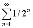

Апории Зенона
И куда же ты полез, Ахиллес? Говорил: “Вон ту фигню? Догоню!” Никому, едрена мать, не поймать философских черепах в черепах. Евгений Лукин
Меня послушай, мать едрена, и намотай на ус для вида: кому учиться у Хирона, кому, увы, у Парменида. И сам решай, держать ли птаху своею крепкой потной дланью: кому — супец из черепахи, кому — мозги, но голоданье. Блажен, кто посетил планету до измышлений элеата. Зенон нам друг, вопросов нету, но в чем утроба виновата?.. Руслан Смородинов |
Как показывает мой личный опыт, апории Зенона — идеальный тест на самостоятельность мышление. Причем это — тот самый тест, на котором могут “завалиться” люди с самыми почетными званиями. Мало того, его, как правило, не проходят именно обладатели технических дипломов и степеней, называя Зенона софистом. Потому что “технари” привыкли оперировать четкими определениями, установленной формализацией и т.д. А апории Зенона — это тот самый гносеологический кошмар, который зрит в самый корень и ставит под сомнение любую формализацию и любые термины. Они требуют мышления, не отягощенного догмами, т.е. самостоятельного мышления. Они показывают разницу между знаниями и разумом, начитанностью и умом.
Апории Зенона неразрешены и поныне. Причем современные издания, в отличие от советских, с этим соглашаются: “А[пории] теперь признаются подлинными парадоксами, связанными, в частности, с описанием движения” (Ивин А. А., Никифоров А. Л. Словарь по логике. — М.: Туманит, изд. центр ВЛАДОС, 1997. — Стр. 22). Как вы увидите по прочтении нижеприведенных статей, все т.н. “разрешения” апорий представляют собой логическую ошибку ignorantia elenchi, состоящую в том, что доказывается не тот тезис, который требуется доказать.
Я представляю вашему вниманию три статьи, которые, с моей точки зрения, более или менее убедительно раскрывают проблемы, связанные с апориями. Разумеется, мало сказать, что апории неразрешимы. Куда более интересно проследить за рассуждениями авторов статей и за тем, какие глобальные вопросы выросли из незамысловатых апорий. Оказалось, что ни математика, ни физика, ни другая наука не могут обезвредить элеатских парадоксов. Наоборот, сами апории и вытекающие из них вопросы постоянно требуют пересмотра уже устоявшейся формализации. И для разрешения апорий необходимо разрешить основополагающие вопросы: чтó собой представляет мироздание — бытие или становление? чтó такое бесконечность? дискретен мир или непрерывен? как разрешить проблемы пространства и времени? и т. д.
Первая из представленных статей принадлежит А.М. Анисову. В ней достаточно четко обозначены проблемы, связанные непосредственно с самими апориями. Вторая статья написана П.П. Гайденко и, увы, совершенно не освещает проблематику апорий. Зато в ней вы найдете интересные сведения, связанные с математическим анализом и континуумом. Третья статья, автор которой мне, к сожалению, неизвестен, достаточно в непринужденной манере (что, кстати, не умоляет ценности самой статьи) рассказывает об апориях и других парадоксах с точки зрения логики и математики. Представленные статьи публикуются с незначительными сокращениями.
Руслан Хазарзар
А. М. Анисов
Апории Зенона и проблема движения
Нашей целью будет не реконструкция зеноновских аргументов, а стремление понять с точки зрения современной науки, на какие реальные трудности в анализе движения указал Зенон Элейский. Именно указал, поскольку о попытке приписать непосредственно Зенону современную постановку проблем движения не может быть и речи. Кстати говоря, эта постановка в логико-философской литературе не отличается единством. Нередко ответственность за парадоксы движения возлагается на неточность и размытость используемых понятий [1]. Уточним понятия — парадоксы исчезнут. Мы с этим не согласны. Апории Зенона касаются самих основ человеческого миропонимания. Они требуют не просто уточнения понятий, а выбора философской платформы объяснения реальности. Поскольку дело построения таких платформ не может быть завершено, пока существует мыслящий разум, на выборе одной из них лежит печать неизбежной исторической ограниченности. Сказанное, разумеется, в полной мере относится и к построениям в данной статье. Но сегодня, несомненно, мы понимаем и знаем больше, чем два с половиной тысячелетия назад, а завтра, возможно, удастся продвинуться вперед еще дальше [2].
Начнем рассмотрение зеноновских затруднений с апорий о движении. Ахилл и черепаха. Ахилл — герой и, как бы мы сейчас сказали, выдающийся спортсмен. Черепаха, как известно, одно из самых медлительных животных. Тем не менее Зенон утверждал, что Ахилл проиграет черепахе состязание в беге. Примем следующие условия. Пусть Ахилла отделяет от финиша расстояние 1, а черепаху — ½. Двигаться Ахилл и черепаха начинают одновременно. Пусть для определенности Ахилл бежит в 2 раза быстрее черепахи. Тогда, пробежав расстояние ½, Ахилл обнаружит, что черепаха успела за то же время преодолеть отрезок ¼ и по-прежнему находится впереди героя. Далее картина повторяется: пробежав четвертую часть пути, Ахилл увидит черепаху на одной восьмой части пути впереди себя и т. д. Следовательно, всякий раз, когда Ахилл преодолевает отделяющее его от черепахи расстояние, последняя успевает уползти от него и по-прежнему остается впереди. Таким образом, Ахилл никогда не догонит черепаху. Начав движение, Ахилл никогда не сможет его завершить.
Знающие математический анализ обычно указывают, что ряд

сходится к 1. Поэтому, дескать, Ахилл преодолеет весь путь за конечный промежуток времени и, безусловно, обгонит черепаху [3]. Но вот что пишут по данному поводу Д. Гильберт и П. Бернайс:
“Обычно этот парадокс пытаются обойти рассуждением о том, что сумма бесконечного числа этих временных интервалов все-таки сходится и, таким образом, дает конечный промежуток времени. Однако это рассуждение абсолютно не затрагивает один существенно парадоксальный момент, а именно парадокс, заключающийся в том, что некая бесконечная последовательность следующих друг за другом событий, последовательность, завершаемость которой мы не можем себе даже представить (не только физически, но хотя бы в принципе), на самом деле все-таки должна завершиться” [4].
Принципиальная незавершаемость данной последовательности заключается в том, что в ней отсутствует последний элемент. Всякий раз, указав очередной член последовательности, мы можем указать и следующий за ним. Интересное замечание, также указывающее на парадоксальность ситуации, встречаем у Г. Вейля:
“Представим себе вычислительную машину, которая выполняла бы первую операцию за ½ минуты, вторую — за ¼ минуты, третью — за ⅛ минуты и т. д. Такая машина могла бы к концу первой минуты “пересчитать” весь натуральный ряд (написать, например, счетное число единиц). Ясно, что работа над конструкцией такой машины обречена на неудачу. Так почему же тело, вышедшее из точки А, достигает конца отрезка В, “отсчитав” счетное множество точек А1, А2, ..., Аn, ... ?” [5]
Древние греки тем более не могли себе представить завершенную бесконечную совокупность. Поэтому вывод Зенона о том, что движение из-за необходимости “пересчитать” бесконечное число точек не может закончиться, еще тогда произвел большое впечатление. На схожих аргументах основывается апория о невозможности начать движение.
Дихотомия. Рассуждения очень простое. Для того, чтобы пройти весь путь, движущееся тело сначала должно пройти половину пути, но чтобы преодолеть эту половину, надо пройти половину половины и т. д. до бесконечности. Иными словами, при тех же условиях, что и в предыдущем случае, мы будем иметь дело с перевернутым рядом точек: (½)n, ..., (½)3, (½)2, (½)1. Если в случае апории Ахилл и черепаха соответствующий ряд не имел последней точки, то в Дихотомии этот ряд не имеет первой точки. Следовательно, заключает Зенон, движение не может начаться. А поскольку движение не только не может закончиться, но и не может начаться, движения нет. Существует легенда, о которой вспоминает А. С. Пушкин в стихотворении «Движение»:
Движенья нет, сказал мудрец брадатый.
Другой смолчал и стал пред ним ходить.
Сильнее бы не мог он возразить;
Хвалили все ответ замысловатый.
Но, господа, забавный случай сей
Другой пример на память мне приводит:
Ведь каждый день пред нами солнце ходит,
Однако ж прав упрямый Галилей.
Действительно, согласно легенде, один из философов так и “возразил” Зенону. Зенон велел быть его палками: ведь он не собирался отрицать чувственное восприятие движения. Он говорил о его немыслимости, о том, что строгое размышление о движении приводит к неразрешимым противоречиям. Поэтому, если мы хотим избавиться от апорий в надежде, что это вообще возможно (а Зенон как раз считал, что невозможно), то мы должны прибегать к теоретическим аргументам, а не ссылаться на чувственную очевидность. Рассмотрим одно любопытное теоретическое возражение, которое было выдвинуто против апории Ахилл и черепаха.
“Представим себе, что по дороге в одном направлении движутся быстроногий Ахилл и две черепахи, из которых Черепаха-1 несколько ближе к Ахиллу, чем Черепаха-2. Чтобы показать, что Ахилл не сможет перегнать Черепаху-1, рассуждаем следующим образом. За то время, как Ахилл пробежит разделяющее их вначале расстояние, Черепаха-1 успеет уползти несколько вперед, пока Ахилл будет пробегать этот новый отрезок, она опять-таки продвинется дальше, и такое положение будет бесконечно повторяться. Ахилл будет все ближе и ближе приближаться к Черепахе-1, но никогда не сможет ее перегнать. Такой вывод, конечно же, противоречит нашему опыту, но логического противоречия у нас пока нет.
Пусть, однако, Ахилл примется догонять более дальнюю Черепаху-2, не обращая никакого внимания на ближнюю. Тот же способ рассуждения позволяет утверждать, что Ахилл сумеет вплотную приблизиться к Черепахе-2, но это означает, что он перегонит Черепаху-1. Теперь мы приходим уже к логическому противоречию” [6].
Здесь трудно что-либо возразить, если оставаться в плену образных представлений. Необходимо выявить формальную суть дела, что позволит перевести дискуссию в русло строгих рассуждений. Как нам кажется, первая апория сводится к следующим трем утверждениям:
(0) Каков бы ни был отрезок [A B], движущееся от А к В тело должно побывать во всех точках отрезка [A B].
(1) Любой отрезок [A B] можно представить в виде бесконечной последовательности убывающих по длине отрезков [A a1] [a1 a2] [a2 a3] ... [an an+1].
(2) Поскольку бесконечная последовательность аi (1 ≤ i < ω) не имеет последней точки, невозможно завершить движение, побывав в каждой из точке этой последовательности.
Проиллюстрировать полученный вывод можно по-разному. Наиболее известная иллюстрация — “самое быстрое никогда не сможет догнать самое медленное” — была рассмотрена выше. Но можно предложить более радикальную картину, в которой обливающийся потом Ахилл (вышедший из пункта А) безуспешно пытается настичь черепаху, преспокойно греющуюся на Солнце (в пункте В) и даже не думающую убегать. Суть апории от этого не меняется. Иллюстрацией тогда станет куда более острое высказывание — “самое быстрое никогда не сможет догнать неподвижное”. Если первая иллюстрация парадоксальна, то вторая — тем паче.
При этом нигде не утверждается, что убывающие последовательности отрезков ai для [A B] и ai' для [A' B'] должны быть одинаковы. Напротив, если отрезки [A B] и [A' B'] неравны по длине между собой, их разбиения на бесконечные последовательности убывающих отрезков окажутся различными. В приведенном рассуждении Ахилла отделяет от черепах 1 и 2 разные расстояния. Поэтому мы имеем два различных отрезка [A B1] и [A B] с общей начальной точкой А. Неравные отрезки [A B1] и [A B] порождают различные бесконечные последовательности точек, и недопустимо использовать одну из них вместо другой. Между тем именно эта незаконная операция применяется в аргументах о двух черепахам [7].
Если не смешивать иллюстрации и существо апории, то можно утверждать, на наш взгляд, что апории Ахилл и Дихотомия симметричны по отношению к друг другу. В самом деле, Дихотомия также водится к следующим трем утверждениям:
(0) Каков бы ни был отрезок [A B], движущееся от А к В тело должно побывать во всех точках отрезка [A B].
(1) Любой отрезок [A B] можно представить в виде бесконечной последовательности убывающих по длине отрезков [bn+1 bn] ... [b3 b2] [b2 b1] ... [b1 B].
(2) Поскольку бесконечная последовательность bi не имеет первой точки, невозможно побывать в каждой из точек этой последовательности.
Таким образом, апория Ахилл основывается на тезисе о невозможности завершить движение из-за необходимости посетить последовательно каждую из точек бесконечного ряда, упорядоченного по типу ω (т. е. по типу порядка на натуральных числах), который не имеет последнего элемента. В свою очередь Дихотомия утверждает невозможность начала движения из-за наличия бесконечного ряда точек, упорядоченных по типу ω* (так упорядочены целые отрицательные числа), который не имеет первого элемента.
Проанализировав более тщательно две приведенные апории, мы обнаружим, что обе они опираются на допущение о непрерывности пространства и времени в смысле их бесконечной делимости. Такое допущение непрерывности отличается от современного, но имело место в древности. Без допущения тезиса о том, что любой пространственный или временной интервал можно разделить на меньшие по длине интервалы, обе апории рушатся. Зенон прекрасно это понимал. Поэтому он приводит аргумент, исходящий из принятия допущения о дискретности пространства и времени, т. е. допущения о существовании элементарных, далее неделимых, длин и времен.
Стадий. Итак, допустим существование неделимых отрезков пространства и интервалов времени. Рассмотрим следующую схему, на которой каждая клетка таблицы представляет неделимый блок пространства. Имеется три ряда объектов А, В и С, занимающих по три блока пространства, причем первый ряд остается неподвижным, а ряды В и С начинают одновременное движение в направлении, указанном стрелками:
|
A1 |
A2 |
A3 |
||
|
В3 |
В2 |
В1 |
→ | |
|
← |
С1 |
С2 |
С3 |
(0) Начальное положение
|
А1 |
А2 |
А3 |
||
|
В3 |
В2 |
В1 |
||
|
С1 |
С2 |
С3 |
(1) Конечное положение
Ряд С, утверждает Зенон, за неделимым момент времени прошел одно неделимое место неподвижного ряда А (место А1). Однако за то же самое время ряд С прошел два места ряда В (блоки В2 и В3). Согласно Зенону, это противоречиво, т. к. должен был встретиться момент прохождения блока В2, изображенный на следующей схеме:
|
В3 |
В2 |
В1 |
||
|
С1 |
С2 |
С3 |
(0/1) Промежуточное положение
Но где в это промежуточное положение находился ряд А? Для него просто не остается соответствующего места. Остается либо признать, что движения нет, либо согласиться с тем, что ряд А делим не на три, а на большее количество мест. Но в последнем случае мы вновь возвращаемся к допущению о бесконечной делимости пространства и времени, снова попадая в тупик апорий Дихотомия и Ахилл. При любом исходе движение оказывается невозможным. Известный английский физик-космолог и философ Дж. Уитроу следующим образом прокомментировал сложившуюся ситуацию:
Апория Стадий, “несмотря на все ее остроумие, решается довольно просто, т. к., если пространство и время состоят из дискретных единиц, в этом случае относительные движения должны быть таковы, что переходы типа 0 → 1 — АА могут случаться в последующие моменты. Отрицание Зеноном этой возможности основывается не на логическом законе, а просто на ошибочной апелляции к “здравому смыслу”, т. к. в действительности он молчаливо предполагает постулат непрерывности, который несовместим с гипотезой, принятой в начале рассуждения. Как это ни странно, но если мы примем такие гипотезы, то движение будет представлять собой прерывную последовательность различных конфигураций, как в кинофильме, и ни в какой момент времени не будут существовать промежуточные конфигурации. Переход электрона с одной орбиты на другую рассматривается в элементарной теории атома Бора именно как переход такого типа” [8].
Мы считаем, что сказанное Уитроу верно. Промежуточное положение (0/1) с логической точки зрения вовсе не обязано наличествовать в какой-то момент времени, поскольку предположение о его отсутствии непротиворечиво [9]. Другой вопрос, что наши привычные представления о движении, опирающиеся интуицию непрерывности, оказываются неадекватными в дискретном случае. В этом отличие дискретной ситуации от ситуации с бесконечной делимостью пространственных и временных интервалов. Утверждение, что ряд ½1, ½2, ½3, ..., ½n завершится, логически противоречиво, если n не ограничено. Аналогичным образом, необычная вычислительная машина Германа Вейля никогда не сможет завершить вычисления в какой-то момент времени из-за неограниченного числа шагов процесса пересчета множества натуральных чисел. Можно, используя понятие предела, просуммировать упомянутый ряд и получить единицу, или, вводя трансфинитные числа, допустить выполнение в ходе вычислений количества шагов, равного первому бесконечному числу ω. Такие построения уже будут непротиворечивыми. Но они обладают существенным, на наш взгляд, изъяном.
Осмысливая принципы, лежащие в основе теории множеств (которая может, как известно, рассматриваться в качестве фундамента современной математики), Дж. Р. Шенфилд указывает на “следующий фундаментальный вопрос: если дана совокупность S шагов, то существует ли шаг, следующий за каждым шагом из S ?” [10] Рассматривая случаи, когда S состоит из единственного шага или из бесконечной последовательности шагов Sn, Si, ..., он отвечает на поставленный вопрос утвердительно: “В первых двух случаях мы отчетливо можем представить себе ситуацию, когда все шаги из S уже осуществлены” [11]. Применим эти рассуждения к апории Ахилл. Ряд ½1, ½2, ½3, ..., ½n, ... не может быть завершен, т. к. у него отсутствует последний элемент. Но представим себе, что Ахилл уже побывал в каждой из точек, которая следует за всеми точками бесконечного ряда и является концом пути. Движение, таким образом, завершено. Проблема, однако, в том и заключается, каким образом получилось так, что Ахилл побывал во всех точках не имеющего конца ряда ½1, ½2, ½3, ..., ½n, ... ? Если уже “дано”, то и говорить не о чем — апория разрешается, фактически, путем постулирования наличия решения [12].
Логически все это непротиворечиво (вопреки мнению самого Зенона). Но
здесь процесс движения, содержащий, по условию задачи, бесконечное
число шагов, сводится, по сути, к трем шагам: на шаге 1
вводится ряд точек ½1, ½2, ½3, ..., ½n, ..., на шаге 2
постулируется, что Ахилл побывал в каждой из этих точек, а на
шаге 3 делается вывод о завершении движения в конечной точке, не
принадлежащей рассматриваемому ряду. В результате как бы “пересчитан”
ряд, упорядоченный по типу ω+1. По
видимости речь идет о бесконечном по числу шагов процессе, тогда как на
деле процесс при таком подходе завершается за три шага. Сказанное
приобретает бóльшую наглядность, если
обратиться к симметричной ситуации с апорией Дихотомия. Здесь
вначале движущееся тело поместим в точке старта. Затем добавим к имеющейся
точке старта совокупность точек, упорядоченный по типу ω*, получив тем самым линейный порядок типа
1+ω*, и, на последнем шаге,
постулируем, что тело побывало в каждой из точек ряда ω*. Значит, движение успешно началось, хотя
между точкой старта и любой из последующих точек лежит бесконечное
множество промежуточных точек. Снова перед нами процесс из трех
шагов, и снова вопрос о принципиальной возможности пересчета
бесконечного порядкового типа 1+
Легко представить себе совокупности, упорядоченные по типам ω+1 и 1+ω*, в качестве данностей. Но вообразить процесс пошагового получения этих совокупностей элемент за элементом, в соответствии с порядком на них, логически невозможно. Неизбежно на каком-то шаге либо а) будет нарушен порядок прохождения элементов (наряду с движениями от предыдущих точек к последующим придется вводить скачки от последующих точек к предыдущим), либо б) потребуется постулировать переход не от элемента к элементу, а от совокупности элементов к элементу или наоборот. Первая альтернатива ускользнула от внимания исследователей и потому требует особого разбора, который будет проведен в дальнейшем.
Что касается второй альтернативы, то именно она реализуется в рассмотренных псевдорешениях парадоксов движения. Между тем, в апориях Зенона движение понимается как переход от точки к точке, но ни в коем случае не как переход от совокупности точек к точке или обратно. Проблема в том, можно ли, двигаясь от одной точки пути к другой, завершить движение, и в том, можно ли, попав в какую-то точку, найти другую точку, куда нужно попасть на следующем шаге, что необходимо для начала процесса движения. Если же вместо переходов от точки к точке в процессе движения нам рекомендуют переходить от множества точек к отдельным точкам или от отдельных точек к множествам точек, то поставленная проблема подменяется другими. Кроме того, если в процессе движения мы должны посетить бесконечное количество точек, то и сам этот процесс неизбежно оказывается содержащим бесконечное число шагов. Как было показано, переходы от совокупностей точек к точкам и обратно могут совершаться за конечную последовательность шагов. Просто на одном из этих шагов обязательно будет использована бесконечная совокупность точек, введенная как актуальная данность, но не полученная в процессе поэтапного конструирования структура. В этом и заключается изъян предлагаемого разрешения апорий.
Получается в итоге, что трудности, связанные с апориями Ахилл и Дихотомия, остались не преодоленными. Другое дело апория Стадий, которая оставляет надежду на положительное разрешение проблемы движения в дискретном случае. Однако у Зенона есть апория против движения, которая вообще не связана ни с трудностями оперирования с бесконечностью, ни с вопросом о непрерывности или дискретности пространства и времени. Это апория Летящая стрела. Формулируется она очень просто. В каждый момент полета стрела занимает определенное место и покоится в нем. В противном случае придется допустить, что за мгновение стрела способна изменить свое местоположение, что нелепо. Следовательно, движение стрелы есть сумма состояний покоя, т. е. стрела не движется.
 Суть затруднения в том, что, согласно Зенону, движение тела означает
изменение его местоположения. За мгновение времени никаких изменений в
местоположении тел произойти не может. Но поскольку время слагается из
мгновений, в каждой из которых все тела покоятся, движения нет. Отметим,
что это рассуждение нельзя опровергнуть ссылкой на то, что движущееся тело
обладает отличной от нуля мгновенной скоростью, как это иногда думают [13]. Действительно, рассмотрим следующий рисунок.
Видно, что более высокая скорость бега Ахилла по сравнению с черепахой
отражена меньшим углом наклона графика его бега к оси S. Угол наклона
графика связан, как известно, с мгновенной скоростью, значение которой
определяется тангенсом угла касательной к графику функции. Однако все это
не отменяет того факта, что в любой момент времени t Ахилл и черепаха
находятся в строго определенных точках пути. В этих точках они
вполне неподвижны. Вся картина их взаимного расположения во времени и
пространстве дана сразу, целиком. И ничто в этой картине не движется, вся
она складывается из состояний покоя в каждой точке графиков.
Суть затруднения в том, что, согласно Зенону, движение тела означает
изменение его местоположения. За мгновение времени никаких изменений в
местоположении тел произойти не может. Но поскольку время слагается из
мгновений, в каждой из которых все тела покоятся, движения нет. Отметим,
что это рассуждение нельзя опровергнуть ссылкой на то, что движущееся тело
обладает отличной от нуля мгновенной скоростью, как это иногда думают [13]. Действительно, рассмотрим следующий рисунок.
Видно, что более высокая скорость бега Ахилла по сравнению с черепахой
отражена меньшим углом наклона графика его бега к оси S. Угол наклона
графика связан, как известно, с мгновенной скоростью, значение которой
определяется тангенсом угла касательной к графику функции. Однако все это
не отменяет того факта, что в любой момент времени t Ахилл и черепаха
находятся в строго определенных точках пути. В этих точках они
вполне неподвижны. Вся картина их взаимного расположения во времени и
пространстве дана сразу, целиком. И ничто в этой картине не движется, вся
она складывается из состояний покоя в каждой точке графиков.
Рассмотренное представление движения имеет статический характер. Оно полностью подобно изображению движения при помощи кинематографии. Как известно, изображение движения на киноленте складывается из отдельных кадров, на которых все неподвижно. Но если прокрутить эту ленту со скоростью 24 кадра в секунду, возникает иллюзия движения. Теперь представим себе, что количество кадров ленты несчетно, и что все они упорядочены так же, как и действительные числа, в результате чего каждому моменту времени соответствует один кадр. В итоге мы получим как раз ту картину движения, которая сводит его к сумме состояний покоя (отдельных кадров), расположенных непрерывным образом (в отличие от реальных кинолент). Но именно так и описывается движение в современной физике. Выдающиеся ученые чувствовали это. Например, такой тонкий аналитик, как Б. Рассел, фактически прямо признал то, что Зенон отрицал в качестве парадокса: “... мы живем в неизменном мире и... стрела в каждый момент своего полета фактически покоится” [14], однако, согласно Расселу, данное обстоятельство не мешает признавать наличие движений и изменений в том смысле, что в разные моменты времени мир находится в разных состояниях.
А. Грюнбаум в ответ на это возразил, что кадры киноленты существуют одновременно, и потому те, кто обвиняет современную физику в уподоблении мира киноленте, приписывают ей абсурдное положение о том, что все события одновременны [15]. Хотя некоторые авторы давали повод для таких упреков, в целом выставленное возражение ошибочно. Мы имеем дело с тропом, который можно назвать кинематографической метафорой, так что о буквальном отождествлении мира и реальных кинолент речь, конечно, не идет. В рамках кинематографической метафоры отдельный кадр соответствует состоянию мира в определенный момент времени, так что разные кадры представляют разные мгновения времени, в полном согласии с физикой. И когда оппоненты А. Грюнбаума говорят о сосуществовании последовательных моментов времени в статической картине мира, то термин “сосуществовать” можно использовать в безвременнóм смысле. Рассмотрим словосочетания “совокупность событий 1997 года” и “совокупность событий 9997 года”. С точки зрения статики обе упомянутые совокупности не меняются. Они существуют в неизменном виде независимо от всяких ссылок на момент “теперь” или “сейчас” или на какие-либо другие временные интервалы, что и позволяет говорить о них как сосуществующих в безвременном смысле, подобном тому, в каком мы говорим о совокупностях предметов, изображенных на кадрах с номерами 1997 и 9997. Только в отличие от реальных кинолент, нельзя утверждать, что “кадры” “совокупность событий 1997 года” и “совокупность событий 9997 года” существуют одновременно. Однако это не означает, что фраза “Существуют события 1997 года и существуют события 9997 года” лишилась смысла. Напротив, в статической концепции времени она вполне осмыслена. Но это все, что требуется для утверждения совместного сосуществования разновременных совокупностей событий.
Разумеется, раздавались голоса против такого статического подхода к описанию времени и движения в современной науке. Одним из критиков был философ-интуитивист А. Бергсон. Он настаивал на том, что необходимо различать описание результатов движения и описание движения как особого процесса или акта. По мнению Бергсона, наука в принципе не способна постичь движение как процесс или акт:
“... Если во времени механика постигает лишь одновременность [16], то в движении — только неподвижность.
Можно было бы предвидеть этот результат, если вспомнить, что механика по необходимости оперирует с уравнениями, а алгебраическое уравнение всегда выражает совершившийся факт. Между тем сама суть длительности и движения, какими они предстают нашему сознанию, заключается в процессе непрерывного становления; алгебра же может выражать в своих формулах результаты, полученные в определенный момент длительности, и положение, занимаемое в пространстве движущимся телом, но она не в состоянии выразить саму длительность и само движение” [17].
В случае движения мы “имеем дело не с вещью, но с процессом”, поэтому “в движении следует различать два элемента: пройденное пространство и действие, посредством которого тело проходит его”. Обращаться с этими элементами нужно по-разному. Например, “делить можно вещь, но не акт” [18]. Зенон же, по мнению Бергсона, смешивает процесс движения, каждый акт которого неделим, с бесконечно делимым пространством.
“Почему Ахилл обгоняет черепаху? Потому, что каждый шаг Ахилла и каждый шаг черепахи в качестве движений неделимы, а в качестве пространства — суть различные величины, а значит, пространство, пройденное Ахиллом, будет больше, чем сумма расстояний, пройденного черепахой, и того, на которое она вначале его опередила. Зенон совершенно не принимает в расчет, что только пространство можно разлагать и вновь составлять, поэтому он, воссоздавая движение Ахилла по тому же закону, что и движения черепахи, смешивает пространство с движением” [19].
Здесь А. Бергсон не прав. Похоже, для Зенона было несомненным, что движение есть именно процесс. Ведь он говорит не о трудностях введения завершенных в своей данности отрезков пространства, а о немыслимости процесса их прохождения. Либо движение будет описано как процесс, как ряд последовательных операций или действий по осуществлению движения, либо придется признать, что любая попытка такого описания неминуемо ведет к противоречиям, что будет означать логическую невозможность движения. Согласно Пармениду и Зенону, неизбежна вторая альтернатива. Движения как процесса нет и быть не может. Со своей стороны, объявляя апории против движения софизмами, Бергсон не в состоянии предложить приемлемого их решения. Нельзя же считать таким решением наивную апелляцию к интуиции [20]. Вместе с тем, в рассуждениях французского философа о коренном отличии статического представления о движении от процессуального заключено рациональное зерно.
Современная наука, особенно математика и физика, блестяще подтвердила философию элеатов, приняв статические представления о движении. Та картина движения, которую она дает, надо полагать, вполне бы удовлетворила как Парменида, так и Зенона с точки зрения отсутствия в ней процесса движения. Обгоняя черепаху, Ахилл не движется в том смысле, что не переходит из одного места в другое. Просто в один момент времени он находится в одном месте, в другой — в другом, подобно тому, как мчащийся по шоссе автомобиль на киноленте просто размещается в разных кадрах этой ленты. Произошла всего лишь смена терминологии при неизменном подходе, выдвинутом еще элеатами. Они вряд ли согласились бы считать уравнения и графики функций, показывающие, где находится движущееся тело в каждый момент времени, описанием движения. Такого рода аппарат способен зафиксировать наличный результат движения, но не объяснить, как тело переходит от одного места к другому. А раз нет актов перехода, нет и движения. Но можно отмахнуться от проблемы процессуальности движения, подменив ее статическим геометрическим представлением: вместо актов перехода взять графики соответствующих функций и назвать их описаниями движения тел.
Можно вообразить, что если бы элеатам предъявили современный взгляд на движение, сводящийся к тому, что в одни моменты времени тела находятся тут, а в другие там, то они вряд ли стали бы спорить с такой позицией. В сущности, именно это и утверждает Зенон в апории Летящая стрела. Стрела в разные мгновения полета находится в разных местах. Данное положение он и не думает оспаривать. Только если современная наука ставит здесь точку, считая, что тем самым философские проблемы описания движения исчерпаны и осталось лишь преодолеть технические трудности, элеаты идут дальше, требуя, если угодно, предъявления своего рода алгоритмов движения, а не геометрических функций или уравнений. Их вывод о невозможности движения основывается исключительно на неудачах попыток построения таких алгоритмов. Осталось вернуться к статической картине мира, в которой в разные моменты времени тела могут находиться в разных местах, но покоятся в каждом из них. Словно бы вняв призыву элеатов, современная наука послушно следует в русле заданной ими парадигмы. Единственное отличие состоит в том, что наука не согласилась считать движение чем-то бóльшим, чем нахождением в разные моменты времени в разных местах. Но поистине это бунт на коленях. Фактически, современная наука приняла выводы элеатов, забыв о том, откуда и как они были получены, изменив при этом терминологию и назвав движением то, что элеаты не могли позволить считать таковым.
Сходство прослеживается вплоть до забавных мелочей. Спросите к современного космолога, как выглядит Вселенная с точки зрения внешнего наблюдателя? Распространенный ответ — Вселенная с точки зрения является четырехмерной гиперсферой конечных размеров. Подобно тому, как существо, двигающееся по сфере в одном направлении, возвращается в ту же точку, путешественник по нашей Вселенной, если он никуда не сворачивал, вернется снова на Землю, хотя все время удалялся от нее. Правда, промежуток времени будет очень большой. Так что не только центральный тезис элеатов об отсутствии движения находит поддержку в современном естествознании, но даже такая малозначительная деталь философии Парменида, как конечность [21] и сферичность бытия, тоже встречает в современной космологии благожелательный прием.
Другое дело, что принятие основных выводов философии элеатов (терминологические расхождения не в счет) происходит в науке неосознанно. Далеко не все физики и математики даже слышали о Пармениде, хотя, быть может, имя Зенона им более известно. Современная наука взяла на вооружение главный тезис элеатов, состоящий в противопоставлении чувственного знания и знания умопостигательного. Желая описать при помощи математики какое-либо явление природы, ученые меньше всего склонны при этом обращать внимание на соответствие принятых теоретических допущений данных восприятия и даже эксперимента. Например, допущение в современной математике и физике бесконечных структур, весьма проблематичных с точки зрения эмпирического оправдания, приобрело поистине повальный характер. Так, время сплошь и рядом отождествляют с множеством действительных чисел, количество которых не только бесконечно, но и несчетно. Явно дискретная структура нашего опыта никак не сказывается на масштабах применения в физике непрерывных образований (вроде только что упоминавшейся действительной прямой) и т. д. — количество примеров легко умножить...
Цит. по Анисов А. М. Апории Зенона и проблема движения // Труды научно-исследовательского семинара Логического центра Института философии РАН / РАН. Ин-т философии, Обществ. ин-т логики, когнитологии и развития личности. — М., 2000. — Вып. 14 / Редкол.: А. С. Карпенко (отв. ред.) и др. — Стр. 139—153.
[1] См., напр., Войшвилло Е. К. Еще раз о парадоксе движения о диалектических и формально-логических противоречиях // «Философские науки», 1964, № 4.
[2] Вряд ли в данном случае стоит разделять оптимизм А. М. Анисова, поскольку о пространстве и времени, а следовательно, и о движении мы знаем отнюдь не больше, чем древние греки. Научные теории, которые, как правило, дают нам новые знания, давным-давно отошли от проблемы движения и со времен Галилея движением называют “продвинутость”. Сама же проблема движения осталась за рамками науки. (Руслан Хазарзар.)
[3] Действительно, апория Ахилл и черепаха известна нам прежде всего в формулировке Аристотеля (Физика, 29 А 26 DK): “Самый быстрый бегун никогда не догонит самого медленного, т. к. догоняющий должен прежде достичь того места, откуда сдвинулся убегающий, так что более медленный всегда будет чуть впереди”. На это оппоненты Зенона, как правило, возражают: “Почему это “всегда будет чуть впереди”? Пусть скорость первого — 10 м/с, второго — 5 м/с, начальная дистанция между ними — 5 м. Тогда через 2 секунды более быстрый бегун будет на 5 м впереди, следовательно, слово “всегда” неверно”.
Поистине удивительно, как разум может запутывать себя в догматическом нежелании признать свою слабость: “всегда (черепаха впереди)”, “никогда (Ахилл не догонит)” — не значит бесконечное течение времени. Согласно апориям, и время не превысит своего предела. А парадокс не опровергается его констатацией. Констатацией он как раз утверждается. К сожалению, многих настолько приучили опровергать путем приведения к противоречию, что они и сами противоречия (парадоксы) готовы “опровергать” подобным же образом. Ведь можно переформулировать апорию следующим образом: “Никогда не пройдет одна секунда, ибо когда пройдет полсекунды, останется полсекунды, когда пройдет половина полсекунды (¼), останется ¼ секунды...” и т. д. Как же действительно опровергается парадокс? Он опровергается демонстрацией того, за счет чего он существует. Т. е. необходимо указать принципиально неверное утверждение в рассуждениях Зенона, а не демонстрировать путем других рассуждений или эмпирики, что Зенон пришел к противоречию — Зенон об этом и сам прекрасно знал и сам же об этом говорил. Наконец, формулировку апории можно изменить, не меняя ее сути: “Самый быстрый бегун не сможет догнать самого медленного (хотя при этом он не будет прекращать движения), ибо догоняющий должен прежде достичь того места, откуда сдвинулся убегающий, так что более медленный будет впереди”. (Руслан Хазарзар.)
[4]Гильберт Д., Бернайс П. Основания математики. Логические исчисления и формализация арифметики. М., 1979. С. 40.
[5] Цит. по Даан-Дальмеднко А., Пенффер Ж. Пути и лабиринты. Очерки по истории математики. М., 1986. С. 237.
[6] Сидоренко Е. А. Логические выводы доказательства и теория дедукции // Логика научного познания. М., 1987. С. 92. Недавно автор вновь подтвердил свою позицию. См.: Сидоренко Е. А. О парадоксах и о том, как Ахиллу догнать черепаху // «Философские исследования», № 3. М., 1999.
[7] Как остроумно заметила по этому поводу Л. Н. Евтушенко, пусть каждый гонится за своей черепахой. Ведь если можно вводить Черепаху-1 и Черепаху-2, то почему нельзя ввести Ахилла-1 и Ахилла-2 ?
[8] Уитроу Дж. Естественная философия времени. М., 1964. С. 177.
[9] Увы, Анисов напрасно соглашается с Уитроу. Поставленный Зеноном вопрос абсолютно правомерен с логической точки зрения: если возможно продвижение одного тела относительно другого (в данном случае объекта В относительно объекта С) на одну “дискрету” пространства, то, следовательно, проходит некоторый интервал времени, а значит, совершенно правомерен вопрос, как изменилось и изменилось ли вообще положение объекта А относительно объектов В и С за этот промежуток времени? Если положение объекта А изменилось, то мы приходим к отмеченному Зеноном противоречию. Если же не изменилось, то движущее тело некоторый конкретный промежуток времени просто покоилось в одной точке, что само по себе противоречиво (см. апорию Летящая стрела). В квантовой механике этот вопрос решается путем постулирования максимально возможной скорости — скорости света с. Согласно этому постулированию, движущиеся друг навстречу другу со скорость с объекты приближаются друг к другу все с той же скоростью с, а не 2с, ибо никакие объекты не могут приближаться друг к другу (или удаляться друг от друга) со скоростью, большей скорости света. Но, во-первых, такое постулирование, насколько мне известно, оспаривается современными физиками, а во-вторых, оно не только не разрешает проблем движения, но и ставит новые. (Руслан Хазарзар.)
[10] Шенфилд Дж. Р. Аксиомы теории множеств // Справочная книга по математической логике. Теория множеств. М., 1982. С. 11.
[11] Там же, с. 12.
[12] Суть проблемы заключается в интеграции бесконечного количества частей, а наука — математический анализ, в частности — рассматривает только дифференциацию уже определенной, а значит, и актуализированной бесконечности: целое уже дано и остается только делить его на части; в то время как Зенон задается вопросом, а как это целое из таких частей составить (а уже потом пробовать его делить)? Получается, само решение возможно только при завершении процесса, т. е., по сути, возможно только при актуальной бесконечности. При потенциальной бесконечности, т. е. при условиях, заданных Зеноном, первые две апории (Ахилл и Дихотомия) неразрешимы. Но ведь условия, заданные Зеноном, безупречны с точки зрения логики. Посылка может быть либо ложной, либо универсальной. Ложность посылки никто не утверждает. Но если она универсальна, то вывод логически верен, ибо обратное утверждение противоречит универсальности посылки, что абсурдно. А потому утверждение, что ошибка Зенона якобы заключается в том, что предел бесконечной последовательности не является членом этой последовательности, есть не утверждение ошибки Зенона, но как раз его правоты: действительно, предела “догнал” в рассуждениях Зенона не получается. Логически все безупречно.
Впрочем, при рассмотрении проблем, связанных с апорией Ахилл и черепаха, мне однажды пришлось встретиться со следующим аргументом: “У нас в условии апории произведено деление на бесконечное число частей. Поэтому то, что мы не можем указать, на каком конечном этапе бегун догонит черепаху, не может служить основанием для утверждения о том, что он не догонит ее за бесконечное число этапов. Доказательство от противного здесь не применимо, мы не можем доказать, исходя из посылок, ни справедливость утверждения, ни справедливость отрицания. Кажущееся логичным рассуждение о том, что раз бегун не догоняет черепаху на конечном числе этапов (мы не можем указать конечный этап, на котором он ее догонит), то он не догонит ее и на бесконечном числе, является порочным кругом: доказывается ровно то утверждение, что кладется в основу”. Т. е. ставится под сомнение закон исключенного третьего, дающий основание доказательству от противного (что, кстати, само по себе уже ставит рассуждения Зенона в ряд парадоксов). Но ведь аналогичным путем в математике постулируются сходящиеся суммы: никто не может прямым путем доказать того, что они не превысят своего предела, это доказывается от противного. На каждом из этапов Ахилл не догоняет черепаху, причем число этих этапов потенциально бесконечно. А потому мы не только не можем указать конечный этап, на котором Ахилл догонит черепаху, мы знаем, что такой этап невозможен, ибо противоречит посылке. И здесь нет никакого порочного круга как логической ошибки, здесь именно “доказывается ровно то утверждение, что кладется в основу”. Circulus vitiosus как ошибка возможен при условном допущении посылки, а в апории посылка — бесспорна. При этом всякая логика тавтологична, если верна, и выводит ровно то, что в нее заложили. Т. е. мы снова возвращаемся к тому, с чего и начали: для опровержения апории необходимо опровергнуть посылку, а она-то как раз и неоспорима.
Другой небезынтересный аспект — тривиальность самой апории Ахилл и черепаха: мол, речь всегда идет о догоняющем Ахилле, а догоняющий (потенциальная бесконечность), разумеется, — и не догнал. Но, с другой стороны, если, как в математическом анализе, уже “дано” (актуальная бесконечность), то и говорить не о чем — апория разрешается, фактически, путем постулирования наличия решения. Но такое “решение” не менее тривиально рассуждений Зенона. Беда в том, что тривиальны оба варианта, и выходит, что в обоих случаях мы получаем ровно то, что постулируем. Но нетривиальность данной апории в том, что Зенон показывает невыводимость актуальной бесконечности из потенциальной. В то же самое время из опыта мы знаем, что догоняющий, если он быстрее, становится догнавшим и перегнавшим. И проблема описания движения в апории Ахилл и черепаха остается — во всяком случае, до тех пор, пока не будет постулирована дискретность пространства-времени. (Руслан Хазарзар.)
[13] Даан-Дальмеднко А., Пенффер Ж. Цит. соч. С. 238.
[14] Цит по Уитроу Дж. Там же. С. 179.
[15]Грюнбаум А. Философские проблемы пространства и времени. М., 1969. С. 405.
[16] Вот пример того, как неаккуратное использование слов способствует возникновению обоснованных подозрений в непонимании элементарных вещей. Утверждать, что “механика постигает лишь одновременность” - значит входить в вопиющее противоречие с действительным положением дел в этой науке. Еще раз повторим: критика статических, парменидовских, представлений о времени и движении современной науки не должна приписывать ей нелепое утверждение об одновременности разновременных событий.
[17] Бергсон А. Опыт о непосредственных данных сознания // Бергсон А. Соч. Т. 1. М., 1992. С. 101.
[18] Там же. С. 98.
[19] Там же. С. 99.
[19]Увы, и апелляция к интуиции совершенно не дает нам разрешения проблемы движения. Так, М. Мерло-Понти в своей работе «Пространство» пишет: “Пытаясь мыслить движение и разрабатывая его философию, мы незамедлительно попадаем под влияние критической установки, направленной на проверку истины. Мы спрашиваем себя, что же в действительности дано нам в движении; мы готовы отвергнуть явления, чтобы постичь истину движения, не осознавая, что именно эта установка редуцирует феномен и противостоит нашему желанию охватить его, поскольку она вводит вместе с понятием истины в себе такое предположение, которое способно скрыть от нас генезис движения. Предположим, что я бросаю камень. Он пролетает над садом. На мгновение он становится удаляющимся предметом, напоминающим метеор, а затем, когда падает на землю на некотором расстоянии, вновь становится камнем. Если я хочу “ясно” помыслить этот феномен, то его необходимо разложить на составные части. Я должен предположить, что сам камень реально в движении не изменяется. Поскольку камень, который я держал в своей руке и который обнаружил на земле в момент окончания его полета, — один и тот же, то, следовательно, он является тем же самым камнем, который передвигался в воздухе. Движение — это только атрибут движущегося тела и невидимо в самом камне. Оно может быть только изменением отношений между камнем и средой, окружающей его. Мы можем говорить о движении в той мере, насколько камень сохраняет свою идентичность, противополагаясь в различных соотношениях своему окружению. Если, с другой стороны, я предполагаю, что камень исчезает, достигая точки Р, а другой камень, тождественный первому, возникает из ничего в точке Р', находящейся на максимально близком расстоянии к первой точке, то, в этом случае, мы имеем не одно, а два различных движения. Следовательно, не существует движения, отличного от движущегося тела, которое бы переносило его от начальной точки к конечной, сохраняя свою непрерывность. Поскольку движение никоим образом не присуще движущемуся телу, а всецело заключается в его отношениях со своей окружающей средой, оно не может обойтись без внешнего указателя. Действительно, указатель является наилучшим способом наиболее явного приписывания движения “телу в движении”. Если различия между телом в движении и движением установлены, то не существует ни движения без движущегося тела, ни движения без объективного указателя, ни абсолютного движения. Тем не менее, эта идея фактически отрицает движение. Для того чтобы точно отличить движущееся тело от движения, необходимо, строго говоря, утверждать, что “движущееся тело” не движется. Как только мы привносим идею движущегося тела, которое остается в течение своего движения одним и тем же, аргументы Зенона вновь обнаруживают свою актуальность. В этом случае бесполезны возражения о том, что мы не должны рассматривать движение как последовательность дискретных позиций, соотносящихся с последовательностью дискретных моментов времени, и что пространство и время не состоят из совокупности дискретных элементов. Даже если мы рассматриваем два завершенных последовательных момента и две фиксированные примыкающие точки, то все равно между ними в каждом случае существует различие, несмотря на то, что оно меньше любого заранее заданного количества, а их дифференциация находится в начальной стадии. Идея движущегося тела, идентичного во всех фазах движения в качестве простого явления, исключает феномен “сдвига” и предполагает идею пространственной и временной позиций, которые всегда идентичны в себе, даже если они не являются таковыми для нас, и, следовательно, такое положение камня, которое всегда существует и никогда не изменяется. Даже если мы создадим математический способ, позволяющий зафиксировать неопределенную множественность позиций и моментов, то все равно невозможно понять сам акт перехода, имеющий место в одном и том же движущемся теле, который всегда осуществляется между двумя моментами и двумя позициями, независимо от того, в какой близости друг от друга мы их выбираем. Таким образом, пытаясь отчетливо мыслить движение, я не могу понять, как возможно его начало и то, как оно может быть дано мне как феномен”.
[20]Кроме того, оппоненты Зенона говорят, что в апории Стрела заложена следующая ошибка: утверждается, что в каждый момент времени стрела покоится (скорость = 0), а в отдельной точке вообще ничего нельзя сказать о движении/скорости объекта. Однако речь в данной апории идет о дискретной, прерывной модели, в котором каждый промежуток — есть сумма неделимых точек, точек-“атомов”. И здесь нужно задать вопрос: тело, преодолевшее неких промежуток, побывало во всех точках-“атомах” этого промежутка? Надо полагать, что побывало (в противном случае, тело “размазано” по некоторому отрезку, т. е. аморфно). Оно могло двигаться в рамках каждой отдельной точки-“атома”? Нет. Ибо продвижение на пол-“атома” невозможно уже хотя бы потому, что у самого движущего тела нет такой части — пол-“атома”, — которая могла бы продвинуться. Так чтó делало тело, когда было в определенной точке, если не могло двигаться в ее рамках? Ничего, отвечают оппоненты Зенона, ибо чтó можно сделать за нулевой промежуток времени (мол, мы не можем даже утверждать, что тело покоилось в этой точке, т. к. в отдельной точке мы не можем отличить движение от неподвижности)? Но ведь промежуток не нулевой, а меньший “дискретного” параметра. Хотя, по сути, в этот “промежуток времени” (не нулевой, но меньший “дискретного” параметра) “застывает” и само время, т. е. в этот “промежуток” нет и самого времени. И мы можем продолжить утверждение диалектического материализма “Движение есть, и движенья нет” до “Время есть, и времени нет”.
Апория Стрела показывает нам, что в дискретной модели мира объект даже не прыгает из точки в соседнюю точку, а исчезает из одной точки и появляется в другой (в противном случае мы приходим к непрерывности). По сути, это — два разных объекта, ибо между ними нет связи, непрерывности, идентичности, а это в корне противоречит интуитивному пониманию движения, ибо никто не называет движением исчезновение одного объекта в одном месте и появление другого объекта в другой точке. Движение мыслится и понимается нами как движение одного и того же тела, ибо движение — это атрибут движущегося тела и может быть только изменением отношений между телом и средой, окружающей его. Мы можем говорить о движении в той мере, насколько тело сохраняет свою идентичность, противополагаясь в различных соотношениях своему окружению. (Руслан Хазарзар.)
[21] Третий крупный представитель элейской школы — Мелисс — считал бытие бесконечным.
П. П. Гайденко
Понятие времени и проблема континуума
Категория времени принадлежит к числу тех, которые играют ключевую роль не только в философии, теологии, математике и астрономии, но и в геологии, биологии, психологии, в гуманитарных и исторических науках. Ни одна сфера человеческой деятельности не обходится без соприкосновения с реальностью времени: все, что движется, изменяется, живет, действует и мыслит, — все это в той или иной форме связано с временем. Однако удивительным образом само понятие времени представляет большие трудности для всякого, кто пытается постигнуть его природу. Не случайно о времени написаны горы литературы, особенно в последнее столетие, но число неразрешимых вопросов, как кажется, не только не уменьшается, а с каждым десятилетием, пожалуй, только возрастает.
Мы попытаемся рассмотреть лишь некоторые аспекты проблемы времени. Время непрерывно (или дискретно, как полагают некоторые). Поэтому для понимания его необходимо разобраться в природе континуума. В своей работе, посвященной анализу математического континуума, Георг Кантор подчеркивал, что невозможно определить континуум, если исходить из представлений о времени или пространстве, потому что сами эти представления могут быть объяснены только с помощью понятия континуума, которое должно быть исходным и простым и не должно зависеть в своем содержании от других понятий [1]. Это утверждение Кантора связано с его пониманием теории множеств как общего фундамента и математики в целом, и теории континуума в особенности.
Надо сказать, что размышления о природе времени с первых шагов научной и философской мысли в Древней Греции были неразрывно связаны с попытками решить проблему континуума. Ведь время, так же как и пространство, и движение представляет собой континуум, который можно мыслить либо как состоящий из неделимых элементов (моментов-“мигов” — времени, неделимых частей — точек — пространства или “частей” движения), либо же как бесконечно делимую — в точном смысле непрерывную — величину. Вот что пишет в этой связи Герман Вейль, чьи работы по философии математики можно отнести к классическим: “Издавна противостоят друг другу атомистическая концепция, согласно которой континуум состоит из отдельных точек, и противоположная точка зрения, считающая невозможным понять таким образом непрерывное течение. Первая концепция дает нам построенную логически систему неподвижно сущих элементов, но она не в состоянии объяснить движение и действие; всякое изменение сводится для нее к иллюзии. Второй же концепции не удалось ни во времена античного мира, ни позже, вплоть до Галилея, вырваться из сферы туманной интуиции, чтобы проникнуть в область абстрактных понятий, необходимых для рационального анализа действительности. Достигнутое в конце концов решение — это то, математически-систематическим образцом которого служит дифференциальное и интегральное исчисление. Но современная критика анализа снова разрушает изнутри это решение, хотя, правда, она и не дает себе ясного отчета во всем значении старой философской проблемы и приходит в итоге к хаосу и бессмыслице”[2].
Противостояние двух точек зрения на природу континуума — атомистической, представители которой мыслят непрерывное состоящим из неделимых элементов, и антиатомистической, защитники которой отрицают возможность составить континуум из неделимых в качестве их суммы, в основе своей имеет онтологическую дилемму, сформулированную еще древними философами, обсуждавшуюся на протяжении многих веков и не утратившую своей актуальности и сегодня: что является реально существующим и составляет подлинный предмет научного знания: бытие или становление? С V в. до н. э., прежде всего в учениях элеатов, а затем Платона получает свое первое и достаточно глубокое обоснование точка зрения, что реально существует лишь то, что неизменно и самотождественно; оно и получает название бытия. В силу именно своей неизменности и тождества самому себе бытие только и может быть постигнуто разумом с помощью понятий и, таким образом, стать предметом строгого научного знания. Что же касается окружающего нас чувственного мира, в котором происходит непрерывное изменение, движение, все явления которого претерпевают трансформации и никогда не остаются тождественными и равными себе, то он являет собой не бытие, а становление и в качестве такового есть предмет не знания, а лишь изменчивого и недостоверного мнения.
При обсуждении вопроса о природе континуума и особенно о природе времени как одномерного и необратимого континуума эта антитеза бытия и становления играет важную роль. Что касается времени, то тут ситуация особенно наглядна: те, кто считают предметом науки бытие как начало устойчивости и постоянства, а потому ищут неизменную основу изменчивых явлений, склонны устранять фактор времени при изучении природы. Напротив, те, кто отождествляют понятия “природа” и “становление” и пытаются создать средства для познания самого изменения и движения, убеждены в том, что время есть ключевой фактор в жизни природы и соответственно играет ведущую роль в ее познании.
Джордж Уитроу, автор обстоятельного исследования «Естественная философия времени», связывает эти два подхода к изучению природы с именами крупнейших ученых древности — Архимеда и Аристотеля. “Архимед, — пишет он, — служит прототипом тех, чья философия физики предполагает “элиминацию” времени, т. е. тех, кто полагает, что временной поток не является существенной особенностью первоосновы вещей. С другой стороны, Аристотель служит предшественником тех, кто рассматривает время как фундаментальное понятие, поскольку он утверждал, что имеется реальное “становление” и что мир имеет в своей основе временнýю структуру”[3]. Действительно, Аристотель был одним из первых, кто подверг критике как учение элеатов о неизменном и неподвижном бытии, по отношению к которому всякое становление есть только иллюзия, так и платоновское учение об идеях как потусторонних чувственному миру вневременных неизменных “образцах” чувственных вещей [4]. С точки зрения Платона, строгое научное знание можно получить лишь с помощью умозрения, ибо лишь ум в состоянии созерцать вечные идеи, недоступные чувствам; их он называет истинно сущим, противопоставляя всему становящемуся, не обладающему подлинным бытием. В отличие от Платона Аристотель стремится создать науку также и о движущемся и изменяющемся — о мире становления. По его замыслу, это должна быть наука о природе как начале движения и изменения — физика. И, как справедливо говорит Уитроу, Аристотель рассматривает время как фундаментальное понятие физики; не случайно его анализ времени и непрерывности не утратил своего значения по сегодняшний день.
Однако при этом у Аристотеля первостепенную роль играет и категория бытия (сущности) как начала устойчивого и постоянного. Анализу именно этого начала посвящена “первая философия” Аристотеля — метафизика; ему же уделяется и большое внимание в физике, поскольку и в изменчивом природном мире Аристотель пытается обнаружить некие инварианты — то прочное и устойчивое, что служит незыблемым фундаментом как самого природного сущего, так и науки о природе. Учение о субстанциях и вечном двигателе как высшей среди них как раз и составляет такой фундамент.
Необходимо отметить, что крайние формы противопоставления бытия и становления как взаимоисключающих реальностей в истории философии сравнительно редки, хотя они и выполняют важную эвристическую функцию в развитии теоретического знания. Так, в античности представителям Элейской школы — Пармениду и Зенону, доказывавшим реальность и познаваемость бытия и иллюзорность и непостижимость становления, впервые со всей остротой удалось поставить и обсуждаемую нами здесь проблему континуума. Другой крайний полюс — признание реальности только становления — представлен в древности Гераклитом, а в новейшее время — Бергсоном. Между этими полюсами располагается большинство мыслителей, пытающихся избежать крайних позиций и признающих как начало устойчивости и постоянства (сверхчувственное бытие), так и известные права на существование изменчивого и преходящего — становления.
Сегодня полемика между приверженцами “бытия” и сторонниками “становления” воспроизводится в новой форме. При этом по-новому заостряется и вопрос о том, насколько существенным для познания природы, как и для самого ее существования, является фактор времени с характерной для него необратимостью. Об этом хорошо говорит В. С. Степин в своем фундаментальном исследовании «Теоретическое знание». Сравнивая принципиальную установку классической науки (прежде всего физики) с наукой постнеклассической, он указывает на различное отношение той и другой прежде всего к фактору времени. “Классическая наука преимущественно уделяла внимание устойчивости, равновесности, однородности и порядку. В числе ее объектов были замкнутые системы. Как правило, это были простые объекты, знание законов развития которых позволяло, исходя из информации о состоянии системы в настоящем, однозначно предсказать ее будущее и восстановить прошлое. Для механической картины мира характерен был вневременной характер. Время было несущественным элементом, оно носило обратимый характер, т. е. состояния объектов в прошлом, настоящем и будущем были практически неразличимы. Иначе говоря, мир устроен просто и подчиняется обратимым во времени фундаментальным законам”[5].
Иной подход обнаруживает современная физика, в частности синергетика, изучающая самоорганизующиеся сложные системы различной природы. При этом возникает вопрос о взаимоотношении неживой и живой природы, что ведет к изменению парадигмальных принципов классической (да и неклассической) физики. Как отмечает В. С. Степин, в XX в. появляется тенденция “устранить разрывы между эволюционной парадигмой биологии и традиционным абстрагированием от эволюционных идей при построении физической картины мира” [6]. Синергетика имеет дело не с замкнутыми, а с открытыми системами, которые обмениваются энергией, веществом и информацией с окружающим миром. Состояния таких открытых систем становятся неустойчивыми, неравновесными. Процессы, происходящие в неравновесных системах, носят необратимый характер, и понятно, что необратимость времени — “стрела времени” — получает в них решающую роль. Не случайно Илья Пригожин подчеркивает, что, в отличие от классической физики, синергетика возвращает все права становлению, в котором порядок возникает “из хаоса” — через флуктуации, т. е. случайные отклонения величин от их среднего значения [7].
Если классическая физика воспроизводит, упрощенно говоря, “парадигму Архимеда”, исключающую “стрелу времени” [8], т. е. рассматривающую время как обратимое, то синергетика возвращается к Аристотелю, а если быть более точным, — к Бергсону, у которого время именно как необратимое играет основополагающую роль, становясь принципом “творческой эволюции” — становления, возведенного в ранг абсолютной реальности. В отличие от Аристотеля, Бергсон не признает никакого бытия как вневременной и неизменной реальности, для него нет ничего, кроме текучей изменчивости — становления.
Обращаясь теперь к понятию континуума, мы можем констатировать, что трактовка этого понятия определяется тем, как тот или иной философ, математик или физик решает проблему бытия и становления: устраняет ли он вообще один из этих “полюсов”, как это делали элеаты, с одной стороны, и бергсонианцы — с другой, или же стремится найти способ опосредования, установить связь этих “полюсов”, как это, собственно, и делает большинство философов и естествоиспытателей, начиная с Аристотеля и кончая Декартом, Ньютоном, Лейбницем, Кантом, Махом, Пуанкаре, Эйнштейном. Разумеется, каждый из названных ученых решает эту задачу по-своему, создавая свою систему понятий, и по-разному ставит проблему континуума.
Отметим еще один важный аспект рассматриваемой проблемы, которого мы до сих пор не касались: этот аспект связан с понятием бесконечности и с различением актуальной и потенциальной бесконечностей — различением, с древности и по сегодняшний день определяющим понимание как природы непрерывного вообще, так и сущности времени в частности.
Парадоксы континуума Зенона и решение их Аристотелем [9]
Исторический анализ позволяет по-новому увидеть и глубже понять смысл современных дискуссий, посвященных проблеме континуума и различных его видов. В своей работе мы коснемся лишь наиболее важных, узловых моментов в истории понятия непрерывности, начиная с античности и кончая XVII—ХVIII вв. Как уже упоминалось, впервые проблема континуума была поставлена Зеноном из Элеи, выявившим парадоксы, возникающие при попытке мыслить движение в понятиях. Кратко содержание этих парадоксов передает Аристотель: “Есть четыре рассуждения Зенона о движении, доставляющие большие затруднения тем, которые хотят их разрешить. Первое, о несуществовании движения на том основании, что перемещающееся тело должно прежде дойти до половины, чем до конца... Второе, так называемый Ахиллес. Оно заключается в том, что существо более медленное в беге никогда не будет настигнуто самым быстрым, ибо преследующему необходимо раньше прийти в то место, откуда уже двинулось убегающее, так что более медленное всегда имеет некоторое преимущество... Третье... заключается в том, что летящая стрела стоит неподвижно; оно вытекает из предположения, что время слагается из отдельных “теперь”... Четвертое рассуждение относится к двум разным массам, движущимся с равной скоростью: одни — с конца ристалища, другие — от середины, в результате чего, по его мнению, получается, что половина времени равна его двойному количеству” (Аристотель. Физика. VI, 9).
Первая апория — «Дихотомия» — доказывает невозможность движения, поскольку движущееся тело, прежде чем преодолеть определенное расстояние, должно сначала пройти его половину, а для этого — половину этой половины и т. д. до бесконечности. В самом деле, если пространственный континуум рассматривать как актуально данное бесконечное множество элементов, то движение в таком континууме невозможно мыслить, ибо занять бесконечное количество последовательных положений в ограниченное время невозможно [10]: строго говоря, движение здесь не может даже начаться.
В основе апории «Ахиллес» — то же самое затруднение: пока Ахиллес преодолевает расстояние, отделяющее его от черепахи, последняя пройдет еще один отрезок пути и т. д. до бесконечности. Чтобы догнать ее, самый быстроногий бегун должен последовательно занять бесконечное множество мест, которые занимала черепаха. В обеих апориях Зенон предполагает континуум делимым до бесконечности, но эту бесконечность считает актуально существующей, т. е. бытием в том смысле, о каком мы говорили выше. В третьей апории — «Стрела» — философ доказывает, что летящая стрела покоится. Зенон здесь исходит из понимания времени как суммы неделимых моментов “теперь”, а пространства — как суммы неделимых точек. В каждый момент времени, рассуждает Зенон, стрела занимает место, равное своему объему [11], а значит, движение можно мыслить лишь как сумму “продвинутостей” — состояний покоя [12], ибо при действительном движении предмет должен занимать место большее, чем он сам. Атомистический континуум, как доказывает Зенон, не позволяет движению ни существовать, ни быть мыслимым.
Мы не будем рассматривать четвертую апорию — «Стадий», по своим предпосылкам сходную со «Стрелой» [13]. С помощью этих апорий Зенон пытается доказать, что, независимо от того, рассматривать ли континуум как делимый до бесконечности или же как состоящий из неделимых моментов, движение в равной мере окажется невозможным. Смысл парадоксов Зенона — в стремлении доказать, что множественный и изменчивый чувственный мир становления есть мир иллюзорный и не допускающий строго научного познания; об этом, как хочет доказать Зенон, неопровержимо свидетельствует то, что любая попытка постигнуть движение с помощью строгого рассуждения ведет к неразрешимым противоречиям...
Теория континуума Аристотеля служит фундаментом не только физики, но и математики, поскольку Аристотель предложил новое обоснование математики по сравнению с тем, какое давала пифагорейско-платоновская школа. Анализируя понятие непрерывности, как его обосновал Аристотель, можно видеть, как он понимает связь физики с математикой. Итак, что же такое непрерывность? Это есть, по Аристотелю, определенный тип связи элементов системы, отличающихся от других типов связи — последовательности и смежности. Последовательность, или следование по порядку, — условие смежности, а смежность — условие непрерывности. Важно уяснить различие между смежным и непрерывным: если предметы соприкасаются, но при этом сохраняют каждый свои края, так что соприкасающиеся границы не сливаются в одну общую, то мы имеем дело со смежностью; если же граница двух предметов (отрезков линии, “частей” времени и т. д.) оказывается общей, то тут речь идет о непрерывности. “Я говорю о непрерывном, — пишет Аристотель, — когда граница, по которой соприкасаются оба следующих друг за другом предмета, становится для обоих одной и той же и, как показывает название, не прерывается...” (Аристотель. Физика. V, 226b—227a).
Непрерывными, по Аристотелю, могут быть не только части пространства и времени, но и движения; более того, подлинно непрерывным он считает то, что непрерывно по движению (Аристотель. Физика. V, 4). Чтобы движение было непрерывным, должны быть выполнены три условия: единство (тождественность) вида движения, единство движущегося предмета и единство времени.
Непрерывное, по Аристотелю, — это то, что делится на части, всегда делимые. А это значит, что непрерывное не может быть составлено из неделимых. Таким образом, Аристотель снимает те трудности, которые возникают в физике при допущении, что пространство и время состоят из неделимых, и получает возможность мыслить движение как непрерывный процесс, а не как сумму “продвинутостей”. Непрерывность составляет условие возможности движения и его мыслимости. Остаются, однако, две первых апории — «Дихотомия» и «Ахиллес», основанные на бесконечной делимости пространства и времени. Здесь для разрешения противоречия Аристотель действует иначе. Если любой отрезок пути в силу его непрерывности делим до бесконечности, то движение окажется невозможным только при забвении того, что и время, в течение которого тело проходит этот путь, тоже непрерывно, т. е. делимо до бесконечности. А если учесть, что непрерывности пути соответствует непрерывность времени, то парадокс снимается. “Поэтому ошибочно рассуждение Зенона, что невозможно пройти бесконечное, т. е. коснуться бесконечного множества отдельных частей в ограниченное время [14]. Ведь длина и время, как и вообще все непрерывное, называются бесконечными в двояком смысле: или в отношении деления, или в отношении границ. И вот, бесконечного в количественном отношении нельзя коснуться в ограниченное время, бесконечного согласно делению — возможно, так как само время в этом смысле бесконечно. Следовательно, приходится проходить бесконечность в бесконечное, а не в ограниченное время и касаться бесконечного множества частей бесконечным, а не ограниченным множеством” (Аристотель. Физика. VI, 2, 233a).
Аристотелево определение непрерывности по существу совпадает с аксиомой Евдокса, получившей название также аксиомы Архимеда и сформулированной Евклидом в четвертом определении У книги «Начал»: “Говорят, что величины имеют отношение между собой, если они, взятые кратно, могут превзойти друг друга” [15]. Вот как Аристотель формулирует евдоксов принцип отношений, показывая, что его альтернативой будет парадокс «Дихотомия»: “Если, взявши от конечной величины определенную часть, снова взять ее в той же пропорции, т. е. не ту же самую величину, которая взята от целого, то конечную величину нельзя пройти до конца; если же настолько увеличивать пропорцию, чтобы брать всегда одну и ту же величину, то пройти можно, так как конечную величину всегда можно исчерпать любой определенной величиной” (Аристотель. Физика. III, 206b). Вероятно, теория отношений Евдокса была попыткой решить вопрос о возможности установления отношения также и несоизмеримых величин. Пока не была открыта несоизмеримость, отношения могли выражаться целыми числами, и для определения отношения двух величин нужно было меньшую взять столько раз, сколько необходимо для того, чтобы она сравнялась с большей. Но отношения несоизмеримых величин невозможно выразить в виде пропорции, члены которой будут целыми числами. Чтобы все же иметь возможность устанавливать отношения несоизмеримых величин, Евдокс предложил такой выход: если для двух величин a и b, где a > b, можно подобрать такое число n, чтобы меньшая величина, взятая n раз, превзошла большую, т. е. чтобы было справедливо неравенство nb > a, то величины a и b находятся между собой в некотором отношении. В противном же случае они не находятся ни в каком отношении, что действительно имеет место там, где приходится иметь дело с бесконечно малыми величинами, которые были известны грекам в виде, например, роговидных углов: последние не имеют отношения с прямолинейными углами, ибо роговидный угол всегда меньше любого прямолинейного угла. Как пишет И. Г. Башмакова, “роговидные углы по отношению к любому прямолинейному являются актуальными бесконечно малыми, или неархимедовыми величинами” [16]. Именно эти величины, согласно Евдоксу, Архимеду и Аристотелю, не находятся ни в каком отношении с конечными.
Аристотель, как известно, не принимает понятия актуальной бесконечности, и его позиция совпадает с принципами античной математики. Он пользуется только понятием потенциально бесконечного, т. е. бесконечного делимого, которое, “будучи проходимым по природе, не имеет конца прохождения, или предела” (Аристотель. Физика. Ш, 6, 206b).
Сказать, что бесконечное существует только как потенциальное, а не как актуальное — значит сказать, что оно становится, возникает, а не есть нечто законченное, завершенное, не есть бытие. Пример потенциально бесконечного — это беспредельно возрастающий числовой ряд, ряд натуральных чисел, который, сколько бы мы его ни увеличивали, остается конечной величиной. Потенциально бесконечное всегда имеет дело с конечностью и есть беспредельное движение по конечному. Принцип непрерывности, как его задал Аристотель, базируется на понятии потенциально бесконечного.
Бесконечное, таким образом, есть, по Аристотелю, возможное, а не действительное, материя, а не форма: не случайно же материю Аристотель понимает как возможность. Не допуская актуальной бесконечности, Аристотель определяет бесконечное как то, вне чего еще всегда что-то есть. А может ли существовать нечто такое, вне чего больше ничего нет? И если да, то как его назвать? “Там, где вне ничего нет, — говорит Аристотель, — это законченное и целое: это то, у которого ничто не отсутствует, например, целое представляет собой человек или ящик... Целое и законченное или совершенно одно и тоже, или сродственны по природе: законченным не может быть ничто, не имеющее конца, конец же граница” (Аристотель. Физика. III, 6, 207b). Бесконечное — это материя, т. е. в ее аристотелевском понимании нечто вполне неопределенное, не имеющее в себе своей связи и лишенное всякой структуры. Целое же — это материя оформленная, и “конец”, “граница”, структурирующая его и делающая чем-то актуально сущим, действительным — это форма. Именно потому, что началом актуально сущего является форма, а форма есть предел, начало цели (она же — “конец”, граница), он отвергает возможность актуально бесконечного: такое понятие является, по Аристотелю, как, впрочем, и по Платону, самопротиворечивым.
Пересмотр аристотелевского принципа непрерывности
и понятие
бесконечно малого у Галилея и Кавальери
Несмотря на напряженные споры вокруг понятий бесконечного и непрерывного, средневековая физика и математика признавала как теорию отношений Евдокса, так и аристотелево понятие непрерывного. Философско-теоретическому пересмотру эти античные принципы были подвергнуты в эпоху Возрождения — Николаем Кузанским и Джордано Бруно. В рамках же собственно физики и математики они были поставлены под сомнение и в сущности отвергнуты Галилеем и его учеником Кавальери, стоявшими у истоков инфинитезимального исчисления [17].
Проблема непрерывности обсуждается Галилеем в разных контекстах. Так, например, рассматривая вопрос о причинах сопротивления тел разрыву или деформации и считая причиной мельчайшие “пустоты” или “поры” в телах, Галилей сталкивается с таким аргументом: как объяснить большую силу сопротивления некоторых материалов, если при ничтожном размере “пустот” и сопротивление их должно быть ничтожным? Отвечая на этот вопрос, Галилей пишет: “Хотя эти пустоты имеют ничтожную величину и, следовательно, сопротивление каждой из них легко превозмогаемо, но неисчислимость их количества неисчислимо увеличивает сопротивляемость” [18]. Понятие ничтожно-малых пустот характерно: ничтожно-малое, в сущности, не есть конечная величина, ибо в этом случае число пустот в любом теле было бы исчислимым. Что Галилей хорошо понимает заключающуюся здесь проблему и трудность, свидетельствует следующая беседа Сагредо и Сальвиати: “Если сопротивление не бесконечно велико, — говорит Сагредо, — то оно может быть преодолено множеством весьма малых сил, так что большое количество муравьев могло бы вытащить на землю судно, нагруженное зерном... Конечно, для того чтобы это было возможно, необходимо, чтобы и число их было велико: мне кажется, что так именно обстоит дело и с пустотами, держащими связанными частицы металла.
Сальвиати. Но если бы понадобилось, чтобы число их было бесконечным, то сочли бы вы это невозможным?
Сагредо. Нет, не счел бы, если бы масса металла была бесконечной, в противном случае...”[19].
Мысль Сагредо ясна: в противном случае мы окажемся перед парадоксом Зенона: как бы малы ни были составляющие элементы, но если они имеют конечную величину, то бесконечное их число в сумме даст величину бесконечную — неважно, идет ли речь о массе металла, длине линии или величине скорости. На этом принципе стояла как античная математика, так и античная физика. Но именно этот принцип и хочет оспорить Галилей. Вот ответ Сальвиати на соображения Сагредо: “В противном случае — что же? Раз мы уже дошли до парадоксов, то попробуем, нельзя ли каким-либо образом доказать, что в некоторой конечной непрерывной величине может существовать бесконечное множество пустот” [20]. Доказательство Галилея состоит в допущении тождества круга и многоугольника с бесконечным числом сторон, т. е. образований, с точки зрения античной математики, не могущих иметь между собой никакого отношения. Именно предельный переход от многоугольника к кругу путем допущения многоугольника с актуально бесконечным числом сторон составляет основание вводимого Галилеем метода инфинитеэимального исчисления. Использование актуально бесконечного в математике, по мнению Галилея, расширяет возможности последней. Именно Галилей пользуется понятием неделимого, на основе которого строит затем геометрию неделимых его ученик Кавальери [21]. Эти неделимые Галилей именует “неконечными частями линии”, “неделимыми пустотами”, “атомами”. Природа их парадоксальна, противоречива: они не являются ни конечными величинами, ни “нулями”. Из них-то, по Галилею, и состоит непрерывная величина.
Характерно, что в XVIII в., когда бурно обсуждалась природа этой самой “бесконечно малой”, Вольтер со свойственным ему остроумием определил математический анализ как “искусство считать и точно измерять то, существование чего непостижимо для разума” [22].
Галилей, вводя понятие “бесконечного числа бесконечно малых”, принимает таким образом в качестве предпосылки актуальную бесконечность, которой избегала как античная математика, как и античная физика.
Вслед за Галилеем Кавальери, принимая те же предпосылки, предложил метод составления непрерывного из неделимых. При этом характерно название работы Кавальери: «Геометрия, изложенная новым способом при помощи неделимых непрерывного» (первое ее издание вышло в 1635 г.). Название полемично по отношению к принципу отношений Евдокса—Архимеда, как и к принципу непрерывности Аристотеля, который в ХШ в. кратко сформулировал Фома Аквинский: “Ничто непрерывное не может состоять из неделимых” [23]. Каким образом непрерывное составлено из неделимых, Кавальери поясняет, в частности, в предложении ХХХV второй книги «Геометрии»: “Построенный на каком-либо прямоугольнике параллелепипед, высотой которого служит некоторая прямая линия, равен (сумме) параллелепипедов, имеющих основаниями тот же прямоугольник, а высотами какие угодно части, на которые может быть разделена высота. Если же представим себе, что прямоугольник, служащий основанием, разделен каким угодно образом на какое угодно число прямоугольников, то, указанный параллелепипед будет равен (сумме) параллелепипедов, имеющих высотами отдельные части высоты, а основанием — отдельные части основания” [24]. Плоская фигура мыслится, таким образом, как совокупность всех линий, а тело — как сумма всех его плоскостей.
Интересно разъяснение, которое дает Кавальери новому методу, прямо указывая на то, что ему не ясна природа “неделимого”, с помощью которого он “составляет” геометрические объекты, а потому не ясна и сущность самого “составления”: “Я пользовался тем же приемом, каким пользуются алгебраисты для решения предлагаемых им задач: хотя бы корни чисел были неопределимы, непостижимы и неизвестны, они их тем не менее складывают вместе, вычитают, умножают и делят и, если только они окажутся в состоянии получить в результате этих манипуляций нужное им решение предложенной задачи, они считают, что достигли цели. Как раз так же я оперирую с совокупностью линий или плоскостей: пусть они, поскольку речь идет об их числе, неопределимы и неизвестны; поскольку речь идет об их величине, они ограничены всякому видными пределами” [25]. Кавальери сознает, что понятие актуальной бесконечности, с которым оперирует геометрия неделимых, порождает “сомнения, связанные с опасностью плавания у скал этой бесконечности” [26]. Это сознание, как и та критика, которой подверглось понятие континуума как “совокупности неделимых” со стороны современников Кавальери [27], заставили его в седьмой книге «Геометрии» уточнить метод, примененный им в первых шести книгах. Если первоначально Кавальери сравнивал между собой совокупность всех линий одной плоской фигуры с совокупностью всех линий другой (аналогично — и плоскостей, из которых составлены тела), то в седьмой книге он сравнивал любую линию одной фигуры с соответствующей линией другой, или одну плоскость одной фигуры тела с плоскостью другого. Таким путем он избегал необходимости оперировать понятиями “все линии” и “все плоскости”. Поясняя свое ограничение, Кавальери писал: “Мы намеревались доказать лишь то, что отношение между континуумами соответствует отношению между неделимыми и наоборот” [28].
Самое удивительное однако состоит в том, что одним из критиков Кавальери оказался также и... Галилей, сам, как мы знаем, предлагавший составлять непрерывное из бесконечно большого числа неделимых! Из переписки Кавальери известно, что Галилей не хотел признать правомерности понятий “все плоскости данного тела” и “все линии данной плоскости”. Это кажется неожиданным, если мы вспомним, что Галилей допускал “строение континуума из абсолютно неделимых атомов” [29], хотя и не мог разъяснить природу этих неделимых [30]. Как мы уже выше могли видеть, Галилей рассуждал о неделимых не только с точки зрения математической, но и как физик. Размышляя о природе континуума в работе «Разные мысли», Галилей утверждает: “Бесконечность должна быть вовсе исключена из математических рассуждений, так как при переходе к бесконечности количественное изменение переходит в качественное, подобно тому, как, если мы будем самой тонкой пилой размельчать тело, то как бы мелки ни были опилки, каждая частица имеет известную величину, но при бесконечном размельчении получится уже не порошок, а жидкость, нечто качественно новое, причем отдельные частицы вовсе исчезнут” [31].
В чем тут дело? Почему Галилей то допускает понятие актуальной бесконечности, то запрещает его? Почему он критикует Кавальери за метод, каким пользовался сам? Вот что думает по этому поводу С. Я. Лурье, переводчик «Геометрии» Кавальери и автор предисловия к переводу: “Галилей вообще не выставил никакой связной математической теории неделимых: стоя на атомистической точке зрения (непрерывное состоит из неделимых, линия состоит из точек), он в то же время видел логические несообразности, к которым приводила эта теория; компромисс Кавальери его не удовлетворял, он не хотел понять Кавальери, чувствовал, что математический атомизм необходим для дальнейшего прогресса математики, но не знал, как сделать его теоретически приемлемым” [32]. Вероятно, С. Я. Лурье здесь недалек от истины, хотя его утверждение о том, что Галилей в своем учении о неделимых следует Демокриту, вряд ли можно принять без оговорок. Галилей пытается найти объединение физического атомизма Демокрита с математическим атомизмом, которого у Демокрита не было, а потому опирается скорее на Архимеда 33]. Но позиция его в этом вопросе с психологической точки зрения очень показательна; то, что он позволяет себе, хотя и не без некоторых оговорок, крайне раздражает его у другого: тут с особой ясностью ему видны логические противоречия, связанные с понятием актуальной бесконечности, в частности — с бесконечно малым. Как бы то ни было, очевидно одно: Галилею не удалось удовлетворительно разрешить проблему континуума на пути, отличном от евклидовско-аристотелевского, и он, критикуя Кавальери, вынужден признать, что вместе с неделимым в математику входят неразрешимые парадоксы.
Попытки преодолеть парадоксы бесконечного:
Декарт, Ньютон,
Лейбниц
Не удивительно, что Декарт, признавая принцип непрерывности не только в математике, но и в физике, возвращается в этом пункте к Аристотелю. “Невозможно, — пишет Декарт, — существование каких-либо атомов, т. е. частей материи, неделимых по своей природе, как это вообразили некоторые философы” [34]. Соответственно Декарт не допускает в научный обиход и понятие актуально бесконечного. Актуально бесконечен, по Декарту, лишь Бог, но именно потому он и непознаваем. Ведь познание, говорит Декарт, следуя здесь античной традиции, есть полагание предела, границы. “Мы никогда не станем вступать в споры о бесконечном, тем более что нелепо было бы нам, существам конечным, пытаться определить что-либо относительно бесконечного и полагать ему границы, стараясь постичь его. Вот почему мы не сочтем нужным отвечать тому, кто спрашивает, бесконечна ли половина бесконечной линии, или бесконечное число четное или нечетное и т. д. О подобных затруднениях, по-видимому, не следует размышлять никому, кроме тех, кто считает свой ум бесконечным. Мы же относительно того, чему в известном смысле не видим пределов, границ, не станем утверждать, что эти границы бесконечны, но будем лишь считать их неопределенными. Так, не будучи в состоянии вообразить столь обширного протяжения, чтобы в то же самое время не мыслить возможности еще большего, мы скажем, что размеры возможных вещей неопределенны. А так как никакое тело нельзя разделить на столь малые части, чтобы каждая из них не могла быть разделена на еще мельчайшие, то мы станем полагать, что количество делимо на части, число которых неопределенно” [35].
Из этого отрывка видно, что в качестве понятия, доступного человеческому разуму, Декарт признает только потенциальную бесконечность. Как и Аристотель, он мыслит континуум как беспредельно делимое.
Правда, в отличие от Аристотеля, Декарт не считает вселенную конечной. Но характерно, что он называет ее не бесконечной (infinite), а только неопределенной (indefinite), т. е. бесконечной потенциально, не имеющей предела. Атомизм же Декарт не признает ни в математике, ни в физике: картезианские корпускулы отличаются от демокритовских атомов тем, что они бесконечно делимы. В этом смысле картезианская программа является континуалистской, как и перипатетическая. Отвергая аристотелианскую физику и космологию по целому ряду параметров, Декарт однако полностью разделяет аристотелевский принцип непрерывности.
Таким образом, пересмотр понятий античной науки и философии в ХVII в. отнюдь не был универсальным: важнейшее положение античной математики и физики, вначале поколебленное учением о неделимых Галилея, Кавальери, Торичелли было восстановлено в правах Декартом. Да и Галилей, как мы видели, в вопросе о непрерывности так и не пришел к определенному решению: критикуя Кавальери, он в сущности отказывался от своего революционного переворота.
Споры вокруг принципа непрерывности и природы бесконечно малого не утихали на протяжении ХVII и ХVIII вв., что, впрочем, не мешало дальнейшей разработке и использованию математического анализа. Характерна попытка Ньютона найти выход из затруднений, связанных с понятием актуально бесконечно малого. Первоначально английский ученый употреблял бесконечно малые величины и пользовался ими, как и его предшественники (в частности, Дж. Валлис [36]), т. е. отбрасывал их на том же основании, что и другие математики: поскольку значение их исчезающе мало по сравнению с конечными величинами. Однако затем Ньютон создает так называемую теорию флюксий. “Главное отличие теории флюксий в ее законченном виде от современного ей дифференциального исчисления, — пишет А. П. Юшкевич, — заключается в стремлении изгнать из математики бесконечное при помощи метода первых и последних отношений, т. е. пределов” [37]. Метод флюксий, содержащий в самой первоначальной формулировке принцип пределов, был со стороны Ньютона попыткой избежать актуально бесконечного и обосновать практически уже вошедшее в обиход математиков отбрасывание бесконечно малых слагаемых. Метод флюксий следующим образом вводится в «Математических началах натуральной философии»: “Количества, а также отношения количеств, которые в продолжение любого конечного времени постоянно стремятся к равенству и ранее конца этого времени приблизятся друг к другу ближе, нежели на любую заданную разность, будут напоследок равны” [38].
Это — первая лемма I книги «Начал». Анализируя математические работы Ньютона, в частности его «Анализ с помощью уравнений с бесконечным числом членов», Д. Д. Мордухай-Болтовской замечает, что Ньютон стоял как бы на перепутье — между созданным им методом флюксий и возникшим позднее у Даламбера понятием предела; однако создать теорию предела Ньютону не удалось [39], хотя само понятие “предела” и появляется у Ньютона в «Началах».
Мы не можем сколько-нибудь подробно останавливаться на методе флюксий Ньютона: для нашей цели достаточно показать, что Ньютон искал способа избежать понятия бесконечно малой величины, т. е. актуально бесконечного, и его метод первых и последних отношений есть попытка приблизиться к методу исчерпывания древних, вполне строгому и строящемуся на признании лишь потенциальной бесконечности [40].
Аналогичные затруднения с понятием бесконечно малого испытывал Лейбниц, чье отношение к принципу непрерывности весьма показательно для научно-философской мысли XVII—XVIII вв. На теории бесконечно малых Лейбница мы остановимся подробнее, поскольку немецкий ученый не только разработал метод дифференциального исчисления, но и многократно обсуждал те трудности, которые связаны с его обоснованием. Позиция Лейбница в вопросе о бесконечно малых столь же непоследовательна, как и позиция его предшественника Галилея: как и Галилей, Лейбниц, с одной стороны, оперирует этим понятием и сам разрабатывает метод математического анализа, а с другой, он вполне разделяет критическое отношение других математиков и особенно философов к этому понятию-парадоксу. Такая двойственная позиция у Лейбница в сущности сохраняется на протяжении всей его жизни. В этом отношении показательно письмо Лейбница к Фуше от января 1692 г. Фуше в письме к Лейбницу доказывал невозможность оперирования с неделимыми в математике и настаивал на необходимости признать принцип непрерывности в его аристотелевской формулировке. Отвечая Фуше, Лейбниц пишет: “Вы правы, говоря, что коль скоро все величины могут делиться до бесконечности, не существует такой величины, сколь угодно малой, которая в свою очередь не могла бы быть разделена на еще меньшие части, число которых бесконечно” [41]. Однако, признав бесконечную делимость любой величины, Лейбниц тут же добавляет: “Впрочем, я не нахожу ничего дурного и в предположении, что эта делимость может быть в конце концов исчерпана, хотя и не вижу в этом никакой нужды” [42]. Это замечание стоит в прямом противоречии с признанным только что принципом непрерывности: в самом деле, если делимость может быть исчерпана, значит, могут быть получены последние неделимые элементы, — а это означает, что величины не будут делимы до бесконечности. И тут делу не может помочь оговорка Лейбница: “Хотя и не вижу в этом никакой нужды”.
Точно так же “вибрирует” мысль Лейбница в вопросе о бесконечном в его «Новых опытах о человеческом разумении», написанных в 1703—1704 гг. С одной стороны, Лейбниц признает, что математике нельзя оперировать с понятием актуальной бесконечности. “Не существует бесконечного числа, или бесконечной линии, или какого-нибудь другого бесконечного количества, если брать их как настоящие целые... Истинная бесконечность... заключается лишь в абсолютном, которое предшествует всякому соединению и не образовано путем прибавления частей” [43]. В данном случае речь идет о невозможности актуально существующей бесконечно большой величины. Однако и по отношению к актуально существующей бесконечно малой величине Лейбниц здесь высказывается тоже однозначно: “Мы заблуждаемся, пытаясь вообразить себе абсолютное пространство, которое было бы бесконечным целым, составленным из частей. Ничего подобного не существует. Такое понятие внутренне противоречиво, и все эти бесконечные целые, равно как и их антиподы, бесконечно малые, применимы лишь для математических выкладок, подобно мнимым корням в алгебре” [44]. Однако, с другой стороны, Лейбниц в той же работе признает актуально бесконечное множество восприятии, имеющихся в нас в каждый момент, но не сознаваемых нами, а также актуально бесконечное множество субстанций-монад, или, как он их называет, “метафизических точек”. Таким образом, причина “вибрации” Лейбница — в невозможности признать актуальную бесконечность в математике и в то же время в невозможности отвергнуть актуальную бесконечность в физике и метафизике; последние имеют дело с реально сущим, с бытием, тогда как математика — лишь с возможным, конструкцией воображения [45].
Вот что в этой связи пишет Лейбниц Фуше в 1693 г.: “Я настолько убежден в существовании актуальной бесконечности, что не только не допускаю мысли о том, что природа не терпит бесконечного, а, напротив, считаю, что она повсюду выказывает любовь к нему, дабы тем нагляднее продемонстрировать совершенство творца. Итак, я полагаю, что нет ни одной части материи, которая была бы не скажу только неделимой, но даже не разделенной актуально и, следовательно, любая мельчайшая частица материи должна рассматриваться как мир, наполненный бесчисленным количеством разнообразных созданий” [46].
Возражая Декарту и его последователям, не допускавшим возможности для конечного существа мыслить актуально бесконечное, Лейбниц в письме к Мальбраншу замечает: “Ответ, что наш ум, будучи конечным, не понимает бесконечного, неправилен, так как мы можем доказать и то, чего мы не понимаем” [47]. Не правда ли, эта мысль Лейбница в точности повторяет высказанную Кавальери: хотя бы мы не понимали сущности тех приемов, которыми мы пользуемся, мы тем не менее можем получать с их помощью нужное решение задачи; именно так, справедливо говорит Кавальери, поступают алгебраисты, и математический анализ по своему методу сходен с алгеброй, оперирующей с непостижимыми корнями чисел. Это — целый переворот по сравнению с античной математикой, переворот, основанный на сближении техники вычисления (логистики) и точной науки, приближенного метода вычисления (так понимал метод бесконечно-малых Кеплер) и строго математического доказательства.
Лейбниц, таким образом, допускает актуально бесконечное в тварном мире, а не только в Боге; то, что делимо до бесконечности, должно быть уже актуально разделено на бесконечное числе бесконечно малых единиц, ибо, согласно Лейбницу, возможное должно иметь свое основание в действительном, потенциальное — в актуальном. Здесь Лейбниц занимает позицию, отличную как от античной — аристотелевско-евклидовской, так и от картезианской. В этом отношении интересно проанализировать диалог 1776 г. «Пацидий — Филалету», в котором намечены все ходы мысли, воспроизводившиеся затем Лейбницем на протяжении последующих сорока лет. Диалог посвящен трудностям, связанным с проблемой континуума, которая, по Лейбницу, есть узел, еще никем не развязанный. “Ни Аристотель, ни Галилей, ни Декарт не могли обойти этот узел: один его скрыл, другой оставил неразвязанным, третий разрубил” [48]. Диалог построен по классическим канонам жанра: принимается допущение, затем обсуждаются его следствия, и оно отвергается в пользу другого, которое затем обсуждается таким же образом. Первое допущение, которое принимает Лейбниц, принадлежит сторонникам составления непрерывного из неделимых. К ним первоначально, до своего приезда в Париж, принадлежал и сам Лейбниц. Вот это допущение: пространство состоит из точек, а время — из моментов “теперь”. Поскольку составление линии из конечного числа точек ведет к очевидным несообразностям, например, к невозможности разделить отрезок пополам, то остается допустить, что “линии состоят из точек, но по числу бесконечных” [49]. Однако в этом случае пришлось бы согласиться, что диагональ и сторона квадрата равны, а также что целое равно части. Поскольку это невозможно, делается вывод: линия не состоит из точек, и принимается аристотелево определение континуума как делимого до бесконечности. Актуально бесконечное в математике, таким образом, отвергается. Эту позицию Лейбниц оценивает как “ответ Галилею”. Ответ этот гласит: “До обозначения нет никаких точек... Нет точек, линий, поверхностей, т. е. вообще оконечностей (границ, пределов. — П. Г.), кроме тех, которые возникают при делении: и в непрерывности нет частей, пока они не созданы делением. Но никогда не осуществляются все деления, какие только осуществимы...” [50]. Это — позиция Аристотеля, Евдокса, Декарта, допускающая лишь потенциальную бесконечность.
Однако Лейбниц на этом не останавливается. Хотя, казалось бы, вопрос решен и противоречия сняты, он ставит вопрос о континууме в физике, рассматривая структуру твердых тел и жидкостей и желая теперь возразить Декарту, с которым он только что солидаризировался. “Я не допускаю ни атомов (Гассенди), т. е. совершенно твердого тела, и тонкой материи Декарта, т. е. совершенно жидкого тела” [51]. Модель физической непрерывности, по Лейбницу, — это тело, повсюду сгибаемое. “Разделение непрерывности надо уподобить не песку, распадающемуся на отдельные песчинки, а бумаге или ткани, которая может образовать складки: хотя число складок ничем не ограничено и они могут быть все меньше и меньше одна другой, однако тело никогда не распадается на точки или наименьшие части” [52]. Для Лейбница главное здесь — что “складки” все время остаются протяженными величинами, а не превращаются в “неделимые точки”. Однако принципиального отличия от Декарта тут нет, ибо у последнего тоже части материи корпускулы остаются всегда делимыми.
Рассмотрев непрерывность пространства, времени, а затем материи Лейбниц ставит вопрос о непрерывности по отношению к движению и рассматривает две альтернативных точки зрения. Если принять непрерывное движение, то придется признать, что непрерывность состоит из точек, ибо “движение есть смена двух пребываний, которыми тело связано с двумя ближайшими точками в два ближайших момента...” [53]. Поскольку же составленность линии из точек уже была отвергнута, то Лейбниц обращается ко второй возможности — движению скачками. “Между промежутками покоя будет происходить моментальное движение скачком” [54]. Скачки эти можно мыслить как своего рода “транскреации”, т. е. уничтожение тела в одной точке и сотворение его заново в другой, как, по-видимому, решали проблему движения мусульманские математики мутекаллимы: “Движущееся тело Е, пробыв некоторое время в А, исчезает и уничтожается, а в следующий момент снова возникает и возрождается в В” [55]. Характерно, что признать первую из двух возможностей, а именно непрерывность движения, Лейбницу мешает убеждение в том, что “движение есть смена двух пребываний”, т. е. что оно прерывно по своему существу. И эта посылка представляется Лейбницу настолько само собой разумеющейся, что он не принимает идею непрерывности движения Аристотеля, Лейбница, средневековых физиков, Декарта. Но и “скачки” тоже не удовлетворяют Лейбница, представляются ему таким же “чудом”, что и “совершенная твердость атомов, принимаемая Гюйгенсом” [56].
Какой же выход видится здесь немецкому философу? Как ни неожиданно это для читателя, только что принявшего к сведению пассаж о невозможности актуально бесконечного в математических и физических объектах, но Лейбниц вновь возвращается к актуально бесконечному, отвергнутому в споре с Галилеем: “Я думаю так: нет такой части материи, которая не была бы актуально разделена на множество частей, и, следовательно, нет столь малого тела, в котором не содержался бы мир бесчисленных творений... Таким образом, и тело, и пространство, и время актуально подразделены до бесконечности” [57]. Соответственно теперь отвергается непрерывность движения и признаются уже было отброшенные “скачки”, но, правда, с одной оговоркой: эти скачки должны быть “бесконечно малыми”, а значит “проскакиваемое” расстояние должно быть меньше любой конечной величины [58].
Таков итог размышлений Лейбница: можно было бы сказать, что бытие у него торжествует над становлением, если бы не целый ряд парадоксов, которые ему трудно разрешить.
С известной оговоркой он в конце концов вновь признает и бесконечно малую величину, а именно как “воображаемую”: “В геометрии я допустил бы с эвристической целью бесконечно малые величины пространства и времени, рассматривая их как воображаемые” [59].
Можно было бы сказать, что диалог, написанный в 1676 г., еще не вполне зрелое произведение Лейбница, если бы те же самые ходы мысли не были воспроизведены им почти двадцать лет спустя в переписке с Фуше, а затем и в более поздних работах — вплоть до 1716 г. Поэтому нельзя не согласиться с А. П. Юшкевичем, отмечавшим в одной из своих статей непоследовательность Лейбница: “Великий философ и математик высказывал в разное время различные мнения о сущности исчисления бесконечно малых. Иногда, например, он рассматривал дифференциал dx как конечный, но крайне малый отрезок, по крайней мере, пропорциональный конечному отрезку. Очень часто, особенно в более поздние годы жизни, он отзывался о бесконечно малых как об идеальных вещах и понятиях, как об удобных в эвристическом отношении фикциях, результаты применения которых можно, если угодно, получить с помощью строгого доказательства исчерпыванием. Наконец, у него имеется и та мысль, что бесконечно малые суть величины, меньше всякой конечной величины, хотя и не нулевые, величины “несравнимые” в том смысле, что на какую бы конечную величину их ни умножить, результат не будет конечной величиной” [60]. И действительно, точка зрения Лейбница на бесконечно малую все время неустойчива, потому что он в своей физике и метафизике принимает актуальную бесконечность, что не может не отражаться и на его понимании бесконечного в математике.
В то же время в философии Лейбница идея непрерывности играет существенную роль: актуально существующие метафизические и физические “точки”, единицы (монады) составляют своего рода непрерывную цепь, лишенную “промежутков”, “разрывов”, “скачков”. Характерно, что П. А. Флоренский, отвергая идею непрерывности, которая, по его мнению, господствовала в науке и философии XIX в., возводит эту идею прежде всего к Лейбницу [61].
Однако Лейбницево понимание непрерывности, как мы видели, существенно отличается от традиционного, к которому тяготел Декарт, а впоследствии — Кант: у Лейбница идея непрерывности имеет предпосылкой принятие актуально бесконечного. Так, вводя понятие “незаметных”, “бесконечно малых восприятий”, возникшее у него по аналогии с математической бесконечно малой, Лейбниц пишет: “Незаметные восприятия имеют такое же большое значение в пневматике, какое незаметные корпускулы имеют в физике... Ничто не происходит сразу, и одно из моих основных и достоверных положений — это то, что природа никогда не делает скачков... Значение этого закона в физике очень велико: в силу этого закона всякий переход от малого к большому и наоборот совершается через промежуточные величины... Точно так же никогда движение не возникает непосредственно из покоя, и оно переходит в состояние покоя лишь путем меньшего движения... Придерживаться другого взгляда — значит не понимать безграничной тонкости вещей, заключающей в себе всегда и повсюду актуальную бесконечность [62]. Эти последние слова об актуальной бесконечности кладут водораздел между традиционным принципом непрерывности как бесконечности потенциальной (бесконечной делимости) и лейбницевым толкованием этого принципа.
Философское обоснование по-новому истолкованного им принципа непрерывности Лейбниц предлагает в «Монадологии». Здесь на новом уровне воспроизводится старый парадокс, возникающий при попытке составлять непрерывное из неделимых. С одной стороны, Лейбниц определяет монаду как простую субстанций, не имеющую частей, а значит, нематериальную (все материальное имеет части и делимо). Он поясняет, что “где нет частей, там нет ни протяжения, ни фигуры и невозможна делимость” [63]. С другой стороны, Лейбниц говорит, что “сложная субстанция есть не что иное, как собрание или агрегат простых” [64]. Выходит, что сложное (т. е. непрерывное) мы получаем из суммы бесконечного числа простых (неделимых), статус которых так же неясен, как и статус математической бесконечно-малой: это и не величины (ибо монады, по Лейбницу, нематериальны, не имеют протяжения), и не “нули” (ибо, как позднее мы узнаем, всякая монада обладает “телом”).
Монада у Лейбница мыслится по аналогии с душой: именно души по определению неделимы. Но тогда выходит, что тело как сложная субстанция составляется из бесконечного числа душ-субстанций простых. Пытаясь выйти из этого затруднения, Лейбниц прибегает к метафоре: сравнивает тела с “прудом, полным рыбы” (где рыбы — это, надо думать, монады) [65]. Но в таком случае что такое та “вода”, в которой обитают “рыбы”? Если реальны только монады, как и заявляет Лейбниц, то “вода” тоже состоит из новых неделимых и так до бесконечности.
Противоречие не разрешается. Для его разрешения Лейбниц прибегает еще к одному средству: рассматривать материю не как субстанцию, а как “субстанциат”, подобный армии или войску. “В то время как ее рассматривают так; будто она есть некая вещь, на самом деле она есть феномен, но вполне истинный, из которого наше восприятие создает единство” [66].
Рассмотрение материи как “феномена”, пусть даже “хорошо обоснованного” (хотя самого этого обоснования Лейбниц так и не смог предъявить), означает — правда на другом языке — возвращение к предпосылкам Аристотеля, трактовавшего материю как возможность, а не действительность. Но для последовательного проведения такой точки зрения необходимо отказаться от понятия актуальной бесконечности применительно к конечному (тварному) миру: ведь Аристотель в свое время потому и определил материю как бесконечно делимое, что она принадлежала у него к сфере возможного. Лейбниц же, объявляя материю феноменом, в то же время сохраняет в силе вышеприведенные тезисы: 1) в каждой части материи “содержится” актуально бесконечное число монад и 2) всякая душа обладает телом. Последнее утверждение совершенно лишено смысла, если считать, что тело — это феномен; первое, впрочем, тоже, хотя, может быть, это и не так очевидно.
Как видим, даже Лейбницу не удалось разрешить парадоксы актуальной бесконечности и последовательно провести принцип непрерывности в математике. Вопрос остался открытым и в философии. К нему во второй половине XVIII в. вновь обратились как математики, так и философы.
Проблема континуума у Канта
В философии проблему непрерывности попытался разрешить Кант, столкнувшись с затруднениями, которые эта проблема породила у Лейбница, с одной стороны, и у математиков, с другой. Рождение трансцендентального идеализма в немалой степени было обусловлено необходимостью справиться с парадоксами актуальной бесконечности. В своей первой, еще студенческой работе «Мысли об истинной оценке живых сил» Кант затрагивает самый нерв вопроса, так и не решенного Лейбницем: как связать между собой метафизические неделимые (бытие) и физический мир, располагающийся в пространстве (становление). Мир бытия Лейбниц порой характеризует как “внутреннее”, а чувственный мир — как “внешнее”. Монады, по Лейбницу, “не имеют окон” и, таким образом, не имеют “выхода” друг к другу; их деятельность согласована лишь через божественную монаду — посредством предустановленной гармонии. Не вполне ясно также, как понимать соотнесенность монад с “внешним” по отношению к ним материальным миром; мы уже видели, какими способами пытался Лейбниц разрешить этот вопрос, важнейшим аспектом которого является связь души с телом.
Именно с этого вопроса начинает молодой Кант: “... В метафизике, — пишет он в 1746 г., — трудно представить себе, каким образом материя в состоянии порождать в душе человека представления некоторым воистину действенным образом (т. е. физическим действием)... Подобная же трудность возникает и тогда, когда стоит вопрос о том, в состоянии ли также и душа приводить в движение материю... Вопрос о том, в состоянии ли душа вызывать движения, т. е. обладает ли она движущей силой, приобретает такой вид: может ли присущая ей сила быть предназначена к действию вовне, т. е. способна ли она вовне себя воздействовать на другие существа и вызывать изменения? На этот вопрос можно с полной определенностью ответить тем, что душа должна быть в состоянии действовать вовне на том основании, что сама она находится в определенном месте. Ибо если разберем понятие того, что мы называем местом, то найдем, что оно указывает на взаимные действия субстанций” [67]. Вопрос поставлен точно. В самом деле, коль скоро “метафизическая точка” имеет жесткую связь с определенным местом, то она уже тем самым не абсолютно самозамкнута: в противном случае субстанция-монада существовала бы вне всякой связи с каким-либо телом (а что монады не могут существовать без тела, на этом Лейбниц всегда настаивал) и, стало быть, по словам Канта, “нигде во всем мире не находилась бы” [68]. Протяжение, таким образом, по мысли Канта, есть продукт действия субстанции вовне; так молодой философ интерпретирует Лейбница. “Ибо без этой силы нет никакой связи, без связи — никакого порядка, без порядка нет никакого пространства” [69].
Как видим, в своем рассуждении Кант опирается на Лейбницево определение пространства как порядка сосуществования. Однако, постулируя “воздействие субстанций вовне”. Кант не разъясняет, как следует понимать это воздействие. Судя по всему, этот вопрос не переставал занимать Канта на протяжении целого десятилетия. В 1756 г. он предпринимает еще одну попытку его разрешения в магистерской диссертации «Применение связанной с геометрией метафизики в философии природы». За год до того, в 1755 г. была опубликована работа Канта «Всеобщая естественная история и теория неба», в которой он применил Ньютонову теорию тяготения для объяснения генезиса мироздания. Теперь с помощью ньютоновской динамики философ приступил к разрешению давно мучившей его антиномии неделимого (монады) и непрерывного (протяжения). На сей раз он рассматривает соотношение физики (динамики) и математики, оставляя вне поля зрения метафизическую сущность монад. Задача, которую при этом ставит перед собой Кант, состоит в доказательстве, что “существование физических монад согласно с геометрией” [70]. Альтернатива — метафизика или геометрия — заострена у Канта еще одним дополнительным обстоятельством: он вместе с Ньютоном признает теорию тяготения как действия на расстоянии, а тяготение невозможно объяснить с помощью одной только геометрии. Кант пытается фундировать Ньютонову теорию всемирного тяготения с помощью Лейбницевой метафизики, хотя сам создатель монадологии считал ньютонову идею совершенно неприемлемой [71]. “Метафизика, — пишет Кант, — без которой, по мнению многих, вполне можно обойтись при разрешении физических проблем, одна только и оказывает здесь помощь, возжигая свет познания. В самом деле, тела состоят из частей и... важно выяснить, как именно они составлены из этих частей: наполняют ли они пространство одним лишь сосуществованием этих первичных частей или через взаимное столкновение сил. Но каким образом в этом деле можно связать метафизику с геометрией, когда, по-видимому, легче грифов запрячь вместе с конями, чем трансцендентальную философию [72] сочетать с геометрией? Ибо если первая упорно отрицает, что пространство делимо до бесконечности, то вторая утверждает это с такой же уверенностью, с какой она обычно отстаивает остальные свои положения. Первая настаивает на том, что пустое пространство необходимо для свободных движений; вторая же, напротив, решительно его отвергает. Первая указывает на то, что притяжение, или всеобщее тяготение, едва ли можно объяснить одними лишь механическими причинами, но что оно имеет свое начало во внутренних силах, присущих телам в состоянии покоя и действующих на расстоянии; вторая же относит всякое такое предположение к пустой игре воображения” [73].
Мы привели этот отрывок целиком ввиду его важности для нашей темы: Кант здесь рассматривает проблему континуума, как она ставится в математике, имеющей дело с миром лишь возможного (становление), и в физике, с трудом отделимой от метафизики, которая претендует на то, что именно она раскрывает законы самого бытия. На уровне бытия континуум мыслится как дискретный, на уровне становления — как непрерывный. Однако дело осложняется тем, что определенная школа физики — в частности картезианская — при объяснении природы допускала только принцип непрерывности, не признавая ни атомов, ни пустоты, ни сил тяготения. Что же касается метафизики, то сюда Кант, как видно, относит Ньютона и его последователей, ибо именно они принимают пустое пространство как условие возможности движения атомов, а также тяготение как действие на расстоянии. Хотя Ньютон, как известно, дистанцировался от метафизики (хорошо известен его афоризм “гипотез не изобретаю”), однако Кант характеризует его подход как метафизический, имея в виду то обстоятельство, что Ньютон, как и Лейбниц, вводит в свою динамику понятие силы и не ограничивается лишь установлением механических законов, как это делал Декарт. Но как примирить таким образом понятую метафизику [74] с математикой, атомизм в физике с принципом непрерывности в математике?
Кант согласен с Декартом и большинством математиков в том, что пространство делимо до бесконечности и не состоит из простых частей. Но в то же время он подчеркивает, что “каждый простой элемент тела, или монада, не только существует в пространстве, но и наполняет пространство, сохраняя, однако, свою простоту” [75]. Как видим, в отличие от Декарта, Кант не признает, что пространство есть субстанция. Здесь он остается последователем Лейбница и считает субстанциями неделимые монады. Физические монады, по Канту, заполняют пространство не множеством своих частей (таковых у неделимых начал нет), а сферой своей деятельности, сущность которой — притяжение и отталкивание: притяжение создает единство, связь физических тел, а отталкивание — их разъединенность, обособленность. Таким путем Кант ищет выход из трудности, связанной с проблемой непрерывного и неделимого, т. е. в данном случае математического и физического континуумов.
Вот предложенный им выход: из непрерывности (бесконечной делимости) пространства, занимаемого элементом, не вытекает делимость самого элемента [76]. “Из доказанного выше, — подытоживает Кант, — с полной очевидностью следует, что ни геометр не ошибается, ни то мнение, которого придерживается метафизик, не уклоняется от истины, поэтому неизбежно должен быть ошибочным взгляд, который оспаривает оба эти мнения и согласно которому ни один элемент, поскольку он абсолютно простая субстанция, не может занимать пространства, не теряя своей простоты” [77]. Ошибается, по Канту, тот, кто не может примирить между собой два утверждения — метафизики: “Всякая сложная субстанция состоит из простых частей, и вообще существует только простое и то, что сложено из простого” — и математики: “Ни одна сложная вещь в мире не состоит из простых частей, и вообще в мире нет ничего простого” [78].
Этот ошибающийся — сам Кант 25 лет спустя после написания работы «Применение связанной с геометрией метафизики в философии природы». Ибо именно он и сформулировал в «Критике чистого разума» эти два утверждения как абсолютно непримиримые — как антиномию чистого разума. И вот как он теперь, в 1781 г., оценивает свою прежнюю попытку примирения этих двух утверждений: “Впрочем, монадисты ловко пытаются обойти это затруднение, именно они утверждают, что не пространство составляет условие возможности предметов внешнего наглядного представления (тел), а, наоборот, предметы внешнего наглядного представления и динамическое отношение между субстанциями вообще составляют условие возможности пространства” [79]. В качестве примера Кант мог бы сослаться на свою собственную работу 1756 г., только что рассмотренную нами, ибо там он, рассуждая как монадист, как раз и определял пространство как “явление внешнего отношения субстанций” [80], как “сферу деятельности монады” [81].
Размышления над проблемой континуума, таким образом, сыграли первостепенную роль в пересмотре Кантом принципов рационализма XVII—XVIII вв. и создании системы критической философии, где переосмыслено центральное в метафизике XVII в. понятия субстанции и фундаментом всей системы знания становится не субстанция, а субъект. Переход от субстанции к субъекту совершил уже английский эмпиризм в лице Локка и особенно Юма; но они имели в виду психологического, т. е. эмпирического субъекта в его индивидуальности. Кант ставит в центр своего учения понятие трансцендентального субъекта, освобождаясь тем самым от психологизма в теории познания. В результате эмпирический мир, мир опыта — как внешнего (природа как предмет естествознания), так и внутреннего (душа как предмет эмпирической психологии) существует у Канта лишь в отношении к трансцендентальному субъекту, конструирующему этот мир с помощью априорных форм чувственности (пространства и времени) и априорных форм рассудка (категорий). Определения, приписывавшиеся ранее материальной субстанции — пространственная протяженность, фигура, временная продолжительность, движение — суть, по Канту, продукт деятельности трансцендентального субъекта. В мире природы нет места тому, что существует в себе и через себя, здесь все определяется связью механических причин, т. е. другим и через другое, поскольку и сам этот мир существует лишь через отношение к трансцендентальному Я. Отвергая понятие субстанции применительно также и к индивидуальной душе. Кант рассматривает ее в теоретической философии лишь как явление, конструируемое посредством внутреннего чувства. Однако реликты субстанций как самостоятельных сущих, не зависящих не только от индивидуального, но и от трансцендентального субъекта, сохраняются у Канта в виде непознаваемых вещей в себе, аффицирующих нашу чувственность и таким образом порождающих ощущения. Недоступные теоретическому познанию, вещи в себе принадлежат к сверхчувственному миру — сфере свободы, т. е. разума практического. Человек как существо нравственное несет в себе те черты, которыми традиционно наделялись духовные субстанции — разумные души, хотя онтологический статус разумной души у Канта совсем иной.
Посмотрим теперь, как в этой новой системе решается вопрос о природе континуума, столь волновавший Канта в докритический период. В «Критике чистого разума» этому вопросу уделяется тоже большое внимание, но способ его рассмотрения существенно меняется. Подлинным бытием, как теперь полагает Кант, обладают лишь вещи в себе, которые суть простые, неделимые единства, лишенные протяжения. От Лейбницевых монад эти единства однако отличаются тем, что, во-первых, они непознаваемы, а, во-вторых, из них недопустимо “составлять” материальные тела, т. е. рассматривать сложное как “агрегат” простого. Что же касается мира явлений, протяженного в пространстве и длящегося во времени, то он непрерывен, т. е. бесконечно делим. Именно жесткое различение вещей в себе и явлении является основой кантовского решения проблемы континуума: непрерывность пространственно-временного, природного мира не противоречит “дискретности” мира сверхприродного. В «Метафизических началах естествознания» (1786) Кант пишет: “Сколь далеко... простирается математическая делимость пространства, наполненного той или иной материей, столь же далеко простирается и возможное физическое деление субстанции, его наполняющей. Но математическая делимость бесконечна, следовательно, и физическая, т. е. всякая материя до бесконечности делима, и притом на части, из которых каждая в свою очередь есть материальная субстанция” [82]. Последнее замечание имеет целью подчеркнуть, что в материи нет “последних неделимых” элементов, нет лейбницевых “физических монад”, бесконечное множество которых составляет как бы “бытийный” фундамент непрерывности феноменального мира (назовем его условно “становлением”). По Канту, всякая часть материи, как и пространства, делима до бесконечности. Здесь Кант в понимании континуума возвращается к Аристотелю и следовавшему за ним Декарту, хотя чисто философское обоснование такой трактовки непрерывности у Канта иное, чем у этих его предшественников.
Перед Кантом стояла альтернатива. Если принять материю за субстанцию, и притом не тождественную пространству (с пространством материю отождествлял Декарт), то тезис о бесконечной делимости материи требовал бы допустить, что она состоит из актуально бесконечного множества “последних единиц” — путь, которым пошел Лейбниц, отвергнув физический атомизм во имя принципа бесконечной делимости, но положив в основу природы атомизм метафизический — “монадизм”. Но если считать, как Аристотель, что материя — это лишь возможность, потенциальность, то нет надобности в самой материи искать актуально бесконечного множества далее не делимых “элементов” в качестве условия ее бесконечной делимости. Кант пришел к выводу, что материя есть только явление и благодаря этому возвратился к принципу непрерывности в его аристотелевско-евдоксовом варианте. “О явлениях, деление которых можно продолжить до бесконечности, можно лишь сказать, что частей явления столько, сколько их будет дано нами, пока мы будем в состоянии продолжать деление. Ведь части, как относящиеся к существованию явлений, существуют лишь в мыслях, т. е. в самом делении” [83]. Иначе говоря, если материя не есть вещь в себе, то нет надобности допускать, как это делал Лейбниц, актуальную бесконечность “частей” для обоснования потенциальной бесконечности, т. е. бесконечной делимости пространства, времени и материи. Таким образом, именно феноменалистское истолкование материи позволяет Канту справиться с парадоксами континуума.
Интересно отметить, что возвращение к потенциальной бесконечности при обосновании дифференциального исчисления происходит и в математике второй половины XVIII в., хотя полностью элиминировать понятие актуально бесконечно малого и создать теорию пределов, опирающуюся на методологические принципы метода исчерпывания древних, удалось лишь позднее, усилиями К. Ф. Гаусса, О. Коши и особенно К. Вейерштрасса. Противоречивость понятия бесконечно малого, как мы уже отмечали, была очевидна с самого появления этого понятия; не случайно Ньютон создавал теорию “первых и последних отношений”, стремясь избежать употребления “бесконечно малых”. Это стремление еще более усилилось после критики инфинитезимального исчисления, осуществленной Дж. Беркли. Не удивительно, что Даламбер в своих статьях «Дифференциал» (1754), «Флюксия» (1756), «Бесконечно малое» (1759) и «Предел» (1765), помещенных в знаменитой «Энциклопедии, или Словаре наук, искусств и ремесел», в качестве обоснования анализа предложил теорию пределов. При этом он опирался на Ньютонов принцип “первых и последних отношений”. Дальнейшие шаги в этом направлении предпринял Лагранж. В 1784 г. по инициативе Лагранжа Берлинская Академия наук назначила приз за лучшее решение проблемы бесконечного в математике. Объявление об условиях конкурса гласило:
“Всеобщим уважением и почетным титулом образцовой “точной науки” математика обязана ясности своих принципов, строгости своих доказательств и точности своих теорем. Для обеспечения непрестанного обновления столь ценных преимуществ этой изящной области знания необходима ясная и точная теория того, что называется в математике бесконечностью. Хорошо известно, что современная геометрия (математика) систематически использует бесконечно большие и бесконечно малые величины. Однако геометры античности и даже древние аналитики всячески стремились избегать всего, что приближается к бесконечности, а некоторые знаменитые аналитики современности усматривают противоречивость в самом термине “бесконечная величина”. Учитывая сказанное, Академия желает получить объяснение, каким образом столь многие правильные теоремы были выведены из противоречивого предположения, вместе с формулировкой точного, ясного, истинно математического принципа, который был бы пригоден для замены принципа “бесконечного” и в то же время не делал бы проводимые на его основе исследования чрезмерно сложными или длинными” [84].
Однако, как мы уже говорили, строгое решение поставленной Берлинской Академией задачи было найдено только в XIX в. Решающую роль здесь сыграли работы французского математика О. Коши. Метод, им предложенный, исключает обращение к актуально бесконечному. Вот как определяет Коши вводимое им понятие предела: “Если значения, последовательно приписываемые одной и той же переменной, неограниченно (indefiniment) приближаются к фиксированному значению таким образом, чтобы в конце концов отличаться от него сколь угодно мало, то последнее называют пределом всех остальных” [85]. Бесконечно малая определяется здесь как переменная, последовательные значения которой становятся меньше любого данного положительного числа. Метод Коши оказался по своим теоретическим предпосылкам сходен с античным методом исчерпывания.
Философия Канта, с одной стороны, и созданная в XIX в. теория пределов, с другой, привели к тому, что понятие континуума, близкое к его античной трактовке, т. е. исключающее принцип актуальной бесконечности, на некоторое время получило преобладающее влияние в науке. Однако не все математики и философы были удовлетворены таким решением проблемы. В конце XIX в. вместе с созданием теории множеств Георга Кантора полемика вокруг понятия континуума вспыхнула с новой силой. И сегодня это понятие по-прежнему вызывает споры среди математиков, естествоиспытателей и философов.
[1] Кантор Г. Основы общего учения о многообразиях // Новые идеи в математике. СПб., 1914. Вып. 6.
[2] Вейль Г. О философии математики. М.-Л., 1934. С. 102.
[3] Уитроу Дж. Естественная философия времени. М., 1964. С. 9.
[4] К сожалению, эта критика не имела той силы, которая могла бы поколебать поставленные элеатами и Платоном вопросы. (Руслан Хазарзар.)
[5] Степин В. С. Теоретическое знание. М.: Наука, 2000. С. 651.
[6] Там же.
[7] “Случайность подталкивает то, что осталось от системы, на новый путь развития, а после выбора пути вновь в силу вступает детерминизм, и так до следующей бифуркации” (Пригожин И., Стенгерс И. Порядок из хаоса. М., 1986. С. 28—29).
[8] Классическая физика, правда, в отличие от Архимеда, не исключает время полностью, но делает его обратимым и тем самым несущественным.
[9] Слово разрешение нужно заключить в кавычки, ибо, как вы увидите, Аристотель не только не разрешил апории, но и, похоже, вообще не понял проблемы (или сделал вид, что не понял), поставленной элеатами (Руслан Хазарзар)
[10] Увы, Гайденко не понимает проблематику апорий: логически не противоречиво, что тело может занять актуально бесконечное количество положений за ограниченное время, ибо сам ограниченный интервал времени состоит из актуально бесконечных мгновений, о чем, кстати, в другой форме говорит цитируемый Гайденко Аристотель. Проблема, поставленная элеатами, должным образом воспроизведена Анисовым (см. предыдущую статью). (Руслан Хазарзар.)
[11] Американский философ Чарлз Пирс, убежденный в том, что апория «Стрела» затрагивает очень серьезные вопросы, связанные с природой движения, представил эту апорию в виде силлогизма. Большая посылка его гласит: “Никакое тело, не занимающее места больше, чем оно само, не движется”. Меньшая посылка: “Никакое тело не занимает места больше, чем оно само”. Вывод: “Следовательно, ни одно тело не движется”. По мнению Пирса, ошибка Зенона кроется в меньшей посылке: в кратчайшее время движущееся тело занимает место, которое больше его самого на бесконечно малую величину. Из апории Зенона, как полагал Пирс, можно сделать лишь вывод, что вне времени тело не проходит никакого расстояния (см. Peirce C. S. Collected Papers. Cambridge, Mass., 1934. P. 334).
[12] Интересно отметить, что наш современник Бертран Рассел согласен с древним философом в том, что движение можно составить из суммы неподвижностей. “Вейерштрасс, строго запретив все бесконечно малые, — пишет Рассел, имея в виду предложенную Вейерштрассом арифметизацию дифференциального исчисления, — показал в конечном счете, что мы живем в неизменном мире и что стрела в каждый момент своего полета фактически покоится. Единственным пунктом, в котором Зенон, вероятно, ошибался, был его вывод (если он действительно его сделал) о том, что, поскольку не существует никаких изменений, мир все время должен находиться в одном и том же состоянии как в одно время, так и в другое” (Russell B. The Principles of the Mathematics. London, 1937. P. 347). Рассел как логик, видимо, тяготеет больше к началу бытия, чем становления, поэтому ему созвучны некоторые мотивы элеатов. Однако, не будучи здесь все же столь последовательным, как Зенон, английский философ не может принять позицию, отрицающую всякую реальность становления, а значит, и реальность времени, поскольку время и есть условие возможности становления как такового. А ведь для Зенона признать наличие “одного и другого времени” уже означало бы впустить “бациллу” становления в вечное, неподвижное, неизменное, единое бытие!
[13] И это неверно. Апории Стрела и Стадий действительно рассматривают проблемы, возникающие при дискретности пространства-времени, но эти апории приводят к парадоксу совершенно разными путями. По всей видимости, перед написанием данной статьи Гайденко, увы, не ознакомился в должной степени с темой — а именно с тем, что касается самих апорий. (Руслан Хазарзар.)
[14] Увы, Аристотель меняет тезис. Проблема первых двух апорий заключается в другом, как это показано в предыдущей статье Анисова. А потому “опровержение” Аристотеля не касается самой проблематики, поставленной элеатами. Не исключено, что Аристотель не только неправильно понял апории, но и неправильно их передал (а ведь Аристотелева «Физика» — древнейших источник, по которому мы знаем апории). Иначе чем объяснить, например, столь странную формулировку апории Стадий: “Четвертый [аргумент] — о равных телах, движущихся по стадию в противоположных направлениях мимо [~ параллельно] равных [им тел]; одни [движутся] от конца стадия другие — от середины с равной скоростью, откуда, как он думает, следует, что половина времени равна двойному [= целому]. Паралогизм — в допущении, что как мимо движущегося [тела], так и мимо покоящегося равная [им] величина с равной скоростью движется равное время. Но это ложь. Так, например, пусть АА будут неподвижные тела равного размера, ВВ — тела, начинающие с середины, равные телам АА по числу и величине, а ГГ — тела, [начинающие] с конца, равные телам ВВ по числу и величине и обладающие равной скоростью с телами В. Тогда получается, что, когда [тела ВВ и ГГ] движутся друг мимо друга, первое В накладывается на последнее [Г] одновременно с тем, как первое Г — [на последнее В]. Получается, что Г прошло мимо всех [В], а В — мимо только половины [А], и поэтому затратило только половину [того] времени, [которое затратило Г], так как каждое из двух проходит мимо каждого за равное [время]. Одновременно получается, что первое В прошло мимо всех Г, так как первое Г и первое В одновременно наложатся на противолежащие крайние [А], (ровно за такое же время проходя мимо каждого из тел В, как и мимо каждого из тел А, как он говорит), так как оба они проходят мимо тел А за равное время. Так гласит аргумент, но вывод основан на упомянутом выше ложном допущении” (Физика. Z 9. 239 b 33)?..(Руслан Хазарзар)
[15] Евклид. Начала. Kн. I—VI. С. 142.
[16] Башмакова И. Г. Лекции по истории математики в древней Греции // Историко-математические исследования. М., 1958. С. 311.
[17] Еще до Кавальери метод исчисления неделимых применил Кеплер в своей «Стереометрии винных бочек». Однако, подобно античным математикам, он рассматривал этот метод лишь как технику вычисления, а не как строго научный, т. е. математический метод.
[18] Галилей Г. Избранные труды. В 2-х т. Т. 2. М., 1964. С. 131.
[19] Там же, с. 131—132.
[20] Там же, с. 132.
[21] С помощью понятия “неделимых” Галилей пытается решить задачу “колеса Аристотеля”: при совместном качении двух концентрических кругов больший проходит то же расстояние, что и меньший. Как это возможно? “Разделяя линию на некоторые конечные и потому поддающиеся счету части, нельзя получить путем соединения этих частей линии, превышающей по длине первоначальную, не вставляя пустых пространств между ее частями; но представляя себе линию, разделенную на неконечные части, т. е. на бесконечно многие ее неделимые, мы можем мыслить ее колоссально растянутой без вставки конечных пустых пространств, а путем вставки бесконечно многих неделимых пустот” (Галилей Г. Избранные труды. В 2-х т. Т. 2. М., 1964. С. 135).
[22] Цит. по: Клайн М. Математика. Утрата определенности. М., 1984. С. 176.
[23] Цит. по: Lasswitz K. Geschichte der Atomistik, 1890. S. 191.
[24] Кавальери Б. Геометрия, изложенная новым способом при помощи неделимых непрерывного. М.-Л., 1940. С. 277.
[25] Там же, с. 89.
[26] Там же, с. 91.
[27] Вот что говорит об этом сам Кавальери: “От меня не скрыто, что о строении континуума и о бесконечном весьма много спорят философы, выдвигая такие положения, которые находятся в разногласии с немалым числом, моих принципов. Они будут колебаться либо потому, что понятие всех линий или всех плоскостей кажется им непонятным и более темным, чем мрак Киммерийский, либо потому, что мой взгляд склоняется к строению континуума из неделимых, либо, наконец, потому, что я осмелился признать за прочнейшее основание геометрии тот факт, что одно бесконечное может быть больше другого” (цит. по: Зубов В. П. Развитие атомистических представлений до начала XIX века. С. 223).
[28] Cavalerius B. Geometria indivisibilibus continuorum nova quadam ratione promota. Bononial, 1635. Lib. VII. P. 2.
[29] Галилей Г. Избранные труды. В 2-х т. Т. 2. М., 1964. С. 154.
[30] Галилей называл их иногда “невеличинами”, пытаясь избежать парадоксов. “Самая возможность продолжать деление на части приводит к необходимости сложения из бесконечного множества невеличин” (Галилей Г. Избранные труды. В 2-х т. Т. 2. М., 1964. С. 142).
[31] Цит. по: Лурье С. Я. Математический эпос Кавальери // Кавальери Б. Геометрия, изложенная новым способом при помощи неделимых непрерывного. М.-Л., 1940. С. 37.
[32] Там же, с. 39.
[33] “Утверждали иногда, — пишет по этому поводу В. П. Зубов, — что Галилей продолжил традицию Демокрита. С гораздо большим основанием можно говорить, однако, о традиции Архимеда. Ведь мы знаем, что, по Демокриту, континуум слагался из элементов того же рода (тела из мельчайших тел и т. д.), тогда как у Архимеда речь шла об элементах n-I порядка” (Зубов В. П. Развитие атомистических представлений до начала XIX века. С. 215—216).
[34] Декарт Р. Избранные произведения. М., 1950. С. 475.
[35] Там же, с. 437—438.
[36] В «Трактате о конических сечениях, изложенных новым методом» (1655) Валлис, ссылаясь на Кавальери, рассматривает площади плоских фигур как составленные из бесконечно многих параллельных линий. При этом, как пишет А. П. Юшкевич, “бесконечно малое количество то отождествляется нулевым, то параллелограммы бесконечно малой высоты объявляются вряд ли чем-либо иным, нежели линия...” (Юшкевич А. П. Развитие понятия предела до К. Вейерштрасса // Историко-математические исследования. Вып. XXX. М., 1986. С. 25). Валлис, таким образом воспроизводит те же принципы, что мы видели у Кавальери, и соответственно те же теоретические затруднения.
[37] Юшкевич А. П. Идеи обоснования математического анализа в XVIII в. // Историко-математические исследования. Вып. XXX. М., 1986. С. 26.
[38] Как полагают некоторые историки, если бы Ньютон углубил дальше свою идею “окончательного отношения” “исчезающих приращений”, он предвосхитил бы строгие методы, разработанные Коши в XIX в. (Boyer C. B. The Concepts of the Calculus. New York, 1949. С. 196).
[39] Мордухай-БолтовскойД. Д. Комментарии к Ньютону // Ньютон И. Математические работы. М.-Л., 1937. С. 289.
[40] Интересно, что известный математик К. Маклоран, пытавшийся защитить ньютоновский метод флюксий от критики Дж. Беркли (в сочинении «Аналист», 1734 г.), в своем «Трактате о флюксиях» сближает метод Ньютона с методом исчерпывания Евклида, и Архимеда. В основе метода исчерпывания лежит сколь угодно точное приближение к искомой величине с помощью сходящихся к ней сверху и снизу последовательностей известных величин. Вот как формулирует сущность метода исчерпывания Маклоран: если две переменные величины AP и AQ, находящиеся друг к другу в неизменном отношении, одновременно приближаются к двум определенным величинам AB и AD так, что разности между ними оказываются меньшими любой заданной величины, то отношение пределов будет тем же, что и отношение переменных величин AP и AQ (Maclaurin C. Treatise of Fluxions in two Books. 1742. T. 1. P. 6).
[41] Лейбниц Г. В. Сочинения. В 4-х т. М., 1984. С. 287.
[42] Там же.
[43] Там же, с. 157.
[44] Там же, с. 158.
[45] “Я признаю, — пишет Лейбниц, — что время, протяженность, движение и непрерывность в том общем смысле, который придается им в математике, суть вещи идеальные, т. е. выражающие возможность совершенно так же, как ее выражают цифры. Гоббс даже пространство определил как phantasma existentis. Но правильнее будет сказать, что протяженность — это порядок возможных сосуществовании, подобно тому как время — порядок возможностей не определенных, но тем не менее взаимозависимых” (Лейбниц Г. В. Сочинения. В 4-х т. М., 1984. С. 341). Определяя непрерывность через понятие возможности, т. е. как потенциально бесконечную, Лейбниц, как и Аристотель, не составляет математический континуум из актуально сущих неделимых. Однако не так обстоит дело в физике и метафизике Лейбница, где не протяжение, а сила есть истинное определение реально сущего, т. е. субстанций. Носители сил — это “формальные атомы”, названные Лейбницем так в отличие от атомов материальных: формальные атомы — монады — являются метафизическими неделимыми. “... Сила есть нечто вполне реальное также и в сотворенных субстанциях; пространство же, время и движение имеют нечто от сущности разума и являются истинными и реальными не сами по себе, а лишь поскольку они причастны к божественным атрибутам — бесконечности, вечности, созиданию или силе творимых субстанций” (Лейбниц Г. В. Сочинения. В 4-х т. М., 1984. С. 262). Те виды континуума, которые перечисляет здесь Лейбниц, он характеризует как имеющие нечто от “сущности разума”, что, собственно, и означает “идеальность”, а не реальность их, ибо разум Лейбниц трактует здесь в духе номинализма. Вот определение различия между идеальным и реальным, данное Лейбницем в письме к Ремону: “В идеальном целое предшествует частям, как арифметическая единица предшествует дробям, на которые она делится и которые можно в ней обозначать произвольно, так как части только потенциальны; но в реальном простое предшествует агрегатам, части — действительны, предшествуют целому” (цит. по: Каринский В. Умозрительное знание в философской системе Лейбница. СПб., 1912. С. 189—190). Таким образом, в математике мы, по Лейбницу, имеем дело с потенциально бесконечным (возможным), иначе говоря, со становлением, а в метафизике — с актуально бесконечным, где целое представляет собой сумму бесконечного числа бытийных единиц — сверхчувственных монад. Трудности, связанные с понятием континуума, вызваны у Лейбница необходимостью согласовать эти две сферы — становление и бытие.
[46] Лейбниц Г. В. Сочинения. В 4-х т. М., 1984. С. 294. Здесь в переводе фраза несколько утяжелена, и мысль Лейбница ясна не сразу. В сущности философ утверждает, что любая часть материи не только делима до бесконечности, но и актуально разделена на бесконечное множество физических точек.
[47] Лейбниц Г. В. Сочинения. В 4-х т. М., 1984. С. 316.
[48] Лейбниц Г. В. Сочинения. В 4-х т. Т. 3. М., 1984. С. 246.
[49] Там же, с. 247.
[50] Там же, с. 250.
[51] Там же, с. 252.
[52] Там же.
[53] Там же, с. 253.
[54] Там же, с. 254.
[55] Там же, с. 255.
[56] Там же, с. 256.
[57] Там же.
[58] Там же, с. 263.
[59] Там же, с. 260.
[60] Юшкевич А. П. Идеи обоснования математического анализа в XVIII в. // Историко-математические исследования. Вып. XXX. М., 1986. С. 14—15.
[61] “Необходимо указать на источник, откуда вытекла эта идея в широкую публику и сделалась столь распространенной. Нет никакого сомнения, что таким первоисточником является открытие анализа бесконечных, и, говоря определеннее, мы можем утверждать, что Лейбниц как математик и философ ввел в общественное сознание идею непрерывности; мы можем даже сказать, что система Лейбница есть почти вся целиком коррелят его работ по анализу, гениальная транспонировка самим изобретателем математических данных на философский язык” (Флоренский П. А. Введение к диссертации «Идея прерывности как элемент миросозерцания» // Историко-математические исследования. Вып. XXX. М., 1986. С. 160).
[62] Лейбниц Г. В. Сочинения. В 4-х т. Т. 2. М., 1984. С. 56.
[63] Лейбниц Г. В. Сочинения. В 4-х т. Т. 1. М., 1984. С. 143.
[64] Там же.
[65] “... Не существует части вещества, в которой бы не было бесконечного множества органических и живых тел... Однако отсюда еще не следует, что всякая часть вещества одушевлена, точно так же как мы не говорим, что пруд, полный рыбы, одушевлен, хотя рыбы — одушевленные существа” (Лейбниц Г. Избранные философские сочинения. М., 1890. С. 240).
[66] Leibniz G. W. Die philosophische Schriften. S. 624.
[67] Кант И. Сочинения. В 6-ти т. Т. 1. М., 1963. С. 66—67.
[68] Там же, с. 68.
[69] Там же, с. 69.
[70] Там же, с. 319.
[71] Вот что писал Лейбниц по поводу теории всемирного тяготения Ньютона: “... Я не желал бы, чтобы в естественном ходе природы прибегали к чудесам и допускали абсолютно необъяснимые силы и действия. В противном случае мы дадим во имя всемогущества Божия слишком много воли плохим философам, и раз мы допустим эти центростремительные силы или эти действующие издалека непосредственные притяжения, не будучи однако в состоянии сделать их понятными, то я уже не вижу, что помешает нашим школьным философам утверждать, что все совершается просто в силу способностей и поддерживать свои образы сущностей (species intentionales), которые будто бы исходят от предметов к нам и находят средство проникать до самой нашей души” (Лейбниц Г. Избранные философские сочинения. М., 1890. С. 208).
[72] Как видим, Кант именует трансцендентальной не только созданную им впоследствии критическую философию.
[73] Кант И. Сочинения. В 6-ти т. Т. 1. М., 1963. С. 318.
[74] Кант с самого начала оговаривает, что под метафизикой он здесь подразумевает учение о физических монадах, но не о монадах метафизических, которые составляют, согласно Лейбницу, последний фундамент бытия и должны объяснять природу также и физических монад. “Так как я намерен здесь рассуждать только о том классе простых субстанций, которые суть первичные части тел, то заранее заявляю, что в последующем изложении я буду пользоваться терминами простые субстанции, монады, элементы материи, первичные части тела как синонимами” (Кант И. Сочинения. В 6-ти т. Т. 1. М., 1963. С. 319).
[75] Кант И. Сочинения. В 6-ти т. Т. 1. М., 1963. С. 323.
[76] Увы, и такое положение связано с неразрешимыми трудностями, указанными мною в сноске к апории Стрела в предыдущей статье Анисова. Не случайно Кант впоследствии отказался от этой точки зрения. (Руслан Хазарзар.)
[77] Кант И. Сочинения. В 6-ти т. Т. 1. М., 1963. С. 324.
[78] Кант И. Сочинения. В 6-ти т. Т. 1. М., 1963. С. 270—271.
[79] Там же, с. 275.
[80] Там же, с. 324.
[81] Там же, с. 325.
[82] Кант И. Сочинения. В 6-ти т. Т. 6. М., 1963. С. 103.
[83] Там же.
[84] Клайн М. Математика. Утрата определенности. М., 1984. С. 175. Характерно, что победитель конкурса, швейцарский математик С. Люилье представил работу под девизом: “Бесконечность — пучина, в которой тонут наши мысли” (там же).
[85] Коши О. Л. Алгебраический анализ. СПб., 1864. С. 19.
Движенья нет!
... Кто из читавших гомеровскую «Илиаду» не помнит сцену погони грозного Ахилла за “шлемоблещущим”, но порядком струхнувшим Гектором? Сильный бежал впереди, но преследовал много сильнейший... Правда, гонка вокруг Трои все-таки закончилась поражением Гектора. Но не в беге! В смертельной схватке. А перед поединком Ахиллу пришлось остановиться, так и не догнав врага. Что ж, супостат был ловок и быстроног. А если бы он был неуклюж и тихоходен?
Да, грациозен и быстроног могучий Ахилл, сын Пелея, герой Троянской войны, воспетый Гомером. И как неуклюжа, как тихоходна черепаха, повсюду слывущая эталоном медлительности и нерасторопности! Ей ли тягаться в скорости с легендарным бегуном? А вот античный мудрец Зенон считал, что Ахиллу ни за что не догнать черепаху. Убеждение философа основывалось на том, что когда преследующий достигнет места, где находился преследуемый в момент старта, догоняемый бегун продвинется, хотя и немного, дальше. Значит, на новом небольшом участочке пути Ахиллу снова придется догонять черепаху. Но пока преследователь добежит до этого второго пункта, беглянка снова переместится вперед. И так далее до бесконечности. Если же это будет длиться без конца и края, то как Ахиллу удастся обогнать черепаху?
С другой стороны, из собственного повседневного опыта каждый школьник знает, что он, отнюдь не будучи Ахиллом, способен запросто обогнать не только черепаху, но, чего доброго, и самого учителя — стоит только прозвучать звонку, возвещающему конец урока.
А нет ли “ахиллесовой пяты” у самих рассуждении Зенона?
В классическом курсе логики, написанном Минто, прославленный бегун легко опережает свою недостойную соперницу, хотя дает ей фору не только в расстоянии — 100 саженей (здесь употреблены старинные русские, а не древнегреческие меры длины, однако это не имеет значения), но и в скорости: он двигается не в полную силу — всего в десять раз резвее черепахи. То есть, по существу, шагает себе не торопясь, уверенный в победе. Правда, добравшись до места, откуда тронулась в путь-дорогу нерасторопная ставленница Зенона, Пелеев сын увидит, что та успела переползти еще на 10 саженей вперед. Пока Ахилл преодолеет эти 10 саженей, черепаха уйдет еще на сажень. Что ж, быстроногому ничего не стоит покрыть какую-то там сажень. А неуклюжая тем временем переместится — пусть на одну десятую сажени, но все-таки вперед, прочь от преследователя! С каждым шагом расстояние сокращается. Таких шагов будет, очевидно, бесчисленное множество. Не беда: современная математика научилась суммировать бесконечные последовательности. И Минто строит бесконечный ряд: 100 + 10 + 1 + 0,1 + 0,01 + 0,001 + ... Перед нами убывающая геометрическая прогрессия. Ее сумму запросто подсчитает любой теперешний школьник, если, конечно, он уже прошел алгебру по учебнику, кажется, для восьмого класса; эта сумма равна 111 1/9. Проделав нехитрый подсчет, Минто заключает: “Софист хочет доказать, что Ахилл никогда не догонит черепаху, а на самом деле доказывает лишь то, что Ахилл перегоняет ее между 111-й и 112-й саженями на их пути”.
Вроде бы правильно. Вроде бы логично. Увы, торжествующий опровергатель не ответил посрамленному софисту, ибо вопрос ставился иначе: не когда, а как возможна подобная встреча...
Пусть читатель сам рассудит античного мудреца и его оппонента. Чтобы получить в ответе 111 1/9 сажени, вовсе не обязательно прибегать к суммированию бесконечного ряда. Можно решить задачу обычным алгебраическим путем, приняв за неизвестное путь, который проползет до момента “рандеву” пресмыкающаяся красавица, кокетливо убегающая от своего самоуверенного преследователя.
Уж коли у нас объявилось неизвестное, быть ему иксом — х. Тогда путь, промаршированный Ахиллом, окажется больше дистанции, разделявшей бегунов во время старта, на отрезок, покрытый черепахой до встречи с Ахиллом: 100 + x. Теперь вникните: время движения от старта до встречи у обоих бегунов одно и то же. А скорость у Ахилла в десять раз выше. Значит, путь, проделанный Ахиллом, будет тоже в десять раз больше, чем черепаший (х). Составляем уравнение: (100 + х) : х = 10. Подсчитайте: х = 11 1/9. Столько саженей проползла черепаха? А Ахилл? 100 + x = 111 1/9.
Трудно поверить, чтобы Зенон не сумел найти искомый отрезок пути подобными элементарными средствами. Еще труднее представить, что Зенон никогда никого не перегонял или не видел, как это делают другие. Нет, не зря античный мыслитель формулирует задачу так, что в ней появляется понятие о бесконечном ряде! Его не мучает сомнение: может ли тело проделать путь, составленный из кусочков? Мыслитель смущен другим: как возможен последовательный синтез бесчисленного множества отрезков, если он будет длиться вечно, так и не достигнув предела?
Не достигнув? А точка, отстоящая от старта на 111 1/9 сажени, — не есть ли это тот самый предел? Есть. Тот самый! Но разве вопрос сводился к тому, каков он? Нет! К тому, как переменная (в данном случае сумма ряда) достигает своего предела. И достигает ли вообще? Мы назвали сумму переменной величиной. Так оно и есть. Вспомните ряд, составленный Минто: 100 + 10 + 1 + 0,1 + 0,01 + 0,001. Покуда он содержит шесть членов. Их сумма равна 111,111. Это число меньше, чем 111 1/9. Правда, чуть-чуть, но все-таки меньше! Разница станет еще меньше, если мы присовокупим к последовательности еще один член, седьмой: 100 + 10 + 1 + 0,01 + 0,01 + 0,001 + 0,0001. Сумма изменилась, теперь она равна 111,1111. Семь членов — семь знаков в числе — единичек, заметили? Если членов будет восемь, сумма опять удлинится на единичку: 111,11111. И так далее. Но возьмете ли вы сто, тысячу, миллиард миллиардов членов, все равно ваше число с колоссальным по длине хвостом из единиц будет меньше 111 1/9. Сумма изменяется, растет, но не достигает предела. И все-таки мы умеем подсчитать предел, к которому она стремится. Делается это так. Берется формула для суммы конечного (подчеркиваем: не бесконечного!) количества членов. Она легко выводится — загляните в школьный учебник алгебры. Давайте подставим в нее характеристики нашей геометрической прогрессии. Первый член у нас 100. А знаменатель прогрессии — одна десятая (0,1) — ведь у нас каждый следующий член меньше предыдущего в десять раз. Предположим, мы хотим подсчитать сумму для 777 членов. Получим: 100/(1 — 0,1)*[1 — (0,1)777+1]. Нетрудно видеть, что число перед квадратными скобками равно 111 1/9. А содержимое квадратных скобок? Чуть меньше единицы. И оно будет тем ближе к единице, чем больше показатель степени у дроби 0,1, заключенной в круглые скобки. Но приглядитесь к показателю степени — это же число членов ряда плюс единичка! А теперь начинается самое интересное. Мы переходим от конечного числа членов к бесконечному. Показатель степени при (0,1) неограниченно возрастает. Что же происходит с самой степенью — с одной десятой, умноженной на себя столь многократно, что и вообразить невозможно? Она становится бесконечно малой величиной, стремящейся к нулю. А раз так, то, как написано в вашем учебнике, мы вправе ее попросту отбросить, приравняв к нулю. В квадратных скобках остается единица. Стало быть, искомый предел равен 111 1/9. Но послушаем, что говорит по этому поводу математика (устами академика А. А. Маркова): “Важно заметить, что к совокупности значений бесконечно малой мы не причисляем ее предела 0”. А французский математик Мансион выражается еще недвусмысленней: “Пределом переменной мы называем постоянную величину, к которой переменная неопределенно приближается, никогда ее не достигая”. Но то же самое говорил и Зенон, облекая разве что абстрактные математические символы в яркие образы, навеянные прекрасными античными мифами! Как бы далеко мы ни шли в последовательной интеграции укорачивающихся “движеньиц” Ахилла, мы никогда не получим целиком его пути до встречи с черепахой! Как сказано у Гомера («Иллиада» в переводе Гнедича):
Сей убежать, а другой уловить пытается тщетно,
Так и герои: не тот не догонит, ни сей не уходит...
Подмеченные Зеноном трудности в строгости истолкования понятий “предел” и “непрерывность” можно проиллюстрировать на более простом примере. Представьте: у вас в комнате по полу ползет черепаха. И вдруг — Стоп! — животное уперлось носом в стенку. Путь черепахи — переменная величина, растущая до какого-то предела. Предел — стена. Вернее, точка, ограничивающая траекторию черепахи. Но эта точка не принадлежит к бесконечному множеству точек территории! Мало того: у черепашьего пути вообще невозможно определить последнюю точку — ту, где обретается черепаший нос в момент удара, ту, что предшествует предельной — точке стены. Здесь мы ненароком коснулись другой апории Зенона. Если первая в истории математики фигурирует под названием «Ахилл», то второй присвоено имя «Дихотомия». Это древнегреческое слово переводится так: “бесконечное деление пополам”. Прежде чем завершить весь путь, черепаха должна пройти его половину, говорил Зенон. Но прежде чем она достигнет середины пути, ей предстоит добраться до метки, рассекающей ладное эту половину. Однако прежде чем оставить за собой четверть пути, нужно пройти его “осьмушку”... Уф! Так можно продолжать до бесконечности. Короче, Зенон делал вывод: движение никогда не начнется!
Геометрически парадокс можно истолковать так. Мы берем отрезок и делим его напополам. Левую половину опять рассекаем надвое. Левую четвертушку — тоже надвое. Затем левую осьмушку, шестнадцатую долю, одну тридцать вторую и так далее — без конца. Не напоминает ли это погоню Ахилла за черепахой или путешествие черепахи по комнатному тупику? Только сейчас роль стены выполняет черепаший нос. Его кончик — точка покоя. А где начинается первая по счету точка движения? Ведь мы не в силах найти точку, непосредственно следующую за границей отрезка, — точно так же, как и могли определить точку, непосредственно предшествовавшую предельной в примере с черепахой, натолкнувшейся на препятствие!
Ошибка Зенона, по словам профессора С. А. Богомолова, заключается в том, что из невозможности вообразить начало движения древний философ заключил о невозможности самого движения и достоверного знания о нем. Она вполне объясняется уровнем математических знаний его эпохи и не уменьшает его заслуг. В «Дихотомии» Зенон указал на трудности постигнуть понятия “континуум” (непрерывная последовательность всех точек линии) и “движение”. Но математики давно уже привыкли к тому, что рассудок справляется с вопросами, перед которыми бессильна интуиция. И тем не менее мы должны все-таки признать, что в «Дихотомии» есть некоторый неразрешимый остаток. Речь идет о бесконечном ряде, не имеющем начала. Это все та же диалектика бесконечности, которая обретает особую остроту применительно к последовательности моментов времени.
Следующий наш перевал — «Стрела», третья апория. Третья по счету, но не по важности. Нас ждет парадокс, который слывет, по выражению профессора А. А. Богомолова, “апофеозом зеноновской диалектики”.
Движенья нет, сказал мудрец брадатый...
Это Пушкин цитирует Зенона. И продолжает:
... Другой смолчал и стал пред ним ходить.
Сильнее бы не мог он возразить.
Хвалили все ответ замысловатый.
Но, господа, забавный случай сей
Другой пример на память мне приводит:
Ведь каждый день пред нами солнце ходит,
Однако ж прав упрямый Галилей!
Пушкина цитирует писатель Даниил Данин в своей книге «Неизбежность странного мира». И продолжает: “Зенон вопрошал: — Вот летит стрела, в каждый момент ее можно где-то застигнуть, там она в это мгновенье покоится, откуда же берется движение? Значит, движение — череда состояний покоя? Не абсурд ли это?
Рассуждение было безупречно. Но и доказательство Диогена, который начал ходить, тоже было неопровержимо. Мог ли отыскаться выход из этого очевидного противоречия — движение слагается из моментов покоя? Выход должен был отыскаться и отыскался.
Для этого математика и механика должны были научиться оперировать с бесконечно малыми величинами. Они должны были научиться рассматривать состояние покоя как нулевой предел исчезающе малого перемещения. Это делает дифференциальное исчисление. И должны были научиться складывать такие нули, не удивляясь, что бесконечное — прибавление бесконечно малых движеньиц может дать вполне реальный конечный отрезок пути. Это делает исчисление интегральное. В рассуждении Зенона была заметная логическая погрешность. Он разлагал перемещение стрелы на бесконечное множество состояний покоя, а складывал их по арифметической логике конечных сумм: если взять столько-то нулей, все равно получится нуль. И потому сказал: “Движения нет”. А все дело в том, что как ни велико арифметическое “сколько-то”, оно еще не бесконечность. Диоген только молча и мог опровергнуть Зенона — словами у него ничего бы не вышло, потому что не было тогда нужных для этого слов”.
Что ж, это, пожалуй, верно, что у Диогена не нашлось бы нужных слов, дабы возразить — правда, не самому Зенону, а одному из его последователей (Зенон умер за сто с лишним лет до появления Диогена на свет). Ну, а сегодня? Что это за магические слова, каковыми-де можно парировать выпады Зенона? Очевидно, дифференциальное и интегральное исчисления, не так ли? Что ж, давайте попробуем урезонить античного смутьяна самыми могущественными аргументами математического анализа.
Лук звенит, стрела трепещет,
И, клубясь, издох Пифон...
И твой лик победой блещет,
Бельведерский Аполлон!
Сценка убийства, нарисованная Пушкиным, графически изображается баллистической кривой, а в идеале (если не учитывать сопротивления воздуха) — параболой, по которой перемещается стрела от тетивы до мишени. Координаты такие: высота подъема (вертикальная ось) и время полета (ось горизонтальная). Сейчас мы займемся дифференцированием. Как подсчитать скорость? Ясное дело как: списал километраж со спидометра и поделил на время, за которое машина проделала путь. Верно. Только так мы найдем среднюю скорость. А она наверняка менялась! Сперва автомобиль стоял — скорость была равна нулю. Потом тронулся — скорость стала нарастать, превысила дозволенный рубеж; тут раздался свисток милиционера, пришлось дать тормоз — скорость резко пошла на убыль, пока машина снова не стала как вкопанная. Если же посчитать среднюю скорость, то выяснится, что вас и штрафовать-то не за что! Однако постового не проведешь. Он, может, и не знает дифференциального исчисления, но уж в нарушениях кое-что смыслит. Как же все-таки нам определить точное значение скорости в любой момент времени?
Давайте вернемся к стреле: ее скорость описывается более простым математическим выражением. Только тут все наоборот: в момент старта с тетивы скорость стрелы (речь идет о скорости ее подъема) максимальна. В наивысшей точке трассы она равна нулю. В момент убийства Пифона снова достигает наибольшего значения. В любой момент она иная, чем раньше. Тем не менее мы можем уловить закономерность, с какой она изменяется от точки к точке.
Представьте, что полет стрелы, пущенной лучезарным богом в отвратительное чудище, отснят на кинопленку. И мы останови-ли демонстрацию фильма где-то посредине, выхватив любой кадр. К этому моменту стрела (лучше говорить об одной из ее точек, скажем, центре тяжести) поднялась на определенную высоту. Включим лентопротяжный механизм снова, но ровно настолько, чтобы перед нашими глазами застыл следующий кадр. Центр тяжести продлив свою трассу на крохотный кусочек, окажется в новой точке где высота подъема увеличилась. Обозначим это приращение высоты так “дельта эс”. А заодно символом “дельта тэ” обозначим временной интервал между соседними , кадрами. Тогда средняя скорость подъема на этом участочке пути выразится нехитрой дробью дельта s/дельта t. Обратили внимание — скорость-то у нас опять средняя! Да, но чем меньше “дельта тэ”, тем ближе значение нашей дроби к истинной скорости в первой точке. Если бы затвор киноаппарата при съемке щелкал бы в тысячу раз чаще то промежуток времени между двумя соседними кадрами сократился бы тоже ровно в тысячу раз. Значение “моментальной” скорости стало бы точнее. И все же до тех пор, покуда наша долька временной оси будет конечной (не бесконечно малой) величиной, отношение “дельта эс” к “дельта тэ” дает лишь среднюю скорость между двумя моментами. А что, если сделать “дельта тэ” бесконечно малым? Иными словами, представив вторую точку трассы подвижной, теснить и теснить ее к жестко сидящей первой точке? Тогда “дельта тэ” устремится к нулю. “Дельта эс” тоже. А их отношение? Оно станет все точнее и точнее передавать значение скорости стрелы в момент времени, запечатленный на первом кадре. Но лишь в пределе она окажется мгновенной скоростью в тот самый момент. Этот предел отношения при дельта t, стремящемся к нулю, изображается двухэтажным знаком “дэ эс по дэ тэ” и называется производной функцией (в нашем случае производной от пути по времени). (ds и dt называются дифференциалами (от латинского слова “разница”).)
Приведенное построение можно повторить применительно к любой точке нашей кривой. Впрочем, не обязательно только нашей, а вообще любой кривой. Конечно, вид производной будет неодинаковым для разных кривых, не говоря уже о том, что ее значение меняется от точки к точке у каждой кривой. Но теперь мы знаем закон поведения производной: она меняется так же, как и угол наклона касательной к кривой в данной точке. И геометрический смысл произведений — тангенс этого угла. Ведь что такое наши “дельта эс” и “дельта тэ”, как не катеты прямоугольного треугольника! Треугольник построен на гипотенузе с теми самыми краевыми точками, которые отмечали положение центра тяжести стрелы на обоих кадрах. Когда же мы начали сдвигать эти соседние точки, гипотенуза слилась с касательной.
Так вот: отыскав производную, мы продифференцировали функцию — в нашем случае уравнение параболы. Зная производную, мы можем найти и первоначальную (первообразную) функцию, то есть проделать обратную операцию — интегрирование. Приемы дифференцирования и интегрирования едва ли сложнее алгебраических правил. Но нас сейчас волнует не это. Какой смысл таится в дроби ds/dt ? Здесь и числитель и знаменатель вроде бы... нули! Но ведь отношение нулей — абсурд!
Чтобы разобраться в парадоксе, придется снова совершить экскурс в прошлое и ответить на вопрос: а сумел ли Ньютон отразить “стрелу”, пущенную Зеноном? Не постигла ли его детище — анализ бесконечно малых — злая участь Пифона, убиенного Аполлоном Бельведерским?
... 24 августа 1624 года в Париже должен был состояться публичный диспут. Но перед самым открытием дискуссии один из ее устроителей, де Клав, был арестован. Другому, Виллону, пришлось скрыться. Специально изданный парламентский указ гласил: запретить полемику; в торжественной обстановке перед лицом собравшихся разорвать в клочья заранее объявленные тезисы; всех организаторов выслать в 24 часа за пределы города, лишив их права вообще въезжать в столичный округ; строго-настрого запретить профессорам любое упоминание крамольных тезисов в лекциях.
Всяк, кто устно или печатно нарушит сей рескрипт, подлежит смертной казни... Четырнадцатый тезис разорванной программы диспута провозглашал атомистическую доктрину. В нем черным по белому значилось, что Аристотель, то ли по невежеству, то ли по злому умыслу, высмеял учение, согласно которому мир состоит из атомов. Между тем-де это мировоззрение как нельзя лучше соответствует разумным основам подлинной натурфилософии...
Но при чем тут Зенон? Речь-то шла об идеях Демокрита!
Атомистика Демокрита была реакцией на выпады элейской школы, во главе которой стоял Зенон. Интересно и важно: Демокрит был апостолом атомизма не только в физике, но и в математике. Причем обосновывал необходимость атомистического миросозерцания ссылкой не на физические явления, отнюдь, а на чисто математические затруднения, возникающие в том случае, если считать пространство непрерывным. В дозеноновском естествознании все тела считались беспредельно делимыми. Это с одной стороны. А с другой — допускалось, что каждый предмет состоит из бесчисленного множества непротяженных и далее неделимых “телец”. На эти-то противоречивые принципы и обрушился Зенон.
Если тело делимо беспредельно, говорил он, то оно должно быть бесконечно большим. Как бы далеко ни заходило дробление, всякий раз будут получаться протяженные частицы, размеры коих никогда не обратятся в нуль. Поскольку же деление бесконечно, постольку и геометрических “атомов” будет бесчисленное множество! А если так, то сумма бесконечно большого количества протяженных и далее неделимых элементов окажется неизмеримо огромной. Если же, наоборот, точка как предел деления не имеет размеров, то сложение любого, сколь угодно большого количества таких “нулей” никогда не даст протяженного тела!
Логическая диверсия Зенона произвела ошеломляющее впечатление. Ученые всполошились; всем стало ясно, что теоретические основы геометрии продуманы недостаточно глубоко, внутренне противоречивы и несостоятельны.
Вот тогда-то, среди обломков, оставшихся после разрушительной деятельности элеатов, школа Демокрита и принялась восстанавливать теоретически фундамент геометрии. Приклеив единомышленникам Зенона ярлык “афизиков” (“лжеученых”), она попросту отмахнулась от их дьявольских искушений. Предел делимости материи и пространства был провозглашен сызнова. Так в ответ на сугубо негативную элейскую критику появилась позитивная платформа, на которой можно было — худо ли, бедно ли — дальше возводить храм математики и механики. Но тут Аристотель взял и торпедировал эту конструктивную платформу! Что ж, он был по-своему прав: ведь противоречия, подмеченные Зеноном, делали позиции Демокрита очень и очень шаткими...
Более полутора десятков столетий довлели над наукой аристотелевские идеи.
Лишь в эпоху позднего Возрождения ученые возвысили свой голос против схоластических догм. Даже невзирая на то, что, посулив особо рьяным критиканам смертную казнь, французский парламент тем самым приравнял авторитет Платона и его ученика Аристотеля к авторитету евангелия... Идея непрерывности, противоречившая повседневной интуиции, была отринута мыслителями эпохи Возрождения. В своих «Беседах и математических доказательствах, касающихся двух новых отраслей науки», Галилей рассуждает о бесконечно малых промежутках между отдельными бесконечно малыми участками прямой. Из письма Кавальери к Галилею явствует, что оба они, как, впрочем, и Кеплер, контрабандой вынашивали идею “неделимого”. А взгляды Кеплера и Кавальери, предтеч Ньютона в создании новой математики, — чистейшей воды геометрический атомизм!
“Непосредственная и непрерывающаяся связь между математическим атомизмом древности и нынешним дифференциальным и интегральным исчислением не подлежит сомнению, — говорит профессор С. Я. Лурье в книге «Теория бесконечно малых у древних атомистов». — Историю метода бесконечно малых следует начинать не с Кавальери, а с Демокрита”.
Итак, исчисление бесконечно малых было построено на атомистическом фундаменте. Но тогда, выходит, парадоксы Зенона остались непреодоленными? Вспомните наше недоумение с дифференциалами: что это — нули или не нули? Какой смысл таится в дроби, где и числитель и знаменатель одновременно стремятся к нулю? Этот вопрос глубоко волновал другого создателя анализа — Лейбница, немецкого коллегу Ньютона. Обозначение ds/dt, введенное Лейбницем, рассматривалось как отношение бесконечно малых величин — дифференциалов (ds и dt. Эта символика до сих пор смущает любого из нас, когда мы принимаемся штудировать дифференциальное исчисление. Из выражения: предел дельта s/дельта t = ds/dt, стремящемся к нулю, — невольно напрашивается вывод, будто “дельта тэ” стремится сразу к двум пределам: к dt, отнюдь не равному нулю, и в то же время к нулю, а “дельта эс” к ds и к нулю! А все потому, что перед нами “ископаемые останки” атомистической эпохи в математике. Стоит допустить, что кривая составлена из мельчайших “атомов”, как пределом для приращения “дельта эс” или “дельта тэ” будет уже не нуль, то есть ничто, а высота или ширина этой неделимой геометрической крупицы: ds или соответственно dt. Теперь, с позиций Лейбница, безо всяких ухищрений легко поддается уразумению и равенство: предел дельта s/дельта t = ds/dt. Ибо при атомистичесском подходе предел дельта s равен ds, а предел дельта t равен dt. Вот именно: при атомистическом. При том самом, который в пух и прах был разнесен еще Зеноном. При том самом, от которого давным-давно уже ушла матемачика. Ну, а сегодня, когда математика вновь стоит на позициях непрерывности, тоже кстати зело подорванных Зеноном? Дают ли о себе знать коварные аргументы элеатов?
Откройте прекрасную книгу Р. Куранта и Г. Роббинса «Что такое математика». Там сказано: дифференциалы как бесконечно малые величины из математического обихода изгнаны окончательно и не без позора. И все же сам термин “дифференциал” прокрался обратно через черный ход. Он как ни в чем не бывало по-прежнему фигурирует в обозначениях, сохранившихся до сего времени и сбивающих с толку ds/dt.
Правда, сегодня в dt математики видят не бесконечно малую величину, а конечное приращение “дельта тэ”. Что же касается ds/dt, то эта “дробь” в целом стала просто символом результата, который получается при переходе к пределу: действительно, прежде чем переходить к пределу, можно избавиться от будущего “нуля” в знаменателе. Для этого числитель дроби ds/dt раскрывают; ведь за этим символом стоит обычная алгебраическая разность. Разность между двумя выражениями одного и того же математического закона, но для двух разных точек кривой. В формуле разности появляется сомножитель “дельта тэ”. Тот же самый, что стоит в знаменателе! А раз так, то и числитель и знаменатель можно сократить на “дельта тэ”. Ведь это не возбраняется до тех пор, пока “дельта тэ” не равно нулю. Так “дельта тэ” исчезает из знаменателя. Правда, в формуле для числителя после сокращения остается еще одно “дельта тэ”. Но потом, когда мы переходим к пределу, это второе “дельта тэ” обращается в нуль. Так — сложно ли, просто ли — но для каждой функции удается ловким маневром миновать нелепость: ds/dt = 0/0. Конечно, Ньютон и Лейбниц тоже умели находить интегралы и производные такими способами. Но они не признавали за предельной процедурой исключительного права служить опорой новых методов. Они рассуждали примерно так: да, интеграл и производную можно вычислить как пределы. Но чем же, черт побери, являются эти понятия сами по себе?
Вот, к примеру, наклон кривой. Он существует сам по себе, независимо от хитроумного геометрического построения, сопровождавшегося предельным переходом. То же самое можно сказать и об интеграле, который истолковывается как площадь плоской фигуры, ограниченной осями координат и нашей кривой: мол, такое понятие, как площадь, имеет некий абсолютный “смысл в себе”, и вроде бы нет надобности привлекать вспомогательные операции с пределами.
Иначе рассуждают современные математики.
“Ни Ньютон, ни Лейбниц, — говорится в книге Р. Куранта и Г. Роббинса, — не смогли занять ту отчетливую позицию, которая нам кажется простой и естественной теперь, когда понятие предела полностью выяснено. Их пример господствовал больше столетия, в течение которого сущность дела была затемнена бесплодными рассуждениями о “бесконечно малых величинах”, о “дифференциалах” и т. д. Считалось, что такие понятия доступны лишь немногим избранным, обладающим настоящим математическим чутьем, и что анализ поэтому, по существу, очень труден, так как не всякий обладает этим чутьем или может его развить. Интеграл, аналогичным образом, рассматривался как сумма “бесконечно большого числа бесконечно малых слагаемых”. Существовало представление, будто такая сумма есть интеграл, или площадь, в то время как вычисление ее значения как предела последовательности конечных сумм обыкновенных слагаемых рассматривалось как некий придаток. Теперь мы попросту отбрасываем желание “непосредственно” объяснить интеграл и определяем его как предел последовательности конечных сумм. Этим путем все трудности и устраняются, и все, что ценно в анализе, приобретает твердую основу”.
Твердую основу? Но прежде чем ответить, давайте подведем итог: ни Ньютон, ни Лейбниц не парировали выпадов Зенона. Они просто отмахнулись от них. Не поступи они именно так, быть может, еще больше отсрочилось бы открытие дифференциального и интегрального исчисления, этого мощнейшего инструмента расчетов в современной науке и технике. Так или иначе, сколь бы ни были велики заслуги творцов математического анализа, противоречия, подмеченные Зеноном, остались неразрешенными. Ньютон и Лейбниц считали точки наименьшими из существующих, но все же протяженными “тельцами”. Разлагая кривую на бесконечно большое количество бесконечно малых частей, они приходили к пределу, который считали отношением высоты к ширине геометрического “атома” — точки.
Сегодня атомистические представления отвергнуты математикой. И хотя приведенное геометрическое истолкование широко практикуется в преподавании, уже почти никто не объясняет ds/dt по Лейбницу — как отношение бесконечно умаляющихся “дельта эс” и “дельта тэ”. Ибо можно обойтись вообще без геометрических построений. Можно просто исключить “дельта тэ” из знаменателя путем чисто формальной процедуры. “Чисто формальной” — значит не прибегающей к интуитивным представлениям. В нашем случае к зримым моделям — чертежам. Надо сказать, что все графические построения геометрии опираются именно на интуицию, на чувственный опыт. В том числе и наша картинка с трассой стрелы, с треугольничком, с тангенсом угла наклона касательной, с Аполлоном, Пифоном и прочими образами “живописного искусства” геометрии. (Куда завело Лейбница чрезмерное доверие к подобным геометрическим аналогиям, мы уже знаем.) Но в том-то и дело, что математический анализ вовсе не обязан исходить из графических построений! Оперируя собственным набором правил и символов, он в состоянии формулировать свой выводы совершенно независимо от геометрии, хотя, впрочем, многие утверждают, что без интуитивных представлений математике все равно не обойтись. Как бы там ни было, графики играют лишь вспомогательную роль: они наглядно истолковывают сложные понятия, а это всегда облегчает восприятие. К сожалению, не все понятия доступны нашей интуиции. Формально описывать их мы можем, а вот зримо вообразить себе — увы... Так ведь это-то противоречие и подметил Зенон! Конечно, представить себе Диогена, дефилирующего перед носом искусителя, — дело пустячное. Можно даже нарисовать траекторию этой самоуверенной демонстрации здравого смысла — скорей всего она будет прямолинейной, Увы, чересчур прямолинейной. Ибо нарисовать и обсчитать ее по всем правилам формальных процедур мало. Элеаты ждали ответа на вопрос: как из неуловимых моментов покоя складывается движение?.. А из непротяженных точек протяженный отрезок — трасса той же стрелы? Дискретно или непрерывно пространство? Как представить себе структуру подобных совокупностей точек?
Правда, нельзя отказать опровергателю Зенона в остроумии. Но и в наивности тоже: неужто он всерьез полагал, будто молчаливая апелляция к житейскому опыту обезоружит элейских “нигилистов”? Она еще в древности считалась неубедительной: дело-то шло о математической сущности движения, а не о его физической видимости. Впрочем, только ли в древности?
“Движение есть сущность времени и пространства, — говорил Ленин. — Два основных понятия выражают эту сущность: (бесконечная) непрерывность и “пунктуальность” (= отрицание непрерывности, прерывность). Движение есть единство непрерывности (времени и пространства) и прерывности (времени и пространства). Движение есть противоречие, есть единство противоречий”.
“Еще со времен Зенона и его парадоксов, — продолжают Р. Курант и Г. Роббинс, — все попытки дать точную, математическую формулировку интуитивному физическому или метафизическому понятию непрерывного движения были безуспешными. Нет затруднений в продвижении шаг за шагом по дискретной последовательности значений а1, a2, a3 ... Но когда приходится иметь дело с непрерывной переменной х, пробегающей целый интервал значений на числовой оси, то описание того, как х “приближается” к заданному значению X, затруднено тем, что принимаемые значения из интервала не могут быть указаны последовательно в порядке их возрастания. В самом деле, точки прямой представляют везде плотное множество, и не существует точки, “следующей” за данной. Остается неизбежное расхождение между интуитивной идеей и точным математическим языком, предназначенным для того, чтобы описывать ее основные линии в научных, логических терминах. Парадоксы Зенона ярко обнаруживают это несоответствие”.
Парадоксально, но факт налицо: понятие “дифференциал” и тесно связанное с ним понятие “интеграл”, взращенные на атомистической почве, противоречат всему строю нынешней математики, пронизанной идеей непрерывности! Как же быть? Вот прогноз профессора Лурье: “Несомненно, что в будущем математика, если она будет построена на принципе непрерывного, либо откажется от этой почтенной реликвии и научится обходиться исключительно лишь ясными и отчетливыми понятиями производной, первообразной функции и предела суммы (эту попытку сделал еще Лагранж), либо лучше приспособит отжившие понятия “дифференциал” и “интеграл” к современным математическим взглядам, покончив с последними следами атомистических “представлений”.
Хотелось бы обратить внимание читателя на одну лишь мысль этого интереснейшего пророчества: вместо бяки интеграла, этой “почтенной реликвии атомистической эпохи”, предлагается обойтись понятием предела суммы. Но так ли уж оно отчетливо и ясно? И не Зенон ли первый подметил внутреннее противоречие, присущее этому понятию?
“В последнее время, — утверждает профессор С. А. Богомолов в книге «Актуальная бесконечность», — уточняя понятия анализа, мы удалились от Ньютона. Логическое совершенствование способа пределов вновь привело к торжеству Зеноновых апорий, разве что слова “Ахилл не догонит черепаху” на современный язык перевели бы так: переменная не достигает своего предела”. И далее: “Знаменитые апории Зенона Элейского более 2000 лет привлекают к себе внимание ученых и философов; все снова и снова стараются их опровергнуть... Пройти мимо апорий Зенона, объявив их пустыми софизмами, было бы совершенно неправильно, здесь элейская школа с необыкновенной силой и глубиной критиковала возможность движения, а ведь понятие движения лежит в основе всей нашей техники...
Созданный Ньютоном современный анализ оказался могучим средством и для теоретических и для практических приложений. Между тем аргументы Зенона против основных понятий математики и механики, несмотря на многочисленные попытки их опровергнуть, оставались неопровергнутыми.
Во второй половине XIX столетия, вообще подвергшего основы математики тщательному пересмотру, появились работы немецкого ученого Георга Кантора. Учение Кантора пролило новый свет на апории Зенона и объяснило в них то, что вообще поддается объяснению. Но было бы поспешным утверждать, что оно опровергло их до конца...” Теория множеств Кантора действительно заставила по-новому взглянуть на каверзные апории Зенона. Она выявила качественное различие между бесконечностями. В чем же оно, это различие? Нанесите на листок миллиметровки две точки. Дистанция между ними, очевидно, конечна. Тем не менее ограниченный ими отрезок прямой вмещает в себе бесконечность. И даже не одну.
Поставьте посередине между двумя точками третью. Точно так же поделите надвое каждую из половинок, затем четвертушек, осьмушек и т. д. Все плотнее и плотнее будут ложиться точки. Но вам так и не удастся превратить ваше многоточие в сплошную линию, даже если бы вы каким-то чудом обрели вдруг бессмертие. “Татуирование” бумаги будет длиться вечно. Ибо ни одна из ваших точек-середин не станет последней. Всегда можно сделать следующий шаг — поделить пополам только что полученные отрезочки, сколь бы малы они ни были. Однако предположим, что все бесчисленное множество наших точек-середин уже имеется “в наличии”, так что нам не нужно получать его бесконечным рядом шагов. Получилась вроде бы сплошная линия, без пустых промежутков между точками. Тем не менее мы можем продолжить “иглоукалывание”, но уже иным способом: будем делить первоначальный отрезок не пополам, а на три части, затем на девять частей, двадцать семь и так далее. Мы получим новое бесконечное множество, причем для любой точки этого нового множества найдется место на отрезке, не занятое точками прежнего множества. Такой же результат получится и при делении отрезка на 5 частей, 25, 125 и так далее; на 7, 49 и т. д. Коротенький отрезочек, а способен вместить сколько угодно таких бесконечных множеств! Пусть теперь нам удалось “вытатуировать” на миллиметровке линию, составленную из всех без исключения рациональных точек. Оно будет, как скажет математик, “всюду плотным”. Иначе говоря, на нашем отрезке не найдется такого места, где бы мы не встретили какую-нибудь из точек нашего множества. И тем не менее рациональные точки не покрывают всего отрезка целиком! Не верите? Давайте построим такой квадрат, чтобы его диагональю служил наш отрезок, ограниченный двумя делениями миллиметровки. Возьмем сторону квадрата и уложим ее на диагональ, совместив левые концы отрезков. Тогда правый конец стороны квадрата опять-таки придется аккурат на “вакантное” место! Перед нами иррациональная точка. И таких точек на нашу диагональ можно “перенести” со стороны квадрата сколько угодно. Например, середина стороны квадрата, середины обеих половинок, затем четырех четвертушек и так далее — все это иррациональные точки. Совершенно очевидно, что полученное таким путем множество будет бесконечно большим. Точки, полученные делением стороны квадрата на три, на девять, двадцать семь долек и так далее, тоже окажутся иррациональными и тоже дадут бесконечное множество. Аналогичная процедура осуществима и с остатком диагонали, не прикрытым стороной квадрата. И для любой точки каждого из этих новых бесконечных множеств найдется свое место на отрезке. Место, не занятое рациональными точками! Это выглядит потрясающе: ведь множество рациональных точек всюду плотно — и вдруг содержит “пустоты”, уготованные для иррациональных точек! Неспроста, знать, открытие иррациональных точек, сделанное в глубокой древности, привело в замешательство античных геометров.. И опять-таки никакая интуиция не поможет нам отличить соседние точки — рациональную и иррациональную — или установить порядок их чередования. Абстрактно мыслить, формально описывать подобное геометрическое сообщество (континуум) мы можем, но представить в зримых образах... Математики уверяют, что это вообще недоступно нашей интуиции. А ведь мы каждый день видим континуум! Перекладинка типографской литеры на этой странице, траектория зеноновской стрелы, маршрут Диогена — словом, любой конечный отрезок или бесконечная линия — все это континуумы, непрерывные последовательности всех рациональных и иррациональных точек, взятых в их неразрывной совокупности. И одно из кардинальнейших свойств континуума — его несчетность. Это замечательное открытие принадлежит Кантору. На первый взгляд, тут и открывать-то нечего: раз множество бесконечно, то ясно, что его элементы (числа, точки) не перечтешь. Ан нет, оказывается, есть и счетные множества, даром что бесконечные. Понятно, определение “счетный” здесь до некоторой степени условно. Начав пересчитывать элементы бесконечного множества, мы заранее обрекаем себя на неудачу — эта процедура никогда не закончится. Пересчитать по элементам в буквальном смысле можно лишь конечное множество (по крайней мере в принципе). Но что такое “пересчитать”? Это значит сопоставить элементы какого-то множества числам натурального ряда: 1, 2, 3, 4, 5, 6 ... Именно так поступает педантичный гардеробщик, выдавая по порядку номерки взамен верхней одежды, снимаемой посетителями. При этом устанавливается взаимно однозначное соответствие между номерами жетонов и шляпами (или плащами, галошами, портфелями и так далее). Правда, последовательный пересчет не всегда удобен — даже в случае конечных множеств, “Пойдем, например, на танцплощадку, — иллюстрирует эту мысль доктор физико-математических наук Н. Я. Виленкин в своей брошюре «Рассказы о множествах». — Как узнать, поровну ли здесь юношей и девушек? Конечно, можно попросить юношей отойти в одну сторону, а девушек в другую и заняться подсчетом как тех, так и других. Но нас не интересует, сколько здесь юношей и девушек, а интересует лишь, поровну ли их. Попросим оркестр сыграть какой-нибудь танец. Тогда юноши пригласят девушек, и наша задача будет решена. Ведь если вся молодежь разбилась на танцующие пары, то ясно, что на площадке ровно столько же юношей, сколько и девушек”.
Кантор решил таким же способом сравнить и бесконечные множества. Для этого вовсе не обязательно пересчитывать их по элементам. Достаточно установить взаимно однозначное соответствие между элементами обеих множеств. Так вот, все бесконечные множества, элементам которых можно сопоставить числа натурального ряда, называются счетными. Например, множество всех рациональных чисел (целых и дробных). Теперь естественно ожидать, будто все без исключения бесконечные множества счетны. Нет! Кантор с удивлением открыл и убедительно доказал, что множество всех действительных чисел или точек (рациональных и иррациональных, вместе взятых) неисчислимо. Оно несравнение богаче элементами (обладает большей мощностью), нежели множество одних рациональных точек. Доказать, что множество счетно, значит придумать правило, по которому нумеруются его элементы. Убедиться же в несчетности того или иного множества — это значит, доказать, что такого правила нет и не может быть вообще. Кантор рассуждал так. Допустим, нам удалось найти способ, как перенумеровать все действительные числа, выписав их в виде последовательности. Если теперь найдется хотя бы одно число, не входящее в эту последовательность, значит гипотеза о возможности перенумеровать все действительные числа несостоятельна. И Кантор продемонстрировал такое число! Да не одно, а бесчисленное их множество. И какое бы правило нумерации мы ни придумали, всегда найдется незанумерованный элемент этого множества. Вот какой смысл вкладывается в слова “множество всех точек континуума неисчислимо”. Вот и получается, что у геометрического целого (линии) может появиться совершенно новое качество, отсутствовавшее у его частей — непротяженных, не имеющих размеров точек, когда мощность множества переходит определенный количественный Рубикон. Вспомните линию, составленную из одних рациональных точек! Это множество всюду плотно. Если мы прибегаем к чертежу, то нам и впрямь придется рисовать сплошную линию — иначе не изобразишь множество всех рациональных точек. Но нет, эта линия разрывна. И разрывна в каждой точке! Лишь континуум обладает непрерывностью, сплошностью. Этого, разумеется, не дано было знать Зенону, для которого все точки-нули, равно как и все бесконечности, выглядели “на одно лицо”.
И все же, даже разобравшись в этих премудростях, математики XX века не смогли окончательно отделаться от кошмара зеноновских противоречий, Канторова теория множеств, которая, как считалось, обезвредила апории Зенона, сама оказалась подорванной изнутри таившимися в ней противоречиями.
У английского писателя Лоуренса Стерна есть роман «Жизнь и мнения Тристрама Шенди, джентльмена». Это весьма своеобычный роман. Повествование ведется от первого лица, причем герою понадобилось целых двести пятьдесят страниц, чтобы описать свое появление на свет. Лишь в третьей книге мать Шенди разрешается от бремени Тристрамом, джентльменом, а в шестой маленький джентльмен впервые удостаивается чести быть облаченным в штаны.
О странном литературном персонаже вспоминает не кто иной, как Бертран Рассел. Предположим, говорит английский ученый, какой-нибудь новоявленный Тристрам Шенди будет затрачивать по году на описание каждого дня своей жизни. Сумеет ли он накропать мемуары? Не сумеет, это ясно: человек смертен. А если бы Тристрам Шенди стал вдруг бессмертным? Что тогда? Тогда каждый день найдет свое отражение в его необычной летописи. Другое дело — странное жизнеописание никогда не закончится. Но каждому дню найдется соответствующий год, причем количество дней и количество годов в их нескончаемой череде равны, вернее, равномощны. Это бесконечности одного класса. Точно так же последовательность всех четных чисел равномощна натуральному ряду, включающему и четные и нечетные числа: 1, 2, 3, 4, 5, 6 и так далее. А натуральный ряд равномощен множеству всех рациональных чисел. Как видно, правило “целое не равно своей части” утрачивает силу в странном мире бесконечного. А вот и другой вывод, еще пуще насмехающийся над немощью человеческой интуиции. Мы уже выяснили: континуум (совокупность всех без исключения точек отрезка) обладает гораздо большей мощностью, нежели редко стоящие на числовой оси метки натурального ряда или даже множество всех рациональных точек, плотное везде. Тем не менее совершенно неожиданным и поистине ошеломляющим выглядит такой Канторов итог: один ли ангстрем, один ли световой год содержат одинаковое “количество” (речь идет о бесконечном множестве) точек. Уму непостижимо, но бесконечная прямая вмещает не больше точек, чем конечный отрезок! И еще один сюрприз: трехмерная фигура (скажем, куб) не богаче точками, чем двумерная (квадрат), а двумерная поверхность — чем просто линия. Целых три года (с 1871 по 1874) Кантор пытался доказать, что взаимно однозначное соответствие между точками отрезка и точками квадрата невозможно. Мучительные поиски долго оставались безуспешными. И вдруг совершенно неожиданно для себя ученый пришел к совершенно противоположному результату! Он проделал то самое построение, которое считал неосуществимым. Потрясенный своим открытием, он написал математику Дедекинду: “Я вижу это, но не верю этому”. А вскоре убедился, что не только квадрат, но и куб равномощен линии...
Этого не знал Зенон. Ньютон тоже. Но это со всей непреложностью доказал Георг Кантор — человек, впервые отважившийся объять необъятное, сосчитать неисчислимое, измерить неизмеримое. Он проник с числом и мерой в таинственный и странный мир, над входом в который красуется кабалистический символ бесконечности. И который исстари вселял в души человеческие мистический хоррор инфинити — ужас перед бесконечным. Беспрецедетное арифметическое беззаконие потрясло математиков. Но это было еще только началом. Теория множеств Кантора оказалась чреватой куда более серьезными парадоксами.
На рубеже XIX и XX столетий выяснилось, что логические рассуждения, которыми оперировал Кантор, ведут к неразрешимым противоречиям. Первый нокаут канторовские построения получили от итальянского ученого Бурали-Форти, сформулировавшего парадокс наибольшего порядкового числа. Однако настоящей сенсацией оказалась знаменитая антиномия Рассела, опубликованная в 1903 году и получившая широкую известность под названием “парадокса брадобрея”.
Солдату приказали стать полковым цирюльником. Приказ строжайше предписывал брить тех и только тех, кто не бреется сам. За невыполнение — смертная казнь. Солдат исправно нес нехитрую службу парикмахера ровно один день. На следующее утро, проведя ладонью по подбородку, он взялся за лезвие и кисточку, чтобы придать своим щекам былой глянец, но... вовремя спохватился. Начни он скоблить собственную щетину, быть ему в числе тех, кто бреется сам. И тогда он в соответствии с грозным распоряжением начальства не должен себя брить. Если же он откажется себя брить, то станет одним из тех, кто сам не бреется и кого как раз он-то и обязан брить! Как же поступить бедняге брадобрею?!
Разумеется, перед нами шутливое иносказание настоящего парадокса. На самом деле формулировка его более строга. Существуют множества, которые могут содержать сами себя в качестве элемента. Назовем их необыкновенными. Вчитайтесь, к примеру, в такое определение: “Множество А включает в себя все множества, которые можно определить предложением, содержащим меньше двадцати слов”. Только что приведенная фраза содержит всего 15 слов. Значит, само множество А тоже является элементом множества А! Разумеется, перед нами курьезное исключение. Большинство совокупностей обыкновенны — не содержат себя в качестве элемента. Давайте пока ограничимся только такими пай-множествами, которые вроде бы не сулят никакого подвоха. И рассмотрим множество всех обыкновенных множеств. Обозначим его буквой М. Предлагается ответить: само М — обыкновенное или необыкновенное? Бесспорно, оно должно быть либо тем, либо другим — третьего не дано. Допустим, что М — обыкновенное множество. Тогда оно должно содержать себя в качестве элемента: ведь М, по определению, множество всех до единого обыкновенных множеств. Но если оно включает самое себя, значит, перед нами необыкновенное множество! Ладно, пусть будет таковым. Стоп... Что же получилось: необыкновенное М входит в множество всех обыкновенных множеств? Но ведь мы же договорились вообще не иметь дела с необыкновенными множествами! М, по определению, не имеет права входить в множество всех и одних только обыкновенных множеств! А уж если оно угодило туда, пусть изволит стать обыкновенным. Остается одно: объявить множество М обыкновенным и... начать сызнова “сказку про белого бычка”. Как видно, в отличие от своего севильского коллеги из бессмертной трилогии “Бомарше” Фигаро лорда Рассела занялся интригами на более высоком уровне — в области логики и математики. Парадоксы теории множеств заставили математику ревизовать свои логические устои.
Как известно, ахиллесовой пятой канторовской теории множеств был ее неконструктивный характер. Кантору ставили в упрек, что он прибегал к доказательству от противного. Он обосновывал истинность фундаментальнейших выводов своей теории не прямо, а косвенно — демонстрируя абсурдность противоположного утверждения. До поры до времени это казалось убедительным. В самом деле, если одно из двух взаимоисключающих предложений ложно, то другое обязательно должно быть истинным. По крайней мере так гласил закон исключенного третьего. Прием редукцио ад абсурдум (приведение к нелепости) широко практиковался в математике со времен Евклида. Но ведь у Рассела в его парадоксе с брадобреем та же логическая процедура, проверенная тысячелетиями, дала осечку! Так почему же, спрашивается, она не могла подвести и Кантора? Неужто и впрямь... “движенья нет”? Во всяком случае, в логике опровергателей Зенона, апеллировавших к построениям Кантора...
Но, быть может, противоречия были порождены чересчур вольной трактовкой понятия “множество”? А если более строго сформулировать требования к смыслу каждого термина, к каждой логической процедуре? И даже попытаться, если удастся, построить “конструктивную” логику, где не будет закона исключенного третьего и доказательств от противного?
Именно такую задачу поставили перед собой математики XX века. А австрийский математик Курт Гёдель намеревался построить исчерпывающую и непротиворечивую теорию чисел (она имеет отношение и к парадоксам Зенона. ведь любое число можно изобразить точкой на отрезке и наоборот — любой точке сопоставить число). Вы думаете, ему это удалось? Как бы не так! Напротив, в 1931 году он доказал теорему: в любой достаточно полной логической системе можно сформулировать предложение, которое невозможно ни доказать, ни опровергнуть логическими средствами этой системы! А непротиворечивость любой системы нельзя доказать средствами этой системы...
Теорема Гёделя легла в основу целого направления в математике и логике. Сама математическая теория, непротиворечивость которой пытаются обосновать, стала предметом изучения особой “надматематической” науки, названной метаматематикой, или теорией доказательств. Какова природа истины? На каких посылках зиждется сам фундамент математики? Какой смысл имеют математические предложения: аксиомы, леммы, теоремы? Какую логическую структуру должны иметь доказательства? Так попытки разрешить парадоксы столкнулись с более широкой проблемой обоснования математики и логики.
Загляните в книгу С. К. Клини «Введение в метаматематику». Поначалу она наверняка отпугнет вас умопомрачительной абракадаброй символов, а потом... Потом, глядишь, и притянет — скорей всего удивительным лаконизмом, элегантной строгостью, а если разобраться, то и простотой своеобычного языка знаков. Языка, которым описываются самые замысловатые умозаключения. Странное, парадоксальное сочетание, не правда ли? Полнокровная проза Сервантеса и анемичные иероглифы математической “стенографии” — ведь это на первый взгляд две вещи столь же несовместные, как гений и злодейство! Ну как втиснуть живую человеческую речь, да не просто речь, а рассуждения, в прокрустово ложе математических формул?
“Когда я, будучи мальчиком, знакомился с предложениями обычной логики и мне еще была незнакома математика, у меня возникла, не знаю, по какому наитию, мысль о том, что можно изобрести такой анализ понятий, с помощью которого истины можно будет комбинировать и высчитывать как числа”. Так на закате жизни делился своими неосуществленными мечтами блестящий дипломат и гениальный математик Готфрид Вильгельм Лейбниц. Он, как никто другой, остро чувствовал изъяны классической логики. Сведенная в систему еще Аристотелем, она с тех пор на протяжении двадцати веков оставалась неизменной. Но значило ли это, что ее нельзя усовершенствовать?
Великий немецкий реформатор считал, что наши знания можно разложить на простые элементы. Обозначенные особыми символами, они составят алфавит человеческих мыслей. Спрашивается, зачем? “Споры не придут к концу, ежели не отказаться от словесных рассуждении в пользу простого исчисления, — объяснял Лейбниц, — ежели не заменить слова неясного и неопределенного смысла однозначными символами. После введения оных двум философам, буде возникнет между ними препирательство, уже не надобно стараться перекричать друг друга. Спорщикам не потребуется ничего иного, кроме как взять в руки перья, сесть, подобно бухгалтерам, за свои конторки и сказать: давайте-ка вычислять!” Лишь через полтораста лет началось осуществление идей Лейбница. В 1847 году ирландский ученый Джордж Буль печатает «Математический анализ логики», где впервые излагает исчисление высказываний — так называемую алгебру логики. “Тот, кто знаком с современной алгеброй, — замечает автор, — знает, что правильность аналитической процедуры не зависит от истолкования символов. — Поэтому один и тот же прием может дать при одном истолковании решение проблемы теории чисел, при другом — решение проблемы геометрии, при третьем — решение проблемы динамики или оптики и так далее”. В булевой алгебре буквами обозначаются высказывания, причем самые громоздкие и запутанные логические построения сводятся к простым арифметическим действиям.
Вторжение формул и уравнений имело для логики столь же решающее значение, как и появление буквенных обозначений для математики. Архимед, Евклид, Диофант и другие титаны античной математики не пользовались языком формул. Нет, не потому, что не хотели. Они его не знали. И излагали свои мысли в словах и рисунках. Геометр перед геометром изображал палочкой на песке квадрат. Потом проводил внутри него крест-накрест две черты, отсекавшие от квадрата по равной продолговатой краюхе справа и снизу. Пересекаясь, линии образовали в правом нижнем углу маленький квадратик. И любой, кто смотрел на рисунок, — грек ли, римлянин или араб, — даже не зная языка, понимал без слов: квадрат суммы двух величин равен сумме квадратов этих величин, сложенной с удвоенным произведением первой величины на вторую. Труднее было объяснить, чему равен куб суммы. Приходилось чертить куб, вычленять из него меньший куб и затем суммировать объемные дольки. Зато четвертую степень суммы наглядно объяснить не удавалось, не говоря уже о пятой, шестой и так далее. Геометрия пасовала. Между тем с помощью буквенных обозначении по формуле бинома Ньютона можно без труда подсчитать сумму двух членов, возведенную в любую степень:
(а + b)2 = а2 + 2аb+b2;
(а + b)3 = а3 + 3*а2*b + 3а*b2 + b3;
(а + b)4 = а4 + 4*а3*b + 6*а2*b2 + 4а*b3 + b4
И так далее. Комментарии излишни: преимущества говорят сами за себя. А теперь вчитаемся в необычную надгробную надпись: Путник! Здесь прах погребен Диофанта. И числа поведать могут, о чудо, сколь долог был век его жизни. Шестую часть его составляло прекрасное детство, Двунадесятая часть протекла еще жизни — покрылся пухом тогда подбородок. Седьмую в бездетном браке провел Диофант. Пятилетие минуло; он был осчастливлен рожденьем прекрасного первенца сына, Коему рок половину лишь жизни прекрасной и светлой дал на земле по сравненью с отцом. И в печали глубокой старец земного удела конец восприял, переживши года четыре с тех пор, как сына лишился. Скажи-ка, скольких лет жизни достигнув, смерть восприял Диофант?
Ну-ка решите задачу в уме, рассуждая — и только, не прибегая к услугам пера и бумаги. Что, трудновато? Ладно, давайте лучше втиснем певучий гекзаметр в строгую метрику формул.
x/6 + x/12 + x/7 +5 + x/2 + 4 = x
Это уравнение с одним неизвестным решается в два счета. Ответ: “прекрасное детство” будущего великого математика закончилось в четырнадцать лет. В двадцать один год Диофант сыграл свадьбу, в тридцать восемь у него родился сын, умерший сорока двух лет, когда самому Диофанту стукнуло восемьдесят. Наконец, на восемьдесят четвертом году великий грек ушел из жизни. Его не стало (хотя это уже не вытекает из нашего уравнения) в III веке новой эры. Евклид и Аристотель жили и творили в III веке до новой эры. И несмотря на то, что биографии великих мыслителей разделяет более полутысячелетия, во времена Диофанта еще не родилась алгебра — та самая, которая позволяет нам столь лихо расправляться с трудными арифметическими задачами.
Как ускорился прогресс, насколько богаче стали возможности математики, когда встала на ноги и окончательно утвердилась алгебра, сразу же обретшая права гражданства! А случилось это в эпоху Возрождения — через тысячи лет после появления геометрии и арифметики.
Что касается логики, тоже весьма почтенной старушки («Органон» Аристотеля создан примерно в одно время с «Началами» Евклида), то здесь алгебра не сразу получила признание. Символика и операции математической логики пришлись то ли не по вкусу, то ли не по зубам логикам середины XIX века. А кто осилил булеву алгебру, десятилетиями считали ее занятным, однако никчемным изобретением досужего ума. Положение изменилось лишь к концу XIX века, когда перед наукой во весь рост поднялась серьезная задача — обосновать самые кардинальные идеи и понятия математики. Аристотелева логика, при всем ее совершенстве, вынуждена была сложить оружие перед неодолимыми трудностями. Тут-то и пришлось идти на поклон к логике символической. И понятно почему.
В свое время, разбирая кипу откликов на статью «По следам логических катастроф», напечатанную в журнале «Техника — молодежи», автор обнаружил массу опровержений всех знаменитых парадоксов. В том числе парадокса Сервантеса. Искренне сочувствуя бедняге Санчо, изо всех сил стараясь ему подсобить, читатели пускались на всевозможные казуистические ухищрения. Одни выискивали смысловые лазейки в формулировке закона. Другие — в заявлении чудаковатого пришельца. Третьи — в процедуре исполнения приговора. Что ж, кое-кому это удавалось. Удавалось постольку, поскольку в статье фигурировала популярная версия парадокса со всеми атрибутами реальной житейской ситуации. Зато сформулированное в терминах математической логики с их однозначной трактовкой, не допускающей никаких двусмысленностей, противоречие предстало бы перед нами во всей его роковой, неумолимой, неизбежной, неуничтожимой сущности. Разумеется, симпатии ученых притягивала и притягивает не только эта строгость и однозначность определений, скрывающаяся за символами математической логики. Сведя построение силлогизмов к буквенным преобразованиям, булева алгебра освободила человека от необходимости держать в голове содержание посылок и промежуточных умозаключений. Вся забота свелась к наблюдению за правильностью алгебраических выкладок, напоминающих решение системы уравнений, А такую премудрость способен постигнуть даже школьник.
Да, далеко шагнули вперед математика и логика со времен Зенона и Аристотеля. Появилась и успешно развивается теория доказательств — метаматематика. И тем не менее, несмотря ни на что, парадоксы с невозмутимостью Сфинкса, сквозь загадочно-насмешливую маску каменного колосса продолжают взирать на все ухищрения логистов, как они тысячелетия назад смотрели на наивные потуги опровергателей. Есть ли выход из тупика? Если да, то где он? Неужели есть вещи, недоступные человеческому разуму?
Бессильная в своем могуществе, математическая логика в недоумении разводит руками. “Ну и что? — пожмет плечами читатель. — Разве из-за этих сугубо теоретических, лучше даже сказать, надматематических изъянов хуже действуют столь мощные практические инструменты, как, например, дифференциальное и интегральное исчисление? Или вы забыли, какие чудеса творит кибернетика? То ли будет впереди! А вы все толкуете о каких-то там парадоксах...” Спору нет, успехи современной математики грандиозны. Кибернетики — тоже. Электронные машины вторглись в заповедные области человеческого интеллекта. Нынче они навострились не только доказывать известные теоремы, но даже... формулировать новые!
Работая по программе, составленной американским ученым Ваном Хао, универсальная цифровая машина ИБМ-704 за восемь минут тридцать секунд доказала все триста пятьдесят теорем, что составляют целых девять глав в монографии Рассела и Уайтхеда «Основания математики»! Этим дело не ограничилось. Ван Хао так запрограммировал машину, чтобы она не просто доказывала или опровергала математические предложения, заданные человеком, а сама занялась научным творчеством. И машина охотно принялась печатать одну за другой новые теоремы... Так, может, эра машинного мышления знаменует собой начало полного раскрепощения математики от логических несуразностей? Послушаем специалистов. “Имеется ряд результатов математической логики, — говорит А. Тьюринг, автор книги «Может ли машина мыслить?», — которые можно использовать для того, чтобы показать наличие определенных ограничений возможностей машин... Наиболее известный из этих результатов — теорема Гёделя... Существуют определенные вещи, которые эта машина не может выполнить. Если она устроена так, чтобы давать ответы на вопросы, то будут вопросы, на которые она или даст неверный ответ, или не сможет дать ответа вообще, сколько бы ни было ей предоставлено для этого времени”.
А вот какого мнения придерживается “отец кибернетики” Норберт Винер: “Всякая логика ограничена вследствие ограничений человеческого разума, которые обнаруживаются при том виде его деятельности, который мы называем логическим мышлением. Например, в математике мы посвящаем много времени рассуждениям, включающим понятие бесконечности, но эти рассуждения и сопровождающие их доказательства в действительности не бесконечны. Всякое допустимое доказательство содержит лишь конечное число шагов... Доказательство есть логический процесс, который должен привести к определенному заключению через конечное число шагов. Напротив, логическая машина, действующая по определенным правилам, не обязательно должна прийти когда-либо к заключению. Она может продолжать проходить через различные шаги, никогда не останавливаясь; при этом она будет либо совершать последовательность действий все увеличивающейся сложности, либо повторять один и тот же процесс, подобно вечному шаху в шахматной партии. Это действительно имеет место в случае некоторых парадоксов Кантора и Рассела”. Значит, и машины пасуют перед логическими парадоксами? Если бы только перед парадоксами...
Недавно вышла в свет прелюбопытнейшая книжица М. Таубе «Вычислительные машины и здравый смысл. Миф о думающих машинах». Там сказано: “В свете теоремы Гёделя о неполноте элементарной теории чисел существует бесконечное множество задач, которые принципиально неразрешимы этими машинами, как бы сложна ни была их конструкция и как бы быстро они ни работали. Очень может быть, что человеческий мозг — это тоже “машина” с присущими ей ограничениями и с неразрешимыми для нее математическими проблемами. Даже если это так, то человеческий мозг воплощает в себе систему операционных правил, значительно более могущественную, чем у мыслимых в настоящее время машин. Так что в ближайшем будущем не видно перспектив замены человеческого разума роботами”. Неужели и тут “движенья нет”? Прежде чем окончательно уяснить неутешительный вывод Таубе, давайте разберемся, о какой ограниченности машины по сравнению с человеком твердят кибернетики. Если верить историческому анекдоту, Архимед открыл свой знаменитый закон гидростатики нежданно-негаданно — лежа в ванне. Взволнованный внезапно осенившей его идеей, ученый, забыв одеться, побежал по улицам Сиракуз с криком: “Эврика!”
Отголосок этого восклицания великого эллина через двадцать с лишним веков зазвучал в слове “эвристика”. Таким термином современные ученые пользуются, когда говорят о характерных особенностях человеческого мышления. Инженер денно и нощно бьется над какой-нибудь технической головоломкой. Он уже изрисовал чертежами ворох бумаги, он перечитал груду книг, он прибегал и к моделям и к расчетам. Увы, нужная конструкция “не вытанцовывается”. Проходят часы, дни, недели... Мысль зашла в тупик. И отвязаться-то от идеи не отвяжешься: она неотступно стоит перед внутренним оком изобретателя. Вдруг... “Эврика!” И на бумагу ложится выстраданная бессонными ночами долгожданная находка. “Внезапное озарение”, — говорит инженер. “Эвристическая деятельность”, — говорят ученые. Технология этого мучительного и радостного творческого процесса — величайшая загадка природы. К пионерам науки об эвристике относят Декарта и Лейбница, великих математиков и философов своего времени. В их сочинениях эвристика зачастую отождествляется с интуицией. В книге «Правила для руководства ума» Рене Декарт четко отграничивает интуитивную форму познания от цепи последовательных логических умозаключений. Он рекомендует в ряде случаев “отбросить все узы силлогизмов, вполне довериться интуиции как единственно остающемуся у нас пути”. О неосознаваемых сторонах мыслительного процесса, наряду с его логической структурой, говорили Бенедикт Спиноза, и Анри Пуанкаре, Альберт Эйнштейн и А. Колмогоров. Ситуации, когда нет готового алгоритма, готового набора правил для решения задачи, возникают на каждом шагу — в работе шахматиста и писателя, следователя и режиссера, врача и экономиста, А порой и вовсе неизвестно, разрешима ли задача вообще. Какими же путями бредет ищущая человеческая мысль?
Систематический перебор вариантов — вот что считалось одно время основой творческого процесса. На эту идею опиралось и конструирование кибернетических соперников человека, например электронных шахматистов. Но странное дело: машина проигрывала даже не ой каким сильным партнерам! А странное ли? Количество всевозможных позиций в шахматных партиях выражается невообразимо — чудовищно — огромным числом — единицей со ста двадцатью нулями! Надо сказать, что атомов во вселенной в миллиарды миллиардов раз меньше. Если бы вы в поисках наилучшего ответа на ход противника механически перебирали в уме все возможные ходы и их последствия, вы бы попали в такой цейтнот, что поседели бы за шахматной партией, так и не добравшись до эндшпиля. Между тем турнирный регламент отпускает, как известно, всего два с половиной часа на сорок ходов. И игроки укладываются в сроки. Значит, человек умеет какими-то неисповедимыми путями отсеивать никчемные варианты. И даже далеко вперед рассчитывать последствия необычных жертв. Вспомните изящные комбинации Морфи или Алехина! Машина же, при всем ее быстродействии, чаще всего занимается формальной комбинаторикой, далекой от подлинно творческой работы мысли. Правда, многое зависит от программы. Но вернемся к рассуждениям Таубе о возможном, вернее, о невозможном для умных машин.
“Гигантский искусственный мозг, машины-переводчики, обучающиеся машины, играющие в шахматы, понимающие машины и т. п., заполнившие нашу литературу, обязаны своим “существованием” людям, пренебрегающим сослагательным наклонением. В эту игру играют так. Сначала заявляют, что, если не учитывать незначительные детали инженерного характера, машинную программу можно приравнять самой машине.. Затем блок-схему программы приравнивают самой программе. И наконец, заявление, что можно составить блок-схему несуществующей программы для несуществующей машины, означает уже существование самой машины”. Автор, правда, поясняет свою мысль на примере электронных переводчиков, а не шахматистов, но сути дела это не меняет. Итак, машине чужда интуиция. И если машине суждено переводить, то лишь формально. Между тем язык невозможно формализовать целиком и полностью. Хотя бы потому, что он включает в себя всю математику, а математика не сводится к формальной системе, это доказано. “Математика содержит в себе черты волевой деятельности, умозрительного рассуждения и стремления к эстетическому совершенству, — говорит американский ученый Рихард Курант. — Ее основные и взаимно противоположные элементы — логика и интуиция, анализ и конструкция, общность и конкретность. Как бы ни были различны точки зрения, питаемые теми или иными традициями, только совместное действие этих полярных начал и борьба за их синтез обеспечивают жизненность, полезность и высокую ценность математической науки”. Самые строгие формалисты никогда всерьез не отрицали участия человеческой интуиции даже в тех математических выкладках и умозаключениях, когда ее вроде бы и не требовалось! (Слово “интуиция”, замечает Таубе, употребляется здесь в смысле ничуть не более таинственном, чем обычные слова: “опыт”, “ощущения”.) Сказать “человек переводит неформально” — значит подчеркнуть, что в каждом акте перевода он пользуется своим арсеналом опыта и чувств. Кое-кто мог бы возразить: дескать, словесное выражение опыта и чувств — это уже не что иное, как их формализация! Отвечая на такой выпад своему предполагаемому оппоненту, Таубе приводит контраргумент: нет ни малейшего намека на то, что опыт и чувства можно исчерпывающе полно и абсолютно точно выразить словами. На эквивалентности всего словесно выразимого нашему опыту и чувствам способен настаивать только тот, кто отрицает свою принадлежность к человеческому роду, кто никогда не слушал музыку, не имеет представления о живописи, никогда не влюблялся и не был ничем глубоко захвачен. Вывод: переводить формально с одного человеческого языка на другой невозможно. А машина способна переводить только так, ведь ей чужда интуиция! Значит, “в свете известной неформальности языка и смысла, изыскания в области машинного перевода носят характер не истинно научных исследований, а романтического поиска... Нашим инженерам-электрикам и энтузиастам вычислительных машин следует либо прекратить болтовню об этом, либо принять на себя серьезное обвинение в том, что они сочиняют научную фантастику с целью пощекотать читателям нервы в погоне за легкими деньгами и дешевой популярностью”.
Так считает Мортимер Таубе, профессор Колумбийского университета, специалист по программированию и применению электронных машин в области научной информации. Здесь было бы неуместно ввязываться в спор с профессором Таубе, это не входит в цели нашего разговора о логических несуразицах. Профессор, по-видимому, чуточку переборщил в своих пессимистических прогнозах, хотя в чем-то он, безусловно, глубоко прав. Нам гораздо важнее усвоить, что парадоксы отнюдь не забавные словесные выкрутасы, а самый настоящий пробный камень совершенства нашей мыслительной схемы...